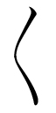
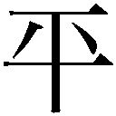

| 三酔人経綸問答 (光文社古典新訳文庫) | |
| 中江 兆民 | |
| (2014) | |
三酔人経綸問答
中江兆民
鶴ヶ谷真一訳
Title:三酔人経綸問答
1887
Author:中江兆民
三酔人経綸問答
三酔人経綸問答
三酔人経綸問答
南海仙漁 著
南海先生は生まれついての大酒飲み。そのうえ政治論議が大好きときている。酒の一、二本も飲めば、もう心うきうき、はるか宇宙を遊泳している気分である。見るもの聞くことただユカイ、世にいう鬱など、どこ吹く風。
さらに二本、三本となれば、気も心も高揚し、奇想こんこんとわき出るかのようだ。四畳半にいながら世界をざっと見わたして、あっというまに千年前に行ったかと思えば、千年後にも飛んでゆく。この地球号の進路を定めて、社会の方計を講義におよぶ。とうとう思いこうじて、「このわたしが人間こう生きればよろしいと、人類諸君を教え導く世の指針である。世間にはびこる政治音痴の近眼どもが、やたらに舵をとって航路を誤らせ、暗礁にぶちあたり浅瀬にのりあげ、自分ばかりか多くの人たちまで災難に巻き込むとは、これ以上の悲惨はあるまい」などと言いはじめた。
しかしこの先生、その身は現実にありながら、心はここになく、仙人の住むとかいう藐姑射の山に登り、無何有郷に遊んでいるので、いうところの地理も歴史もその名は同じでも現実とは大違い。しかし先生の地理にも、寒い国あり暑い国あり、大国あり小国あり、文明、未開の社会あり、さらに治世あり争乱あり、繁栄あり衰退ありで、ときには現実の地理、歴史にぴたりと一致することもないわけではない。（欄外にいわく。南海先生はこの現実社会の地理を知らず（１））
さらに飲むこと二本、三本となれば、耳ほてり目くらみ、手足が勝手に動きだし、興奮のあまり跳びあがり、ばったり倒れてそのまま意識を失ってしまう。二、三時間ぐっすり眠ると、酒も夢もさめ、酔っぱらったときの言動をすっかり忘れはてて、きょとんとしている。これがよくいう、つきものが落ちたということらしい。
先生の知人や、その人柄を伝え聞いた人々が、酔っぱらって披露される先生の奇論を聞こうと、酒を一樽、肴を一籠たずさえて先生の小さな家を訪れるようになった。ともに杯をあげて、だいぶ酔いがまわったころを見はからい、わざと国家の大事に話を向け、乗せられた先生が奇説をとうとうと論じだすのをおもしろがる者がいる。先生のほうも、またそれを察知して、「こんどまた国家の大事について語るときには、あまり酔っぱらわないうちに、要点をいちいち書きとめておき、ときどき取りだしては手を入れて、いつか一冊の小さな本にまとめれば、自分も楽しいし、人が読んでもおもしろいだろう。そうだ、それがよい」と心に決めた。
＊
このところ、連日のけぶるような長雨にふりこめられ、気も心も鬱陶しく、不快きわまりない。ある日たまたま、先生は酒をもってこさせ、ひとり杯をかたむけるうちに、例によって心うきうきと宇宙を散策する気分になった。そのとき二人の客があり、金の斧の洋火酒を持参した。初対面で姓名も知らない客であったが、先生はそのブランディーを一目見ただけで、早くも酔いがいくらか進んだようだ。
客のひとりは、頭のてっぺんから爪先まですきのない洋装、鼻筋通って目元すずしく、すらりとして動作にむだなく、言葉は明解。この人物はきっと、思想という部屋に暮らし、道理という空気を呼吸し、論理という直線に従ってまっすぐ歩み、現実の曲がりくねった道筋に踏み入ることなど考えもしない哲学者にちがいない。もうひとりの客は、背が高く、腕は太く、色あさぐろく、眼窩は深い。絣の羽織に短い袴をつけたその姿は、一目見て、雄大を好んで冒険を喜び、尊い生命を餌にして功名という楽しみを釣り上げる、あの英雄豪傑の部類であろう。（欄外にいわく。民主主義者と侵略主義者が南海先生を訪れる）
席につき、たがいに挨拶を終えると、おもむろに持参のブランディーがつがれ、主人と客が酒杯のやりとりをするうちに、いよいよ座が盛り上がってくる。先生は客のひとりを紳士君と呼び、もうひとりを豪傑君と呼んで、ことさら姓名を尋ねもしない。客もまた気を悪くするでもなく、ただにこにこしている。やがて、洋学紳士がきりだした。
「先生のご高名はかねがねうかがっております。先生の学識は東西にわたり、見識は古今をつらぬくということですが、ぼくもまた世界の情勢についていささか考えるところがあり、ぜひ先生のご意見をお聞きしたい。
こんにち第一に論じるべきは、民主制であります。ああ、民主制。君主宰相による専制政治は愚かにも自身その欠陥に気づかない。立憲制はその欠陥を悟り、半ばを改めただけです。民主制こそ度量のひろい、一点の汚れもない体制なのです。
われわれは文明の進歩に後れをとった一小国でありながら、頭をあげてアジアの片隅にすっくと立ち上がり、一躍、自由、友愛の境地に跳びこむのです。要塞をとりこわして平地にし、大砲を鋳つぶして戦艦を商船に変え、兵隊は市民となって、ひたすら道徳を研鑽し、工業技術の開発に努め、純然たる哲学の申し子となったとあっては、文明をもって自ら傲るヨーロッパ諸国の人々も、深く恥じ入るのではないでしょうか。彼らが頑なになおも改めず、はじらいもなく、こちらの軍備の撤廃につけいり強引に攻め込んできたとき、われわれはみな、わずかの武器も一発の弾も持たずに礼儀正しく迎えたなら、いったい彼らに何ができるでしょうか。剣をふるって風を斬れば、どんなに剣が鋭くても、風はひょうと吹き過ぎて、とらえどころがない。われわれはその風になろう」（欄外にいわく。海防は野暮の極致なり）
「弱い小国でありながら、強い大国と交わるのに、相手の万分の一にも足りない有形の武力をふるうのは、卵を岩に投げつけるようなものです。相手は文明を誇りとしている。であるならば、彼らには文明の基礎をなす道理と正義を理解する心がないわけではない。それならばわれわれ小国は、彼らが心に抱きながらまだ実現できずにいる無形の道理と正義を、こちらの軍備として利用できないものでしょうか。自由を軍隊・艦隊とし、平等を要塞に、友愛を銃剣とするならば、天下に対抗できるものなどあるでしょうか。
もしそうせずに、われわれがひたすらその要塞をたのみ、その銃剣をたのみ、その軍勢をたのむとなれば、要塞のもっとも堅固なる者、銃剣のもっとも鋭い者、軍勢のもっとも多い者がかならず勝つほかはありません。これは算数の道理のように、きわめて明白です。何をわざわざ苦労して、この明白な道理に逆らおうというのでしょうか。もし仮に彼らが軍隊をひきいてわが国を占領しに来たとしましょう。土地は共有物です。彼らとわれわれが共存する、そのことに何の問題がありましょう。彼らが万一、われわれの田畑を奪って耕し、われわれの家を奪って住み、また重税を課してわれわれを苦しめるとしましょう。忍耐力のある者は忍耐すればよろしい。忍耐力のない者は各自それぞれ方策を考えるまでのこと。ぼくは今日、甲の国にあるので甲国人であり、明日、乙の国にあればまた乙国人となるだけです。劫という宇宙の周期の終わる大劫会のときがまだ到来せず、われわれ人類の故郷である地球がなお存続するとき、世界万国はいずれもわれわれのわが家ではないでしょうか。
ああ、彼らは礼儀を知らず、われわれは礼儀を知っている。彼らは道理にそむき、われわれは道理にかなっている。彼らの文明こそ野蛮であり、われわれの野蛮がじつは文明なのです。彼らは怒って暴力をほしいままにし、われわれは笑って人の道を守る。このとき、彼らはわれわれに対して何ができるでしょうか。プラトンは、孟子は、スペンサー（２）は、マルブランシュ（３）は、アリストテレスは、ヴィクトル・ユゴーは、われわれを何と評するでしょう。これを見守る世界万国の人々は、われわれを何と評するでしょう。ノアの大洪水以前はともかく、大洪水以後、このような例をみなかったとは、じつに不思議なことです。われわれがその先例となろうではありませんか」（欄外にいわく。アジアの小島から理想の大国が出現）
豪傑の客はこの言葉を聞き、洋学紳士にむかって言った。「きみはどうかしたとみえる。頭のねじがすっかりゆるんだにちがいない。一人前の男子が、百万、千万人結集して一国をなしながら、一刀も返さず、一発も報いず、敵のなすがままになるとは、常軌を逸しているとしか思えない。幸いぼくの頭はまだしっかりしている。先生も、ほかの国民もみな同様だ。きみはまず頭のねじをしっかり締めなおして......」
南海先生は笑って言う、「まあまあ豪傑君、しばらく待ちたまえ。紳士君の発言を最後まで聞こうではないか」
豪傑の客もまた笑って「はい、それでは」
洋学紳士はさらにつづけて、「そもそも政治家を自任するような人物は、だれしも政治上の進化の神につかえる僧侶といえるでしょう。ならば現在を考えるだけでなく、また未来にも心をくだかなければなりません。進化の神というのは、ひたすら進むことを喜び、退くことを喜ばないからです。幸いにも道路がまっすぐで平坦ならば、いうことはありません。たとえ岩が突き出して車輪をはばみ、茨が生い茂って蹄を没するようであっても、あの進化の神は少しもくじけることなく、いよいよ勇気百倍して障害物を蹴散らしてひたすら突き進んでゆく。どしがたい民衆が、激情にかられて革命という流血の惨事に及んでも、そんなことはあり得ることとして気にもとめない。であるから、進化の神につかえる政治家という僧侶は、あらかじめ岩をどけて茨を取り去り、進化の神の怒りにふれることのないようにしなければなりません。これが進化という宗教につかえる僧侶のはたすべき役割です。岩とは何か、平等の原理に反する制度です。茨とは何か、自由の大義に反する法律です。
イギリス王チャールズ一世（４）のとき、フランス王ルイ十六世（５）のとき、政権の座にあった大臣や政治家たちが、たしかな目とひろい度量をそなえ、いち早く時勢を察知して状況をみきわめ、進化の神のためにあらかじめ道路を整備していたなら、あのような争乱は起こることはなかったでしょう。思えばイギリスの場合、過去に参考にすべき事例もなく、史上初めてのことであったため、政権の担い手が予測することもできず、一敗地にまみれたことは、致し方なかったといえるでしょう。フランスの事情はちがいます。一世紀前、わずかに海峡をへだてた隣国が、あのような惨状にみまわれるのをまのあたりにしながら平然と見過ごし、その場しのぎの策をくり返して、歳月をむだに過ごしてしまったのです。明らかな症状があるのに病気から目をそらし、名医の診断をあおがず、優柔不断のまま市民に猜疑心をおこさせ、民意をさかなでするようなことをして市民の怒りをあおり、ついには前代未聞の災厄を招いて、花の都は流血にあふれ、フランス全土は殺戮の場と化した。はたしてこれは進化の神の罪でしょうか、あるいは進化教につかえる僧侶の罪でしょうか。
さきのルイ十五世のとき、またルイ十六世の初年に、宰相や大臣が数十年先を見通し、一致協力して旧体制の弊害を取り除き、新たな魅力ある政策を示していたなら、ルイ十六世の治世の末年には、ただ一歩を進めて民主平等の制度をしいただけで、すべてはおさまったでしょう。そのときルイ王は悠然として議会にのぞみ、王冠をとって剣をおき、ロベスピエール（６）を始めとする人々に一礼して、おだやかな面持ちでほほえみながら言うのです。『諸君もいっそうよく努めていただきたい。わたしもまた市民のひとりとなって、国のために力をつくす所存であります』。そして妻子をともなって田園の緑豊かな豊饒の地を選び、山は青く水きよらかな自然のなかに身をおいて、おだやかに生涯を終えるのです。こうして、王位に執着しない、引きぎわのあざやかな王であったという誉れを後世にのこすこともできたはずでした」（欄外にいわく。フランス王ルイ十六世は幸福な晩年を送れたはず）
「さらに言えば、もしイギリスという参考にすべき前例がなかったなら、フランスの宰相や大臣は非難するにはあたらず、ぼくの言葉は的はずれでなければ厳しすぎるとされるところ。実際には明らかな前例がありながら参考にすることができず、前車がひっくり返るのを見ながら、自分もまた同じように進んでひっくり返ってしまった。こうして後世に災厄をのこしたフランスの宰相と大臣は、進化の神を妨げた悪魔であり、ルイ王を災厄におとしいれた罪人というほかはないのです」
＊
洋学紳士はもう一杯飲むと、「車は流れる水のようにとぎれることなく、馬は天かける龍のように走り去るこの都会の雑踏を、わき目もふらず威風堂々と歩いてゆく人物がある。この人こそ、敏腕の政治家にして人々をよく導き治め、朝廷を走りまわって君主を補佐する宰相でしょうか。または機をみるに敏、商機をのがさず安く仕入れて高く売り、莫大な財を手にした者でしょうか。それともセルヴァンテスなど足下にもおよばぬ大文豪か、パスカルも真っ青という天才か。どれもちがいます。
つまるところ、何とかいうその遠い先祖が、戦場で軍旗を奪い、敵の大将を斬って手柄をたてたために、爵位をさずかり土地をたまわり、以来、子孫が今日まで受けついできたということなのです。その子孫は、才覚も学識もなく、ただ祖先の朽ち果てた骨がなお墓のなかで放つくすんだ七光をたのみに、何もせず何の能もなく、しかも豊かな俸給を受け、美酒を飲み、やわらかな肉を食らい、のほほんと日を送る、あの貴族と称する一種特殊な物体です。ああ、一国にこのような物体が数十、数百も存在するとあっては、立憲制をもうけ、千万、百万の生霊が自由の権利を手に入れたところで、そもそも平等という大義を欠いているために、自由の権利とはいっても本物ではありません。なぜなら、われわれ人民が朝夕、汗水たらしてわずかに手にするもののいくらかを税金として納めるのが義務だとはいえ、行政の事務をとり行なう公務員を養うならまだしも、何もせず何の能もない物体を養わなければならないとは。これが真の自由であるはずがない。
王侯貴族の脳味噌はわれわれよりも重く、その回転数も多いのか。胃液の分泌はわれわれよりもたっぷりし、血球の発育もすこやかなのか。骨相学のガル（７）にその脳髄を見せれば、われわれの脳髄との違いがわかるのか。違いがあるとすれば、彼に分があるのか、われわれにか。聞くところによれば、人類は大脳が発達し、動物は小脳が発達しているという。それでは......彼らは着飾って生まれてきて、われわれのように丸裸ではなかったとでもいうのか。死んでも、骨も肉も朽ちはてず土に返らないのか......もし百万の国民に三人の貴族があれば、九十九万九千九百九十七人は、この三人のために自己の尊厳を傷つけられるということになり、これまた算数の道理で、きわめて明白だ......われわれ人民も貴族も、みないくつかの元素が結合してできた同じ肉体なのに。その同じ肉体同士が出会うと、こちらの肉体はぺこぺこと頭を下げてもみ手をし、あちらの肉体は立ったままわずかにうなずくだけ。こちらの肉体はあちらの肉体を、イギリスなら「侯」と呼んだり、フランスなら「侯」と呼んで敬意を表す。それに対し、あちらの肉体はこちらの肉体を何と呼んでいるのか......まったく失礼な話で、これ以上の侮辱はありません。
すると相手はこうきます。『古代か近世か、数千年前か数百年前か、何年何月何日のことかはわからないが、そのころ賢者あり、仁者あり、才あり、知あり、勇あり、能ありで、それぞれに公爵となり、侯爵となり、伯爵となり、子爵となり、男爵となった。その人々はまさに賢者であり、仁者であり、才あり、知あり、勇あり、能ありで、みな凡人にまさる人士であった。このため二世、三世、四世、五世、六世、さらに十世の孫、百世の孫に至るまで、みな賢であり、仁であり、才であり、知であり、勇であり、能であり、みな凡人にまさる。未来の子孫もまたみな凡人にまさるであろう。これは遺伝の法則であり、いいかげんな憶測ではない。だからこそ、みな公爵であり、侯爵であり、伯爵であり、子爵であり、男爵であり、凡人よりも上位にある。今後の子孫もまたみな凡人の上位にあるであろう。これは遺伝の原理にかなった制度であり、まちがった措置ではない。きみはダーウィンやヘッケル（８）の生物遺伝の学説を知らんのか......』。これには、思わず吹き出しました。
さらにまた、『きみたち数千万人、数百万人の人間は公爵でも侯爵でも伯爵でも子爵でも男爵でもない。きみにはまだその理由がわからんのか。さぞやその数千万人、数百万人の先祖はみな賢くもなく、人格者でもなく、能もなかったのだろうね。だからみな公、侯、伯、子、男になれず、その子孫もまた公、侯、伯、子、男になれずにいるというわけだ。これすなわち厳然たる遺伝の法則ですぞ。きみたち数千万人、数百万人がいかに公、侯、伯、子、男になりたがっても、はなはだお気の毒ではあるが、この遺伝の法則というものが......』、もうたくさんです。
またこうも言うのです、『しかし物事の道理には、法則のほかに例外というものがある。そのために父または祖父、あるいは曽祖父、また十代前の先祖、さらには百代前の先祖、あるいは千万代前の先祖が、賢くもなく、人格者でもなく、能もなかったために、貴族となることができなかった場合でも、ときにその子、その孫、その曽孫、その十世、百世、千万世の孫が、賢く、人格者で、有能であることがある。したがって新しく貴族となることもときにある。これが例外というもので、今日の学問ではまだ解明できないところである。解剖学、生理学、動物学、化学などがますます精密になれば、この例外もいつかかならず解明されるだろう。したがってきみが平等の大義を世に唱えようと思うなら、まず物事の道理というものを研究したまえ......』。思わずのけぞりました。
腕には緋鯉、背には青龍の彫り物、もろ肌ぬいでどんとあぐらをかき、得意満面でいるのは、ご存じ破れ長屋の大将。八つぁん、熊さんではもの足りず、緋鯉の八つぁん、青龍の熊さんと呼べば、大喜び。公侯の爵位もこれと同じで、形のない彫り物ではないですか。
『そうか。吾れ之を解せり！。やつらのは形のある彫り物なのだ。だから野蛮で、家は破れ長屋ときている。こちらのは形のない彫り物だ。だから文明で、お屋敷ずまいなのだ。まあ名前に爵位をつけて呼べば、いくらか緋鯉の八つぁん、青龍の熊さんに似てはくるが......』。爵位をもつ人は国に貢献をしたとでもいうのですか。その地位なら、それくらいの貢献はあたりまえ。さらに俸給さえもらっている。並々ならぬ大貢献をしたというが、それなら、報奨金をもらってほめられるだろうに、今どきはやらない彫り物をして、親にさずかった身体を傷つけて喜んでいるとは」（欄外にいわく。八公、熊公のために大気炎を吐く）
南海先生もまた一、二杯を傾けると、「紳士君の話はじつにさえているが、細部にこだわりすぎて、前後の脈略がはっきりしないのが惜しい」
洋学紳士は、「たいへん明敏でいらっしゃる先生が、ぼくのとりとめもない話から、とるべきところをくみとり、これはちょっとというところについては、どうかお教えいただきたいのです。通常の論理にしたがってまっとうにお話しすれば、またかということになり、先生のお耳をけがすまでもないと思ったものですから」
南海先生、「いやいや、論理の筋道にしたがって、順序だててお話しください。わたしはいずれこれを一冊の本にまとめようと考えているのですよ」
＊
洋学紳士は、銀縁にかるく手をふれてから、それではと、また語り始めた。
「だいたい近年のヨーロッパの状況を考えますと、イギリス、フランス、ドイツ、ロシアの四カ国がもっとも強く、いずれも文学にすぐれ、学術をきわめ、農業、工業、商業が盛んにして物資は豊富、陸には数千万の強い兵がいならび、海には数千隻の戦艦がつらなり、その強大堅固な軍備は、うずくまる龍がにらみをきかせ、かたわらの虎がとびかかろうとするようで、その盛んなことは前例をみないほどです。さてこのような強力な国力をうみだし、莫大な財力を築いた要因は何でしょうか。要因はさまざまあるとしても、要するに自由という原理がこの一大建築の基礎をなしたのです。
たとえばイギリスの繁栄と強大は、代々のすぐれた王にさかのぼれるとしても、一躍、多大の力をふるって奮闘したのは、チャールズ一世のときに自由の波濤がどうと湧き起こり、古い弊害である堤防を突きくずして、有名な権利の請願の実現をみたのでした。
またフランスでも、ルイ十四世のときに早くも強大な軍備を誇り、華麗な文芸を開花させて一世を風靡したとはいえ、それは専制国家という穴倉のなかにむらがり咲いた黴の花にすぎず、ほんとうに隆盛を確かなものにしたのは、あの一七八九年の大革命という偉業の成果にほかなりません。
またドイツでも、十八世紀に勇猛なプロイセン王フレデリック［フリードリヒ］二世が、武力で近隣諸国を圧倒して以来、次第に強大になってきたとはいえ、フランス革命の思想がいまだ移入されないうちは、国は分裂してばらけた薪のようでしたが、ナポレオン一世が共和国の指揮官となり、革命の旗をなびかせてウィーンやベルリンに遠征するに及んで、初めてドイツ国民は自由の空気を呼吸して友愛の滋液を飲みくだし、以来、情勢は一変、風俗は一新し、着々とこんにちの隆盛に至ったのです。
ロシアの場合には、国土が広く、その軍備の強大なことは世界第一とはいっても、文化や政治の面では他の三カ国に遠く及ばない。これは圧制の名残といわなければなりません。
人間社会のあらゆる事業は、たとえば酒のようなもので、自由とはちょうど酵母のようなものです。ワインでもビールでも、その素材がどれほどよくても、もし酵母というものがなければ、せっかくの素材もみな樽の底に沈殿して、アルコールの醸造されることはない。専制国家の事物はどれも酵母のない酒のようなもので、みな樽の底の沈殿物です。ためしに専制国家の文芸に目を通してごらんなさい。なかには見るべきものがあるにしても、こと細かに見るならば、千年たっても変化なく、万の作品を見ても同じようで、変化発展がみられない。作者の見聞する現象はどれも樽の底の沈殿物にすぎず、作者もまた沈殿した精神でそれを描写するだけ。変化発展がないのも当然です」（欄外にいわく。漢学先生、何か言い分は）
「ことによると、こう言う人がいるかもしれません。『国が富んで強いのは、財貨が豊富なためである。財貨が豊富なのは、学問が精緻なためである。なぜなら、物理学や化学、動物学や植物学、数学などの成果を取り入れて産業に応用することで、時間を節約し、体力をむだにせず、大量のすぐれた製品を生産できることは、手作業でこつこつ作るよりはるかに効率的である。これこそ国が富んで強い要因ではないか。国が富んで強ければ、すぐれた兵をもち、堅牢な戦艦をそなえ、争乱がおこれば敵国のすきをついて出兵し、僻地を開拓して耕地に変え、遠くアジア、アフリカの地を領有し、移民を送りこんで市場を設け、その地の産物を安く買い、自国の製品を高く売って莫大な利益を得る。工業がいよいよ盛んになり、販路がいよいよ拡大すれば、陸軍、海軍とも軍備はますます強大になってゆくのは自然の勢いである。国が富んで強いのは、自由の制度のためではないのだ』と。
ああ、これこそ、一を知って二を知らない者の言うことです。人間の行なう事業というのはどれも関連しあい、原因と結果は複雑にからまりあっているとはいえ、これを細かく考えれば、そこには真の原因があるのです。国が栄えて豊かなのは、学問の精緻なことが原因であり、学問の精緻なのは国が栄えて豊かなことが原因であり、このふたつは互いに原因となり結果となるのは言うまでもありません。しかしそもそも学問が精緻になることができたのは、要するに人々が知識に目ざめたためです。いったん知識に目ざめれば、学術の面で目がひらかれるだけでなく、社会制度の面でも目をひらかれるようになるのは、理の当然です。このためどの国でも、昔から学術の発達した時代は、かならず政治思想の盛んになった時期です。学術も政治思想も、ただ知識という一本の根から育った枝葉であり果実なのです。
いったん知識に目ざめ、また政治思想が盛んになると、自由という考えがたちまち多くの人間が求める活動の大きな目的となり、学生や芸術家、農民、工員、商人など、それぞれの活動にたずさわる者は、みな思うがまま自分の思想を発展させ、その意志を実現し、束縛されないことを願うものです。この熱望は昼も夜も人の心をとらえて、もうこれから逃れることはできないのです。このとき、もし世の指導者がひろく時勢をみわたし、人々の心を見通し、権力に媚びたり勢力に執着したりせず、民間の志士に先だって、古くさい障害を取り除いて自由の大気の風通しをよくするなら、社会組織は活気にあふれて運営され、老廃物は自然に排泄され、新鮮な栄養分は自然に吸収されて、学者はますます理論の発展をはかり、芸術家はますますみごとな趣向をこらし、農工商の事業家はますます活動にはげんで、上下みなうるおい、豊かな社会の実現に至るのは自然の勢いです。ぼくのいう、ある人は一を知って二を知らないとは、このことなのです。
しかも世界の大勢は、進むばかりで退くことはないのです。これは物事の永遠の法則です。昔ギリシアでは、学者のあいだにこの法則のことはすでにうすうす予感されていたのでした。あるときヘラクレイトスが流れを渡ろうと足を一歩水に踏み入れたとき、はっと気づいて、『わたしがいま足をひたした水は、もう遠く流れ去ってしまったのだ』とため息をついたのは、まさにこの法則にふれて深く感動したからでした。ただ当時はまだ実証という方法がともなわず、学術はなお幼稚な段階にあったので、その言葉は大げさに聞こえ、ついほんとかなという感じがしますが。
その後、十八世紀になると、フランス人ディドロ（９）、コンドルセ（10）などは、とくに人間社会にこの進歩の法則がとぎれることなく働いていることを発見したのでした。フランス人ラマルク（11）が登場し、動物・植物学を研究し、初めて種というものが世代を通して変化して、けっして固定したものではないという説をとなえたのです。以来、ドイツのゲーテ、フランスのジョフロワ（12）などが、みなラマルクの説を発展させ、しだいに精密なものにしていった。英国人ダーウィンに至って、その広い学識と深い洞察によって、また実証方法も精緻になったため、生物が親から子へと代々変化をとげながら形成されてゆくという法則を発見し、とくにわれわれ人類の祖先の出どころをつきとめ、その隠された意味を解明するに及んで、あのラマルク以来、学者のうかがうばかりであった進化という至上の原理を初めて世界に公表するに至ったのです。いまや、宇宙に存在するあらゆるもの、日、月、星や、海、山、川。動物、植物、昆虫に、社会や、人事や、制度に、文芸。どれもこの進化という法則に支配され、少しずつ確実に前進してゆくことは、誰も疑うことはできません。この点をもっと詳しく論じることにしましょう」
＊
「進化というものは、定まらない形態から完全な形態へ、不純な状態から純粋な状態への移行をいいます。ひらたくいえば、初めは醜いものもついには美しいものと、以前は悪いものも後には良いものとなるわけです。動物の場合、初めはいくつかの元素が結合してねばねばした塊となり、消化器や呼吸器という構造もないまま、くねくね伸び縮みしながら、全身の表面から食物を吸収し、その裏側から老廃物を排泄して生きているという状態でしたが、外界の元素の刺激と自己の細胞組織の成長力が相互に働きあい、肺を生じ胃を生じ、さらに大きく進展するに及んで、霊妙な頭脳・脊髄、敏感な神経繊維をそなえるようになったのです。これが動物進化という法則のあらわれなのです。人間世界も同様です。初めは野宿して洞穴に住み、食べ物は自然のものを採集し、池や流れの水をくんで飲み、男女の交わりは夫婦の契りもなしに行なわれていたものが、しだいに木をかけわたし石を積んで家を造るようになり、また狩猟や耕作を始め、男は外に出て働き、女は内にいて家事を営み、子を養い孫を育てるようになった。まさにこれが人間進化の法則のあらわれです。
政治のことに話を移すと、初めは強いものが弱いものをしいたげ、賢いものが愚かなものをだまし、人をおどかし服従させたものが主人となり、おそれて従うものが奴隷となり、倒れるものがあれば起きるものがあり、ごちゃごちゃになって統制のとれないのが、制度のない状態です。やがて人々は闘うことに嫌気がさし、争いよりも安心して暮らすことを願うようになると、ひとり富も人望もかねそなえた人物が現われ、人々の心をつかんで君主となり、または強暴で悪だくみにたけた者が人々をまるめこみ、自ら進んで君主と名のるようになる。ともかく君主となった者はそのうえで政治をとり行ない、法律を制定して、しばし混乱をおさめようとする。これが君主宰相による専制政治で、政治における進化の法則の第一歩なのです。
この種の制度については、君主と大臣、官僚と民衆の双方をしっかりつなぎとめて離れないようにするための一種の見えない仕掛があって、それまでのように目に見える形での強引な力関係によって、主人と奴隷という一時の関係を固定してしまうのではありません。一歩進んだ段階ともいえるその目に見えない仕掛とは何でしょうか。これが君臣の義という主従の関係です。それはかならずしも私的な作為によるわけではなく、いくらかの慈愛の心と、いくらかの恩義を感じる心とが合わさってできあがったものなのです。君主はその慈愛の心を下にほどこし、民はその恩義を感じる心を上にたいして抱く、これなのです。したがって、上の慈愛の心と下の恩義を感じる心が多ければ、君臣の義はますます重くなり、上下の関係はますます確かなものになるわけです。中国では、歴代の夏、殷、周、および漢、唐などの王朝の初期の政治はまさにこうでありました。
ただしこの制度には困った病因がひとつあります。それは、民が上にたいして抱く恩義の心は、君が下にほどこす慈愛の心の反射にすぎないため、君の慈愛の量が一パーセント減れば、民の恩義を感じる量もまた一パーセント減り、その速いこと、打てば響くようだといわれるほどです。ところが君主の慈愛心の多少は、元来、君主一個人の資質によるものであるから、不幸にして君主となった者が生まれつき凡庸なとき、なみいる近臣がどう補佐したところでもはや追いつかず、君臣の義は絶えて、国は乱れ滅びるということになります。古代中国の三王朝、夏、殷、周、および漢、唐の末期はまさにこのようでした。
また、たとえ天の恩寵によって、君主が代々きわめてすぐれ、最良の資質を失うことなく、慈愛の心を下にほどこすことますます多く、反射の効果によって、民もまたその恩義を感じる心を上に抱くことますます多く、千年も万年も愉快で楽しい治世がつづくとしても、さらにまた大きな病因が生じることでしょう。それは何か。民というものは仕事をいとなんで暮らしをたて、その収入の一部を政府に納めると、これで国への義務はすべて果たしたと、肩の荷をすっかりおろした気になって、もう何ごとも心にかけない。学者はただ文章を美しくすることだけを思い、芸術家は技巧にはしり、農業、工業、商業にたずさわる人たちはただ営利だけを思って、ほかのことは気にもとめない。こうなると、人々の頭脳の働きは次第に衰え、その立派な身体もただの飯袋子になりはてて、学者の文章、芸術家の技巧、農業、工業、商業といった業務もついに例の樽の底の沈殿物となり、活気を失い、変化もなく、国全体がただくねくねにょろにょろする肉の塊になってしまうほかはないのです。
また、われわれの遠い祖先がこぞって君主の治下に入り、何ごともその指令に従うようになったのは、ただ彼らが無知で、自分の才覚で生きてゆくことができないため、その権利を放棄して一時、身の安全をはかり、将来、子孫がいよいよ知識をたくわえるのを待って、放棄した自主独立の権利を取りもどそうと願ってのことなのです。当時、君主と民衆のあいだに、このような明らかな取り決めがあったということではないにしても、その隠れた事情を勘案すれば、そうであるよりほかはないのです。ところが君主のほうは、われわれの遠い祖先が仮に手渡した権利を握ったままどうしても返そうとせず、この権利はもともと自分のものであったと思うようになったのです。ですからぼくはこう断言します、君主宰相による専制政治は、自身の無礼に気づかないほど愚かしくも無知であると」
＊
「それでは世界各国の歴史をひもといて、その建国の始めから数千年、数百年間にわたって政治がどんな歴史を経てきたかをみてみましょう。無秩序混乱の世から、進化の第一歩を踏み出した段階に入ったことは、アフリカの未開人をのぞけば、みな同様です。たとえばアジア諸国の民は、一度この段階に入って以来、停滞していまだ進むことができずにいる。ヨーロッパ諸国の場合、早くは十七世紀から、遅くも十八世紀には第一歩の段階を経て、さらに第二歩の段階に入ったのです。これが東西の文明が進化の程度を異にする理由です。
ああ、進化の法則よ。進んで止まらないのがあなたの本領です。あなたは以前その申し子たちを駆りたて、無秩序、混乱の荒野から専制の狭い谷間に置いてしばし休息させました。その体力気力の充実するのを待って、さらに立憲制のひろびろとした岡に登らせ、雄大な景色に目をぬぐわせて心もひろやかにし、目を転じて仰げば緑の木々が天高くそびえ、雲は霞とたなびき、鳥や獣はこのときなごやかに鳴きかわすのをまのあたりにしてみせたのです。これこそが、並ぶものなく美しい風景、民主制度の高峰です。この高峰の美しい姿については、いずれまた詳しく述べることにしましょう。
ああ、進化の法則よ。ギリシア、ローマがかつて繁栄し、自由の制度がどれほどよく整っていたとしても、奴隷制という汚点があったために、あなたはその光を思う存分にかがやかそうとはしなかった。近世になって、最初にあなたをあがめ、うやうやしく従ったのがイギリスでした。あなたがアングロ・サクソンの種族をいつくしみ、大ブリテン島に降りたってから、この国の人々はきそって決意もかたく勇気をふるい、自由の旗をひるがえすに至った。怒りにかられて突進したあげく、ついにチャールズ一世の血潮が刑場に飛び散ると、あの輝かしい「権利の請願」の偉大な言葉が光をはなったのでした。
ああ、進化の法則よ。あなたは本来おだやかでやさしく、人を殺すことなど望まなかったが、人々が激情にかられたとき、あなたもまたどうすることもできなかった。人々が古いものにとらわれ、新しいものを恐れ、頑固でわきまえもなく、進路をさまたげるとあっては、あなたもまたなぎ倒して通り過ぎるほかはなかったのでした。ぼくはあなたをとがめはしません。
それでは進化の第二の段階とは何でしょうか。立憲制度です」
洋学紳士は杯を口に運んでから、思い返したように南海先生にむかい、「こんな、陳腐な理屈を聞かされて、先生はあくびどころか、吐き気をもよおされるでしょう」
南海先生、「いやいや、ヨーロッパ諸国ではあるいは陳腐かもしれないが、アジアの諸国ではまだ新鮮な感じがしますな。どうかおっくうがらずに、最後までつづけてください」
洋学紳士はさらにつづける。「立憲制度でも、あの君主宰相による専制の制度と同じで、君主は帝あるいは王と称して、すべての民衆の上におごそかに君臨し、貴族というものが、それぞれ公、侯、伯、子、男と称して代々その役目を受けつぎ、君主を取りまいて守り伝えてゆくことも同じです。ただ立憲君主の国では、五段階に設定された爵位は、その人物や家の栄誉というほどのもので、爵位についてくる特典は、上院議員になれるということだけです。彼らが所有する大土地や巨額の資本は自らの経営によって手に入れたものなので、ほかの農業、工業、商業をいとなむ人々が莫大な財産をたくわえるのと同じことなのです。専制国家の貴族が、何もせずに庶民の膏と血を吸いとって家を豊かにするのとは違います。この点もまた、立憲君主国家が専制国家よりずっと優れたところなのです。
そのうえ、専制制度を脱して立憲制になったとき、人というものは初めて独立した人格となることができるのです。どうしてでしょう。人間として必要ないくつかの権利があります。政治に参加する権利、財産を私有する権利、自由に事業を選んで営む権利、ある宗教を信じたり、または信じなかったりする権利、そのほかに言論の権利、出版の権利、共通の目的のために団体を結成する結社の権利など、これらは人間であればかならず兼ねそなえなければならない権利であり、これらを兼ねそなえて初めて人間たるに価するといえるのです。ここにひとりの人間がいるとして、首があって手がなく、または手があって足がなければ、肉体的に不自由な人ということになります。同じように、これらいくつかの権利を持たない人間は、精神的に不自由な人ということになるでしょう。このために立憲の制度では、民衆は人望ある人物を選挙で選んで代議士とし、立法という重要な権利を託します。これが議院です。したがって議院とは、全国民の意志のやどる所であり、宰相や大臣はとくに議院に従属し、さまざまの業務を分担するにすぎません。つまり、立法権を担当する議院とは、国民のために業務を委託する主人であり、行政権を担当する宰相と大臣とは、この委託を受けて業務を処理する従僕にすぎないのです。国民はこうして代議士を選んで行政を監督する権利を持つのです。そのほかに、人間として天から授かったいくつかの権利を持っていることは言うまでもありません」
＊
「以上、述べてきたところによって考えますと、例の政治上の進化の第一歩の段階である君主宰相による専制の制度と、その第二歩の段階である立憲の制度とは、かなり隔たりがあると思われませんか。君主宰相による専制の国にあっては、人間といえるのは、わずかに王侯と貴族だけであり、そのほかの百万の生霊は、みな精神的に障害を抱えた飯囊にすぎないのです。われわれ人民がいくら汗水たらしてかせいでも、君主が財政不足か、思いがけない出費を要するときは、いくらでも法令を発して租税をとりたて、その用途がはたしてわれわれの利益になるのかどうかなど初めから明らかにされることさえないのです。これでは財産を奪いとられるのと変わりません。私有の権利などあるはずがないのです。われわれ人民が思いどおりの事業にたずさわりたいと願ったところで、いろいろわずらわしい規則があって、思うようにはなりません。これではまるで手足を縛られたも同然。自由に事業をいとなむ権利などないのです。宗教となれば心も頭脳も圧迫され、言論となれば口枷を、出版となれば手枷をはめられて、結社をなそうと思えば意志も情熱も抑圧される。まるでたまたま道ばたにはえ出た草のように、何とか芽を出し根を張っても、踏みにじられたり抜かれたりして中途で枯れてしまう。自由などあるはずがないのです。
そのうえこの種の国では、官僚として生きることが尊ばれ、民間に生きることはさげすまれている。現に官僚の一員となり官吏となった者は言うまでもなく、民間にあって一事業にたずさわる者であっても、規模をひろげて事業を拡大しようと思うなら、かならず官僚の援助を借りなければならないのです。農業、工業、商業、そのほかどんな職業をいとなむ者であっても、その田畑の広く、その店の大きく、その工場の立派で、その使用人の多い者は、陰に陽にかならず天子の私的な恩恵をこうむり、甘い汁を吸っていることを忘れてはなりません。
たとえば、誇り高い文学者や、技巧を誇る美術家など、もっとも権力とは無縁と思われる者でも、こまかに観察すればじつはさにあらず。自身が現に官僚であったり、ひそかに権力者を訪れて媚びへつらうことをしなければ、立派な文章も、見事な詩文も、巧妙な技能もあり得ないのです。ああ、天子とは心臓のようなものでしょうか。丈夫な髪の毛や歯も、血液という栄養がなければ、たちまち抜け落ちてしまうでしょう」（欄外にいわく。ああ、うらやましいものだ。ああ、気の毒に）
「文学者や芸術家でさえこのざまだとすれば、ふつうの官吏や役人だったらいったいどういうことになっているのか。昔の人はこんなことを言っている。『表立っては朝廷に官職を受け、裏ではひそかに屋敷を訪れて恩をありがたがる。夜は憐みをこい、昼は人に威張り散らす』。これこそまさに、こうした者たちの実情を語る言葉といえるでしょう。人間ならば自分に誇りと慎みを持ち、へりくだったりしないのが、男子たるものの節操ではありませんか。今の官吏や役人のありさまを観察してごらんなさい。はたして自分に誇りと慎みを持つだけの気概がありますか。男子たるものの節操がありますか。もし自分に誇りと慎みを持ち、男子たるものの節操があれば、一日も官職にあることはできないでしょう。朝に正々堂々と批判の声を上げれば、夕べにはお払い箱になるだけのこと。給与がなければ、家族を養うこともできない。自分も家族も凍死や餓死する道を選ぶよりは、むしろうなだれて口をつぐみ、妻子と楽しく、新鮮なものを食べて暖かく快適な暮らしをするほうがよい。これは誰にも明らかな理屈というものでしょう。どうして馬鹿正直に大声をはりあげ、今どきはやらない人物をまねる必要がありますか......。こんな声が聞こえてきます。『君は以前にはどこかの役所にいて何かの職にあり、その後、ある官庁にあってある役職についていたというではないか。官僚の世界に長く身を置いていたわけだ。どうして君はいつまでもいこじで青臭いのかねえ......』
ところで専制制度の下に生きる人たちには、失笑、噴飯せずにはいられないことがひとつあります。たとえそうでも、それが現実であり、人間の心理を考えたら、そうなるのが道理であり、そうあるよりほかはないということです。それは何か。そのやからが媚びへつらい、舌先三寸でへりくだって少しも恥じないかと思うと、一方では自分と地位の等しい面識のない人物と会ったり、または自分より位の低い者にたいしては、どれほど傲慢になれることか。そっくり返って相手にむかい、顔をそむけて横目でにらみ、相手が十言えば自分はおもむろに一度うなずき、相手が声をあげて笑えば、わずかに口元をゆるめるだけ。鷹揚で快活なふうは少しもない。これは重々しく威厳ありそうにみせようというのだが、もともといばるのが好きなたちなのです。卑屈なありさまとちがって、まったく別人のようではありませんか。
いや、しかしそうではないのです。言いたいことを言い、したいことをして、思いどおりのびのびとふるまうのは、男子たるものの本性です。ところが、初めは我慢に我慢を重ねて自分をおさえ、気軽な言動を慎んで長い歳月を送るうちに、意識せずに巧みに媚びへつらうようになってはいても、生まれつきそなわる人間性というものはそう簡単になくなるものではない。そこで、もし心おきなくのびのびできる境遇になれば、うって変わって傲慢な態度をとり、それまでの卑屈な生き方の補いをする。これは人間性に根ざした自然の勢いでしょう。ですから西洋人はこう言っています。『自由な国の人はおだやかで品位があり、人と争うことをせず、専制国の人は傲慢になる』と。これは欺くことのない真実です。
このことを考えれば、自由の制度は人々の暮らし、衣食、事業に有益なだけでなく、人の心ばえを高尚なものにするということも無視できません。ああ、自由よ、あなたを捨てて、いったい誰を頼れというのですか。
しかしながら、政治上の進化の法則というものをさらに考えるとき、自由だけでは制度は完全とはいえず、さらに平等が加わって初めて完成されるのです。なぜなら、人々は誰もいくつもの権利を兼ねそなえてひとつも欠けるところがなく、またその権利の量は差別なしに同等でなければ、結局のところ、権利を多く持つ者は自由の度合いも多くなり、権利をわずかしか持たない者は自由の度合いも少なくなるのは、避けることのできないことでしょう。このために、平等にして自由であることが、制度のもっとも重要な原則なのです。したがって、立憲国家にも君主と公・侯・伯・子・男の爵位が存在し、そのため一国民のなかでもとくに尊いとされる物体が他と大いに区別されるというようなことは、平等の原則に欠けるというほかはないのです。立憲国家は自由という大義に従うほかはないことを知ると、憲法を定め、法律をもうけ、国民のいくつもの権利を守って、それが侵されることのないようにした。これは自由の実現のために獲得されたのだといってよいでしょう。しかしながら、国民のなかから幾人かを選び出して、爵位という形のない彫り物をほどこして他の物体の上に置き、平等という大義をそこない、これを改めることができないでいます。どうして政治上の進化の法則は、ここにとどまって終わることができるでしょうか。ですからぼくは言うのです。立憲制はその欠陥を悟り、半ばを改めたにすぎないと。
十七世紀になると、イギリスは他の諸国に先だって自由の制度を立ち上げ、大いに国の威光をかがやかしましたが、その国民性は落ち着いて揺るぎなく、重厚なため、古いものを一気に捨て去って新しいものにすることを好まず、いぜんとして王制を守り、現在に至っているのです。しかしイギリスの政治をよくみると、立憲制とはいっても、じつは民主国家と変わりなく、君主の保有する二、三の特権をのぞけば、民主国家の大統領とことなるのは、世襲制だけなのです。したがって西洋の学者が政治を論じるさい、しばしばイギリスの制度を民主制のなかに入れ、アメリカ合衆国やフランス、スイスの諸国と同様にあつかうことになるのです。
しかしながら、『荘子』に『名目は実質の後に来るもの』とあるように、実質がそなわってその名があるのはよいとしても、実質がそなわらずにその名があるようでは、すじが通っているとはいえません。しかも王室が民衆の上に君臨して代々世襲であり、また五爵の制度もなくならずにこれも世襲、さらに平等の原則も不十分となれば、イギリス人のなかの高い理想を抱くきっぱりとした人物に、さらに一歩進んで自由と平等をあわせ持つ民主制をはやく、と望む者が多いのも、不思議ではありません。人類は他の動物に比べて、進化の法則に従うことに急であり、さらに学者や理論家は、他の人たちに比べて、いっそうその傾向が強いのです。このように民主制は、政治上の進化の法則ではまさに三歩目の段階にあるからです。
立憲制は『整い備わる』といいますが、この頭で考えていると、頭のほうは整いも備わりもせず、人知れずかすかな頭痛が忍び入ってくるのはなぜでしょう。理由はわからないが、頭痛は現に起こるのです。これではまるで炎暑のさなかに薄着をしながら、重たい鉄の帽子をかぶっているのと同じではありませんか。
民主制はどうか。民主制になれば、頭上にはただ青空がひろがり、足もとには大地がひろがるばかり。気分は爽快、心もはればれ。ただ永遠を心にいだき、前後幾十億年の時間も意識になく、初めも終わりもないのです。ただ宇宙を心にいだき、左右幾億里の空間も意識になく、外も内もないのです。
精神と身体を持つものはただ人間であり、ヨーロッパ人もアジア人もないのです。ましてイギリス、フランス、ドイツ、ロシアなど何だというのでしょう。ましてインド、中国、琉球など。にもかかわらず、今はかならずイギリス、ロシア、ドイツといいますが、そんなものは国王の所有地の名です。人々に主というものがなければ、国名はただ地球のそれぞれの部分をいうにすぎないのです。だからわたしは何国人だというのは、結局、地球のどの部分に住んでいるということにすぎません。わたしと他人とは境界線で隔てられてはおらず、敵でもかたきでもありません。ところが国に主人がいるとすると、国名はその主人の屋号ということになり、わたしは何国人だというのは、つまり何国王の家来ということなのです。こうしてわたしと他人とは境界線で隔てられ、たがいに敵でありかたきになるのです。地球を各部分に分割し、そこに住む人々の心を隔ててしまうのが、王制の残した弊害なのです。民主制はどうか。あるいは甲国といい、あるいは乙国というのは、地球の地域を分割して呼びあうときの名称にすぎません。住民の意識を分けへだてる壁ではないのです。世界人類の知恵と愛情をひとつの大きな輪にして結びあわせるのは、民主制なのです。
立憲制は悪くはないが、民主制は良い。立憲制は春であり、きびしい霜や雪の気配がすっかり消えたわけではありません。民主制は夏であり、霜や雪はもう気配もないのです。中国の言葉を借りれば、立憲は賢者であり、民主は聖人です。インドの言葉を借りれば、民主は如来であり、立憲は菩薩です。立憲は尊ぶべきものであり、民主は愛すべきものです。立憲は旅館であり、遅かれ早かれいつかは立ち去らなければなりません。立ち去らないのは、足の弱い人か、足の不自由な人です。民主は自らの住居です。ああ、長い旅行から帰り、わが家に落ち着いた人は、どれほどほっとすることでしょう」（欄外にいわく。自ら答えて笑って言う、漢文のカスだ）
「フランスはイギリスに比べれば、いくらか遅れて自由への道を歩み始めました。しかし一挙に民主制に突入したことには目を見張ります。イギリス人を理性的とすれば、フランス人は情熱的です。イギリス人を落ち着いてゆるぎないとすれば、フランス人は雄々しく激しいのです。イギリス人はひとたび進歩の道を歩き始めれば、迷うということがない。フランス人は速く進むかと思えば、突然、退いたりします。ああしかし、どうして退いたなどといえましょうか。フランス人はその王、ルイ十六世の首を切って、その熱血をヨーロッパ諸国の王の頭上にそそぎかけ、衣類もなく、靴もなく、兵も、食料もないまま、ひるまず突進し、みなの頭上に平等という大きなかがやかしい光をかかげ、敵の弾丸などなにするものかと、一挙に諸国の制度を変革して、平等の体制をつくろうとしました。なんと狂おしいまでの熱情ではありませんか。ナポレオン一世が百回試みて百回成功し、千戦して千勝し、プロイセン、オーストリア、ロシア、イギリス軍がこれに対抗できなかったのは、巧みな戦略にまどわされたとはいえ、当時のフランス人が平等という熱病の熱気にかられるあまり、その体力、精神ともに通常人をはるかに超えるはたらきをしたからでした。しかしフランス人は、やがてその平等の大きなかがやかしい光のありがたみを忘れ、なんとナポレオンのかかげる旗じるしの鮮やかな色彩に目をくらまされ、民主という美しくしとやかな天女を手ばなして、帝国という悪く獰猛な虎をやしない、なだれるようにその餌食となったのです。その結果、百年前の状態に逆戻りして、フランス社会はその治世の筋道を見失ってしまいました。
いや、これこそがフランス社会の大文章であり、大波瀾といえるでしょう。イギリスは巧みな文章であり、前後の脈略がよく整っています。フランスは超絶の名文であり、高々とそびえたって脈絡などはありません。フランスはその後、シャルル十世を倒し、ルイ・フィリップを倒し、ナポレオン三世を倒し、民主制はこれで一応の決着をみたのです。ああ、変動のおさまらないのが、フランスという文章の道筋なのです。冒頭から結末まで、人を少しも退屈させず、あるときは人を愉快にし、また心をいたませるかと思うと、喜ばせたり、怒らせたり。イギリスを一冊の教科書とすれば、フランスは一本の脚本です。イギリスはラファエロの絵画であり、フランスはミケランジェロの壁画です。イギリスは杜甫の律詩であり、フランスは李白の古詩です。イギリスは程不識（13）であり、フランスは李広（14）です。ドイツはどうでしょう。これは政治を行なってはいますが、まだ政治を理論として確立してはいません......」
洋学紳士はここではたと、「ぼくは調子にのってしゃべるあまり、論理の筋道も忘れてしまいました。先生、お許し願います」
＊
ここで洋学紳士は、ひときわ声をはりあげ、「ところで、強大な地位を誇る大国が、百万の強い兵を持ち、百隻、千隻の堅固な軍艦をそなえ、民間の物資は豊かで、生産物もありあまるほどならば、その富と国力によって一時代に君臨することも不可能ではないでしょう。ところが国土がせまく人口も少ない国の場合、道義によって自国を守るのでなければ、ほかに頼るものはないのです。陸軍はわずかに十万ばかり、戦艦はわずかに十隻。もし海軍・陸軍を増強して他の強国に対抗しようとすれば、予算も資材も不足して、重税を課して民衆のうらみをかうほかはありません。開墾し、農業を盛んにするにも、もともと土地がせまいため、大規模な発展はとうてい望むことができず、収穫は限られて、思うような成果が得られない。また工業を発展させ、機械設備や手仕事によって利益を得ようとしても、生産物をさばく販路がなければ、どうにもなりません。
ためしにヨーロッパ諸国の経済情勢を見てごらんなさい。イギリスはインドを領有して基礎をかため、アジア、アフリカ、アメリカ合衆国の諸州など、いたるところを支配し、人々を移住させて自国を豊かにするための政策を抜け目なく進めています。フランスはアフリカではアルジェリアを分割して領有し、インドではサイゴンを（15）、中国では安南［中部ベトナム］を同様に領土とし、その他の諸国も、支配地の大小や支配権の強弱はさまざまとしても、みな占領・支配する土地を領有して、自国の生産物のための販路をすでに確かなものにしているのです。ささやかな一小国の国民としては、現在わずか十数万の兵を送り、十隻、百隻の船舶を出港させ、遠い外国の地を支配して、自国の生産物を流通させようなどと考えるのは、常軌を逸しています。ただ自国を守ることに努め、国内での自足に甘んじようとするならば、どうしてそうした政策を考えないのでしょう。この政策とは何かを申しあげましょう。
民主平等の制度を確立し、人は誰もみな自由を回復する。要塞を打ちこわして軍備を撤廃し、他国にたいして人を殺す意図などないことを示し、また相手国もそうだとこちらが信じていることを示して、国全体を道徳のゆきわたった道徳の庭園に、学問の農園にするのです。一院制の議院を置いて、国家の頭脳分裂を防ぐ。成年に達したものは、知能や精神に障害のあるものや、行ないに問題のあるものを除いて、貧富に関係なく、男女の差別なく、誰でも選挙権と被選挙権を持つ一人の人間とする。地方の役人については、上は県知事から下は町長・村長に至るまでみな公選制にして、役人にへつらう必要をなくし、同時に裁判官もまた公選制にして、裁判官にへつらう必要のないようにする。学校制度を充実させ、国民はみな無料で教育を受け、学識と人格のそなわった紳士淑女となれる環境を整備するのです。死刑を廃止し、法律による残酷な刑罰の道具である絞首台を打ちこわし、保護関税を廃止して、経済的な嫉妬を起こさせる障壁を撤廃する。風俗を乱し、騒乱を扇動するのでないかぎり、言論、出版、結社を規制する法令をいっさいやめて、議論するものには舌の自由を、聴衆には耳の自由を、書くものには手の自由を、読者には目の自由を、集会の参加者には足の自由をそれぞれ与えるのです。以上がその概要です。詳細は別の機会に審議することにしましょう。
道徳の庭園を人は愛し慕うので、これを壊そうと思う人はいません。学問の農園を人は利用し恩恵をこうむるので、これを荒らそうと考える人はいません。一度このことを実際にためしてみませんか。ためしていけなければやめればよいわけで、何の不都合もないでしょう。科学者をごらんなさい。何かを発見すれば、実験室にはいって実験にとりかかるではないですか。ためしに、このアジアの小国を、民主、平等、道徳、学問の実験所にしましょう。われわれはことによると、世界でもっとも貴重な愛すべき、世界平和、万人幸福という化合物を蒸留することに成功するかもしれません。われわれは社会学的実験のプリーストリー（16）、ラヴォアジエ（17）となろうではないですか。これが先ほど申しあげた政策のひとつです」
＊
「ところで進化の神はいつも高みから人類を見守っておられるのですが、その怒りを発するのはしばしばだったり、ごくまれにであったり、さまざまです。ある場合には百年に一度、ある場合には千年に一度の割合で怒るのですが、頻繁に怒るときはあまり激しくなく、千年に一度のときはじつに恐ろしい。われわれ人類は一時しのぎにあけくれて、その神がおだやかな顔を見せ、やさしい声でさとすうちは、不平等の岩が道をふさいでいても取り除くことをせず、不自由の茨が道いっぱいに繁っていても刈ることをしない。さあ、いよいよお通りというときに、神が怒りを発し、道を押し通る結果になっても、これではやむをえないではないですか。
このため、神に仕える僧侶である政治家は、それぞれの国で昔から神が怒りを発する頻度を調べて、それがごくまれなら、それこそ死にものぐるいで働いて、全面改革しなければなりません。もし僧侶である政治家が、行なうべき正しい道をないがしろにすれば、数十年、数百年後に、その君主はイギリス王チャールズ一世やフランス王ルイ十六世の二の舞となり、君主にも国民にも災難がふりかかり、政治家は後世の笑いものとなるほかはありません。見過ごせない問題です。今すぐ全面改革はむずかしいにしても、ますます道を岩石でいっぱいにして茨を生い茂らせ、やがて訪れる進化の神の怒りをあおるかのように放置するとは、いったい何を考えているのでしょう。
ことによると、こんなふうに言う人が出てくるかもしれません。『民主制？ まことに結構な道理です。でも、そんなことが実際にできますかな。知識もいまだそなわらず、風俗も申し分なしとはいかぬまま、民主制となればどうなります。世の中ただ乱れるだけとちがいますか。なるほど大統領がいて行政をきりまわすと。しかしその大統領もわれわれ庶民一同が選挙で選んだとなれば、偉いといったって帝王にはかなわない。もし身のほど知らずの悪い奴が出てきたとする。こいつがまた剛のもので、身分不相応のとんでもないことをしでかそうとなったら、お上も下々もぐずぐずになって、これで国がひっくり返らないというほうが不思議だ。誰しも偉くなりたいというのが人情。大統領は選挙で選ばれるというが、いざ当選したとなれば、たちまち自分がエライと、こうふんぞりかえるのももっともだ。こうなれば民主の国だ。ちっと気骨のある者なら、われもわれもと自分が大統領にならなければおさまりがつかない。なんなら腕の一本ぐらいへし折ってみせても、どうにかして世間の人気を自分のほうへ引き寄せてくれようと。こうなったらもういけません。これが民主国の通患というやつで。
その点、立憲制はちがいますな。帝王といえば、かけがえのないただひとり。身のほど知らずの人間など、出ようにも恐れ多くて手も足も出ない。それに結構な憲法というものがある。王侯、将軍、大臣というお偉方もやりたい放題は許されず、庶民は誰が何と言ったってみな自由だ。となれば立憲制は、君主専制の制度と民主制の中間ということになりましょう。君主は恐れ多く、身のほど知らずの人間をぐっと押さえつけるという点では、君主専制のようなもの。国民が自由であるという点では、民主国のようなもの。つまりはこの両制度のありがたいところをひとつに合わせて、不都合を取り除いたものといえますな。ですから西洋でモンテスキューが『法の精神』で、スチュアート・ミルも『代議政体論』で、さまざまな制度を論じてこう言っておりましょう。制度というものは、国民の程度の高い低いにちょうどつりあっているのがよろしいと......』
いやはや、いつもながらご年配の口にする聞きあきた話ですね。世界の進歩に立ちふさがろうとするものです。論旨はたしかなようで、じつはあやふや。現に民主制によって治められている国をとくとごらんください。アメリカ合衆国やフランス、スイスなど、はたしてその国民はみな紳士で、人品いやしからずというわけでしょうか。そんなことはありません。大統領選挙のたびに、きまって大騒動になるでしょうか。そんなことはありません。身のほど知らずの悪い奴がしょっちゅう現われて、身分不相応の途方もないことをしでかすのに手を焼いているというのでしょうか。まさかそんなことはありません。
さらに一歩を進めてこれを論じれば、もし立憲国の国民が、ただ恐れ多い君主があるために平穏に暮らせるとなれば、それは自己の自由の権利によってではなく、君主のおかげということになります。ああ、君主も人ならば、我も人です。同じ人間でありながら、自己の権利によって生きることができず、ようやく人に頼って生きていられるとは、なんともかっこわるくないですか」
洋学紳士はなおも言葉をついで、「民主制というものは、戦争をやめ平和を確立し、地球上のすべての国をひとつの家族とするために、欠かすことのできないものなのです。万国が戦争をやめて平和を確立するという説は、十八世紀にフランス人サン ピエール（18）が初めて提唱したのですが、当時この説に賛同する者はごくわずかで、これはとうてい実現できないとされたのでした。ひどいのはサンピエールを嘲笑して空論家あつかいさえしたのです。たとえばヴォルテールなどは、高い見識をもち、社会の進歩にも深い関心をもっていたにもかかわらず、サンピエールの説を聞くと、再三からかうようなことを言って、自己の聡明を誇るというふうでした。ひとりジャンジャック・ルソーが、サンピエールの説に賛同し、その雄弁な文章でサンピエールの著書を、これこそ世になければならない一冊だと賞賛しました。その後、ドイツ人カントもまたサンピエールの説を受けついで『永久平和論』を著わし、戦争をやめ友好を深めることの必要性を説いたのです。すなわち、『たとえ一歩ゆずって、功名心もあり負けず嫌いというのが人間であるとしても、また平和は実現不可能としても、理想をいだく者は誰でも、その境地に至るように力をつくさなければならない。これこそまさに、人間のなすべきことである......』と。ただし後世の論者としては、まだサンピエールの説に満足できないことがひとつあります。それは戦争をやめる方法についてです。
ピエール（18）が初めて提唱したのですが、当時この説に賛同する者はごくわずかで、これはとうてい実現できないとされたのでした。ひどいのはサンピエールを嘲笑して空論家あつかいさえしたのです。たとえばヴォルテールなどは、高い見識をもち、社会の進歩にも深い関心をもっていたにもかかわらず、サンピエールの説を聞くと、再三からかうようなことを言って、自己の聡明を誇るというふうでした。ひとりジャンジャック・ルソーが、サンピエールの説に賛同し、その雄弁な文章でサンピエールの著書を、これこそ世になければならない一冊だと賞賛しました。その後、ドイツ人カントもまたサンピエールの説を受けついで『永久平和論』を著わし、戦争をやめ友好を深めることの必要性を説いたのです。すなわち、『たとえ一歩ゆずって、功名心もあり負けず嫌いというのが人間であるとしても、また平和は実現不可能としても、理想をいだく者は誰でも、その境地に至るように力をつくさなければならない。これこそまさに、人間のなすべきことである......』と。ただし後世の論者としては、まだサンピエールの説に満足できないことがひとつあります。それは戦争をやめる方法についてです。
昔から国どうしが戦いあう原因はさまざまあるにしても、これを細かく考えると、帝王、将軍、宰相などという人たちが功名を好み、武力を用いることを喜ぶという心が、つねにこうした禍のもとにあるのです。したがって万国がみな民主制に従うのでなければ、戦争をやめるということは、とうてい実現されません。サンピエールはこれを考慮せず、当時の各国の情勢をわきまえず、昔ながらの慣習にしたがって、時代の必要とする変革も行なわないまま、ただに条約や同盟といったことを信頼して、平和を実現させようとしたのでした。さらにサンピエールはご存じなかったようですが、だいたい帝王や大将というものは、つねに自分と相手の力関係を見きわめて、相手が強くこちらが弱ければ、やむをえず一時の講和条約を結んで平和を求めるにしても、ひとたび自国が富み、兵が強くなれば、いくら条約を結んでいても、たちまちその狂暴さを発揮するものなのです。
このために、近年フランスの学者エミール・アコラースは、さまざまの法律を分類し、いわゆる国際法を道徳のなかに入れて、法律とはしなかった。その意味は、法律というものはこれをつかさどり執行する役人がいて、違反すれば必ず罰せられる。そうでなければ、法律とはいえないからです。それにたいして道徳は、守ろうと守るまいと、ただ人の良心にかかわることで、世の国際法もこれにあたるというのです。執行する役所もなく、罰する役人もいないとなれば、とうてい法律とみなすことはできないというわけです。
アコラースはまた、諸国の戦争の種類を論じてこう言っています。『戦いというものの原因には四種類ある。王家の継承によるもの、宗教の争いによるもの、人種の争いによるもの、通商の争いによるものである』。このうち、宗教と人種の争いによる戦争は、近年、影をひそめるか、勢いをなくしています。こんにちでは、重要な意味をもつ地域をめぐって、あるいは製品の販路を競い、または王家の継承権をめぐる争いが戦争をひき起こすことが多くなっています。前者はアコラースのいう通商の争いであり、後者はいわゆる王家の継承の争いです。さらにその隠された内実をさぐり出すと、原因が何かにかかわりなく、あるいは帝王、または宰相がその功名心のためにささいなことを口実に、武力をもてあそぶ場合が少なくありません。民主国の場合、自由という道理を重んじ、平等という関係を結び、友愛という思いをいだくことを社会の土台とし、隣国にまさろうとするのは、学問の精密なことと、財政の豊かさの二点に限るのです。要するに、君主国は形のある腕力によって隣国にまさろうとし、民主国は形のない思想によって隣国にまさろうとするわけです。
サンピエールがひとたび世界平和の説を唱えて以来、ジャンジャック・ルソーはこれを賞賛し、カントはこの説を発展させ、哲学にふさわしい思想に整えました。その趣旨をここにあげましょう。
カントはこう言っています。『万国が戦争をやめ、友好を深めるという望ましい結果を得るには、諸国がことごとく民主制にならなければ不可能である。諸国が民主制になったなら、国民の身は君主のものではなく、自分自身のものとなる。国民が自分の身を自分のものとし、自分が主となれば、すき好んで殺しあおうと思う者などあるだろうか......二国が戦うとき、戦いによって生じる災難はいったい誰がこうむることになるのか。武器をとって戦うのは国民である。軍事費を負担するのは国民である。家を焼かれ、田野を踏み荒らされ、その損害をこうむるのは国民である。戦いがすみ、国債の募集に応じて後始末をさせられるのもまた国民である。しかもこの種の国債は、ついに償還される見込みがない。なぜなら、ひとたび戦争になると、災難があとをたたずに憎しみが生まれ、たとえ和平がなったとしても長続きはせず、再び戦争の起こることは避けられないなりゆきだからである。このような情勢であれば、国民がすき好んで戦争を起こそうなどという理由が考えられるだろうか......』
さらにカントは続けて言う。『君主国はそうではない。帝王というものは、国の所有者であって国民の一員ではないから、国民の血を流し、国民の財産をつかいはたしたところで、気にもとめない。なぜか。軍隊がひとたび交戦し、砲弾が次々と敵も味方も死に至らしめ、弾丸がたがいを傷つけあい、内臓が泥にまみれ、血が野にそそがれるときにも、帝王は領地で狩猟を楽しみ、宮中の宴会で飲めや歌えと、いつもと変わらずに過ごしているからである。さらに、最初に軍隊を出動させるとき、帝王は立派な名目を口実にしながら、そのじつ国民の生命と財産を賭けて、ただ自己の功名を求めるにすぎず、戦争とは帝王にとって一種の娯楽のようなものなのです。
したがって、近年ヨーロッパ諸国の学者のなかで、戦争をやめ、友好を深める説を唱える者は、みな民主制を主張し、いずれは世界中の国を合わせて一つの大きな連邦を作ろうと願っている。そうした主張は現実ばなれした理想のように思えるが、例の政治上の進化の理論にそって考えると、必ずしもそうとはいえない』
ああ、進化の理論よ。なぜもっと速くあなたの車輪を回転させ、その蹄を速めて、育ちゆくものは養い育て、朽ちゆくものは即座に倒して、地球上にいる幾億の生霊をのこらず安らかに楽しく暮らすようになさらないのですか。ああ、ヨーロッパの数億の自由の人民よ、きみたちは自国にあっては、民法、刑法などの法律がきみたちの身体、財産、家を守り、不当な損害を受けることはない。もし凶暴な人間がきみたちに損害を与えることがあるなら、きみたちの気がすむように、法律がすぐに罰則を科してくれる。もし財産に損害を受けた場合も、わざわざ決闘をする必要はなく、ただ一枚の書類を提出すればよい。そのとき公平な裁判官がきちんと記された法令によって判定を下し、きみたちの損害を償わせることになる。これはつまり、きみたちが未開の闘争という危難の世界を抜け出して、文明の支配する安全な社会に暮らしているということなのです。
きみたちはさらに目を転じて国境の外をよく観察してごらんなさい。きみたちの隣人の鋳造する大砲や銃は、いつか一発できみたちを殺し、きみたちの家を焼きつくすためのものです。隣人たちの建造する軍艦や水雷は、海辺の家や樹木を打ち震わせるためのものです。きみたちは今日、枕を高くして安眠するといっても、明日は死体となって原野にその身をさらすことになるかもしれません。人と人とのあいだに文明の暮らしがいとなまれ、家族と家族とのあいだに文明の安らぎがある。人の集合である民と民とのあいだに未開の暮らしがいとなまれ、家族の集合である国家と国家とのあいだに未開の危うさがある。天然痘の伝染は、種痘で防ぐことができます。マラリアの猛威は、石炭酸で防ぐことができます。だが、隣国の敵の弾丸は避けることができません。火が家屋を焼き、水が船をくつがえすことは、保険で償うことができます。しかし隣国の敵の攻撃は防ぐことができません。きみたちは隣国の敵がある日、きみたちを斬り殺し、傷つけ、田畑や家を焼きはらい、港を爆破しないかと心配しますか。ならば、なぜきみたちはすぐに自分の大砲を破壊し、軍艦を焼却しないのですか。
十九世紀のこんにち、武力で威嚇することを国の栄誉とし、侵略を国の方針とし、他国の領土を奪い、他国の民を殺して、どうしても地球の所有者になろうと考える国は、まさに狂気の国です。ヨーロッパの東の端に、ひとつの狂気の国があるのを目にしています。その歴代の君主の抱いてきた遠い将来にわたる国策を見ればそれは知れます......劇薬を用いて、効果の予想外の激しさに驚き悔やんだのが、ドイツです。一方、実力を蓄えた相手をあなどったばかりに、屈辱を受けてうらみ憤ったのが、フランスです。多くの地所を買い、財産を蓄え、それを守ることに懸命なのが、イギリスです。子どもが大人の自分勝手な振る舞いを見て、さまざまの心配ごとを抱えていることも知らずに、やたらに嬉しがって自分も仲間に加わろうとするのが、イタリアです。四、五人の狂暴の者たちが棍棒をふるって乱闘するなかにいながら、楽しげに遊びまわって、かえってけがひとつしない無邪気な子どもたちが、ベルギー、オランダ、スイスでしょうか。アメリカ？ アメリカは、封建時代の小藩の武士たちが、藩の名誉をになって勇み立ち、憎みあうのを横目に見て笑い、ひたすら業務に励んで財産を蓄えたというところ。気も心も鈍感で、手足も不器用でにぶく、ただ図体の大きいのをたよりに人と闘うことを恐れないのが、アジアの一大国か。体はひ弱で意気地なし、ときどきよそから来た悪童どもにいじめられて苦しんでいるのが、アジアの島々か......。咄、きみはそこに一人の神童のあるのを見ないのか。彼が将来どれほどのことをなすか、計りしれないのだぞ。きみはなんでそう目がきかないのか。
フランスとドイツは、シャルルマーニュ（ドイツ語ではカール大帝）の時代には一体でした。ご承知のように、両国ともフランク王国の一部だったのです。その後、ルイ十四世の時代に、フランスはしきりにドイツを討ってこれに勝ち、その後も、フレデリック二世のプロイセンはフランスを破ってうらみをはらしたのです。さらに、ナポレオン一世のフランスも、やたらにドイツを討ってこれに勝ち、近年、ウィルヘルム一世のプロイセンはフランスを破って、また怨みをはらすという展開でした。こうして代々たがいに攻撃と反撃をくり返し、報復を重ねるということになれば、きりがありません。ウィルヘルム帝のプロイセンとナポレオン帝のフランスとは、憎しみで結ばれていました。しかし、プロイセン人のプロイセンと、フランス人のフランスとが、憎みあう理由などあるでしょうか。
プロイセン人のプロイセンと、フランス人のフランス、両者はともに文明人であり、教養ある人々です。むやみに突っかかるがむしゃら武者ではありません。フランスはすでに、フランス人のフランスです。プロイセンもいつかプロイセン人のプロイセンとなったときに、その兄弟となるでしょう。フランスは機敏、プロイセンは沈着。その二人は友人となることでしょう。ロシアとは。ロシアはがむしゃら武者です。きみたちもまた、アレクサンドル帝のロシアであることをやめ、ロシア人のロシアとなれるでしょうか。凶暴なアナーキストが過激な手段にうったえることには、深い意図があることをぼくは知っています。イギリスもまた文明人であり、教養人にして、富の蓄積を好みます。ことによると、彼らがアジア、アフリカで乱暴をはたらくのは、じつはロシアの粗暴に思い悩んだやむをえない結果なのかもしれません......イギリス、フランス、ロシア、ドイツの諸君、きみたちは自分の子どもたちのなかから、くれぐれも豪傑という怪物を出さないように。不幸にもその豪傑が出てきたときには、けっしてその言うことをきいてはいけない。もし誤まってその言うことをきくなら、きみたちはついにきみたち自身のものではなく、怪物のものになってしまうでしょう。
もう一言申し上げると、地球上の大国は、多くはみなバカであります。君主制を守って自分ばかりか君主も不幸にし、あるいはまさに不幸にしようとしている。弱小国の国々は、なぜ進んで民主制となって、自分たちを君主ともども幸福にしないのですか。地球上の強国の多くはみな臆病で、たがいに恐れると同時に強がって、兵隊を集め、軍艦をつらねて、かえって身を危険にさらしている。弱小の諸国は、なぜ自発的に兵隊を撤廃し、軍艦を手ばなして、安全をはからないのでしょうか」
豪傑の客は身をのりだして、「紳士君の言うことは、いかにも学者らしい。学者の言うことは本には著わせるが、とても実行はできません。紳士君、ためしにロンドン、パリ、ベルリン、ペテルブルクにおもむいて、思いきりきみの理想論を唱えてみたまえ。その国の新聞記者は、ことによると雑報欄のなかにこれを面白半分に紹介するかもしれない。政治家はおそらくこれを......」
洋学紳士はすかさず、「政治家はきっとこれを常軌を逸したというでしょう。政治家に変人扱いされるのは、むしろわたしの誇りです。学者で大いに結構。今の政治家といわれる人種は、世の中でもっとも政治のへたくそな種族です。学者で大いに結構。昔の人は言っています。哲学者が政治を行なわないかぎり、真の平和は望めないと。その通りです」
豪傑の客、「紳士君の言うことはぼくにもよくわかりました。しかしさらにうかがいたいことがひとつあります。紳士君が弱小の諸国に勧めて、早く民主制になり、また早く軍備を撤廃するよう願うのは、じつはアメリカ、フランスのような民主国が、その立派な意志とたぐいまれな行為に感じ入り、支援に駆けつけてくれるかもしれないという期待がありはしませんか」
洋学紳士は答えて、「そうではありません。一時の幸運を頼って、国家の大事を決断するのは、政治家がときに方針を誤るもとです。わたしはただ道理と正義を見ているのです。アメリカ、フランスなどがこちらの意志を立派とし、こちらの行為をたぐいまれと思って支援に駆けつけてくれるのか、あるいは他のロシア、イギリス、ドイツなどが、勢力の均衡によってこちらを保護してくれるのかは、みな先方の事情であり、こちらの知ったことではないのです」
豪傑の客、「それならば、もし凶暴な国があって、わが国が軍備を撤廃するのに乗じて、軍隊を送って来襲してきたら、どうしますか」
洋学紳士、「ぼくはそのような凶暴な国はけっしてないことを知っています。もし万が一そのような国があったとしても、われわれはそれぞれ自分で対処するだけです。願わくは、一ふりの剣も一発の弾丸もたずさえず、われわれはしずかにこう言いましょう。あなたがたに無礼をはたらいたことはない。幸い非難される理由もない。われわれはみなともに政治にたずさわり、争いも、いさかいもしなかった。あなたがたがやって来て、われわれの国を乱すことを望まない。一刻も早く立ち去って、国に帰りなさい、と。彼がなおもきかずに銃砲をわれわれに向けるなら、ひるまずにこう言いましょう。きみたちは何たる無礼か、と。あとは、弾を受けて死ぬだけのこと。別に秘策もなしに」
豪傑の客は吹き出して、「まさか、これほどとは思いませんでした、哲学が人の心をおおいつくしてものを見えなくしてしまうことが。紳士君が数時間にわたって熱弁をふるい、世界の情勢を論じ、政治の歴史を語ったあげく、最後の一手とは結局、全国民が手をこまねいて敵の弾丸に倒れて、有終の美を飾るというのですからね。何ともたわいない話ではありませんか。有名な進化の神の霊験とは、こんなものだったのですか。幸い他の人々の多くは、この神の慈愛にすがるようなことがないというのは知れたことですが」
洋学紳士はことさらしずかに、「ヨーロッパの学者で戦争を否定する者はみな、攻撃は道義に反するが、防衛は道義にかなうとしています。つまり、各人の持っている正当防衛の権利を国の場合にあてはめようというわけです。ぼくの考えでは、これはまったく哲学の本来の趣旨にそむいています。なぜなら、もとより人を殺すことは悪事です。生命あるものの秩序を乱すからです。ですから、人がぼくを殺しても、ぼくは人を殺してはならないのです。相手が盗賊や暴漢であるかどうかは、どうでもよい。というのも彼がぼくを殺そうとしたので、ぼくも彼を殺すとなれば、つまりは、彼が悪事をはたらこうとしたので、ぼくもまた悪事をはたらくのだというに等しいからです。あるいはこう言う人がいるかもしれません。『生命はきわめて尊いものです。にもかかわらず、あの盗人は理由なくわたしの生命を奪おうとした。だからわたしが彼を殺したのは、みずから尊い生命を守ろうとしたのだ』と。ぼくはこう言いましょう。生命はまことに尊い。ぼくの生命が尊いなら、彼の生命もまた尊い。彼が盗人かどうかは問題ではないのです。したがってぼくがみずから防いで自分の生命を守り、巡査の来るのを待つことは大いによろしい。もしそうせずに、彼の生命を奪うとなれば、これまた哲学の本来の趣旨にかなうとはいえません。ですから、正当防衛の権利は、さしあたって、実際上やむをえないものとされているのです。
しかしこれを国の場合にあてはめるとなれば、ますます道理に合わなくなるのは明らかです。というのも、敵国の来襲にあたり、われわれもまた軍備をそなえ、銃を撃ってみずから防ぐとなれば、これはすでに防衛上の進軍であり、悪事にほかならないからです。したがって、各人の持つ正当防衛の権利を国家間に用いるとすれば、ますます哲学の本来の趣旨にそむくことになるのです。豪傑君、ぼくが考えるように、われわれ国民が、剣も手にせず一発の弾丸も持たずに敵軍の前に倒れるのを望むのは、全国民を生きた道徳の象徴として、後世の社会の模範とするためなのですよ。彼が悪事をはたらいたからぼくもまた悪事をはたらこうというのが、きみの論理です。どうにもいただけない」（欄外にいわく。法律の大議論）
南海先生は一言も口をはさまずに議論を聞いていたが、ここで一杯飲み、二人にも杯をさして言った、「さすがに紳士君のご高説、じっくりうかがいました。今度は豪傑君、あなたの立派な説をうかがって、参考にさせていただきましょう」
豪傑の客は話し始めた、「だいたい戦争というものは、学者の説によればどれほど忌まわしいものだとしても、実際上どうしても避けることのできない勢いなのです。また勝つことを好み、負けることを嫌うのが動物の本性です。虎にライオン、山犬に狼から虫のたぐいに至るまで、天地に生息するものは、みな獲物を殺したり取ったりして生きているのです。ごらんなさい、生物のなかで賢いものほど勇ましく、愚かなものほど臆病です。アヒルは鳥類のうちでもっとも愚かであり、イノシシは獣類のうちでもっとも愚かです。攻撃されてもアヒルはただガアガアと鳴くだけ、イノコはただブウブウと鳴くだけで、いずれも蹴ったり嚙みついたりできないのです。これらを情け深いといえるでしょうか。赤ん坊をごらんなさい。やっとハイハイができるようになると、犬や猫を見れば棒でたたいたり、しっぽをつかんで引っ張ったりして、そのあどけない顔はにこにこして楽しそうではないですか。そうしない子はまず虚弱で元気がない。さらに、怒るというのは正義感のあらわれなのです。誰でも心に正義を抱いて怒らないものはいません。したがって猫が鼠を捕えるのは、猫の正義感です。狼が鹿を捕まえるのは、狼の正義感です。この二つを非情というのは、結局われわれ人類の言語だけです。
まだあります、学者というものは理論を尊んで闘争をさげすみますが、じつは勝つことを好んで負けることを嫌うという心理から逃れられないのです。たとえば、ふたりの学者が面と向かってそれぞれ自分の説が正しいと述べるとき、論じあい、反論しあううちに、ついには声を張り上げ、身を乗り出し、目を怒らせ、われとわが腕をつかんで悔しがり、ともにたけり狂って相手の言うことも聞かなくなる。しかも決まって口にするのは、自分が勝つことではなく、自説が道理として通ることが楽しいのだという。逃げ口上です。もしほんとうに道理の通ることを望むなら、どうしてわだかまりなく平静に論じることができないのですか。
争いは人の怒りです。戦いは国の怒りです。争うことのできない者は意気地なしです。戦うことのできない国は弱い国です。人がもし争いは悪だ、戦いはくだらんと言うなら、ぼくはそれに答えて言いましょう。人が現に悪であることはどうにもならない、国が現にくだらんことをしていることはどうにもならない、現実がそうであることはどうにもならないではないですかと。
したがって文明国はかならず強国です。戦争はするが、争いはしない。厳しい法律があるから、個人と個人とが争うことはない。強力な軍備があるから、国と国とは戦争せずにはすまない。未開の民は争いが絶えないから、その上さらに戦争をするなどという暇があるでしょうか。古今の歴史を見ると、昔の文明国というのは昔よく戦った国であり、今の文明国というのは今よく戦う国です。スパルタはよく戦った。ローマはよく戦った。近世では、イギリス、フランス、ドイツ、ロシアはもっともよく戦う国です。であるから、社会がより進歩し、知恵がよりひらけるならば、戦闘において兵器の使用がより多くなり、武器はより精密に、要塞はより堅固になる。したがって、軍備はそれぞれの国における文明の統計表であり、戦争はそれぞれの国における文明の験温器です。二国が戦うとなれば、学問のすぐれたほう、財政と物資の豊かなほうが必ず勝利を得るにちがいありません。その軍備が充実しているためです。世界の五大陸のなかで、ヨーロッパがもっとも文明が進んでいる。したがって軍備がもっとも充実し、戦えばもっとも強い。これがその証明であり、確かな事実ではないでしょうか。
ロシアは百万を超える兵を持ち、今にもトルコをのみこんで、朝鮮を併合しようとしている。ドイツもまた百万を超える兵を持ち、すでにフランスを踏みにじり、猛威をアジアにふるおうとしている。フランスもまた百万を超える兵を持ち、今やドイツに報復しようとし、先ごろ安南を侵略した。イギリスは軍艦を百隻以上持ち、地球上いたるところ植民地にしないところはない。さらにまた、近年ヨーロッパ諸国の動向が眼に入りませんか。ロシア、イギリス、ドイツ、フランス、たがいに目を怒らせ、それぞれ腕をさすり、機会をとらえてまさに飛び出そうとする勢いは、まるで爆薬を詰めて地上にころがすようなものではないですか。ひとたびドカンと爆発すれば、千万、百万の兵士がヨーロッパの平野を踏みにじり、百隻、千隻の軍艦がアジアの海をかき乱すにちがいない。こんなときに、ちまちまと自由、平等などという理想を唱え、人類はみな兄弟などという情にかられてしゃべり散らすなど、浮世ばなれもはなはだしい」
豪傑の客は、数呼吸をおいてつづけた。「炎暑に蒸され、焼かれるような日に、ひとりの人が椅子にすわり机に向かっている。本を開き、読みあぐねて何かをつぶやいたり、目を閉じて思いにふけったりしている。瞑想するうちに、自己を超越した透徹した境地に入ると、流れる汗は顔を濡らし背に伝わるが、もう暑さを感じない。あるいは冬の夜の午前四時をまわろうとするころ、灯りはかすかに、炉の火は消え入り、硯の水はするそばから凍り、手足も顔も胸も背も少しの温かみもない。その人はまた椅子にすわり机に向かっている。本を開き、読みあぐねて何かをつぶやく。目を閉じて瞑想にふけるうちに、自己を超越した透徹した境地に入ると、もう寒さを感じることはない。彼にはどんな楽しみがあるのか。楽しみはあり、それは限りない。心が他の多くの力を指揮して、帰納法を銃砲とし、演繹法を戦艦とし、誤謬というさまざまの強敵を打ち破り、真理の首都に入城しようとするのだ。その楽しみは限りない。商人は不景気という強敵に打ち勝って、巨大な利益を得ることを楽しみ、農夫は天候不順という強敵に打ち勝って、豊作を楽しむ。そのほかの仕事にたずさわる者、技術の持ち主も、勝利を求めない者はなく、快楽を求めない者はない。人にそれぞれ楽しみがあるなら、国にもまた楽しみがあるはずだ。人を楽しませるものは各人の心である。国を楽しませるものは宰相の政策であり、将軍の戦略である。政策がみごとなら、諸国は争うように同盟を結びに来るし、戦略がすぐれていれば、敵国は一戦にして敗れ去る。国の楽しみはどれほどのものだろうか。
そのうえ紳士君は、いちずに戦争を良からぬこととし、兵士が風雨にさらされる苦しみを思って、これこそほんとうの苦しみと考え、その炎暑に焼かれる痛みを思って、これこそほんとうの痛みと考えているが、はたして、これがほんとうの苦しみであり、ほんとうの痛みであろうか。戦いは何よりも勇気によるものであり、勇気は何よりも気力による。両軍がいざ対戦するとなれば、気力は狂おしいほどに高まり、勇気はりんりんと湧いてくる。これは日常を超えた異世界、異次元なのだ。苦痛などはない。たとえば、敵軍がわずか数里を隔てた所にあって野営をしている。わが軍の司令官はすでに斥候を派遣して、敵の動静を詳細につかんでいる。わが軍はあの山腹を回りこみ、この抜け道を通って敵の背後を突き、あるいはその脇を突き、敵の不意を襲う。一時に大砲を撃ち、いっせいに小銃を発射して、煙に乗じて突撃し、風とともに押し寄せれば、わが軍がかならず一撃で勝利するにちがいない。自分は身を挺して先陣を切るのだ。死なずにすめば勇猛は全軍にとどろき、死ねば名は後世に伝わるだろう。これが従軍する兵士の楽しみである。その楽しみは限りない。紳士君もまた極寒を恐れず、炎暑をものともせず、本をひらいて苦しみうめき、目を閉じて瞑想するうちに苦痛も忘れてしまうではないか。同じように、軍人はどうして死傷を苦痛とするだろうか。
原野ははてしなく広がり、十里以内に人家は見えない。はるか四方を望めば、小高い丘陵が高くまた低くどこまでも連なり、屛風を立て並べたようだ。空は晴れ、風は静かに、夜明けの光が霜を照らし、一面に敷かれた枯草の上を歩くと、ひからびた茎が踏むに従って砕ける。時は晩秋か初冬のころ。敵軍は前方に陣をとり、その数は十万、ないしは十一、二万はあろう。その指揮官は何々といい、名将とされている。兵士はよく訓練されていて強く、武器は切れ味するどい。わが軍は十万、みな勇猛で、わたしの戦術に心服している。わが軍が勝利すれば、敵を追い詰めていっさんに敵国の都に入り、領地を取り、賠償金を要求し、和平が成立すれば、わが王国の軍事的栄誉は周辺の諸国にかがやきわたる。勝利を得られないならば、死んで勇名を世にとどろかすだけだ。これが司令官の楽しみである。その楽しみはきわまりない......紳士君、紳士君。君は著述を楽しみとしたまえ。ぼくは戦争を楽しみとしよう」
南海先生はこの話を聞き、笑みを浮かべて言った、「諸君は若い盛りで、気力もみなぎっている。それぞれに自分の楽しみたいことを楽しむのだね。わたしの楽しみといえば、まあこれだけだが」と、また一、二杯をあおって、胸をなでると、「愉快、愉快」
洋学紳士は言った、「豪傑君、きみとはまさに国家の政策を論じているのであって、一個人の楽しみを論じているのではありませんよ。きみもまた少し本論をはずれたようですね」
南海先生は、「豪傑君はよく人間の意識の深いところをえぐり出し、心理のひそめる思いがけない快楽をまのあたりに描き出しました。心理学者の説を学ばれたところがありましたね」
豪傑の客はつづけて、「失礼しました。すぐ本論に入りましょう。現在、世界中の国々が争って武力を重視し、すべて学問の発見や成果は軍事利用され、軍備はますます精密になっています。たとえば物理学、化学、数学などの学問は、銃砲の精度を上げ、要塞を堅固にし、農業、工業、商業などは、軍事費を供給し、食糧を提供する。つまりあらゆる事業がみなそこに注ぎこまれ、軍事政策に協力しないものはない。これによって、百万の兵士と数百、数千隻の艦隊が、ひとたび号令が発せられれば、期限に遅れず、命令にそむかず、ただちに敵の都城をめざして進軍し、敵地の港に押し寄せるのです。
ああ、幾万もの虎や狼にねらわれているような現下の状況にあって、軍の政策に頼る以外、どんな安全策があるというのでしょう。しかしながら、相手は百万の兵を持ち、こちらの兵は十万にすぎず、相手は数千、数百の軍艦を持ち、こちらは数十にすぎないとなれば、いくら日々演習にはげんで精鋭無比をめざしたところで、しょせんは子どもの遊びにすぎない。つまりいっとき目を楽しませるだけの見せものにすぎない。こんなことで外国の侮りを防ごうなどと考えるのは、常軌を逸している。こちらの港湾がまだ爆破されずにあるのは、まれな幸運にすぎない。要塞がまだ焼きはらわれずにあるのも、同様。相手はもともとわが国を恐れてなどいない。攻めてこないのは、攻めてこない事情があるからで、いったんその気になれば、こちらの港湾は爆破され、要塞は焼きはらわれ、地方はずたずたにされ、わが首都は......ああ、こんにち小国は非常な危機に瀕しているのです。
しかしながら、小国が急に大国になろうとしても、なれるものではないし、貧乏国が急に豊かな国になろうとしても、なれはしません。兵が少ないのを多くもできず、軍艦が少ないのはどうにもならない。であるが、兵を増し、軍艦を多くし、国を豊かに大きくしないことには、滅亡の憂き目にあわないとも限らない。これは、一たす一は二というに等しい。ポーランドとビルマの例を見たまえ。幸いわれわれには、国を大きく豊かにして兵を増し、軍艦を多くする方策があるのです。なぜ今すぐこの方策を実行しないのですか。
アジアなのかアフリカなのか忘れてしまったが、一大国がある。名も忘れたが、その国はきわめて広く、資源も豊かだが、脆弱だ。聞くところによると、兵力は百余万だが、規律もなく統制もきかず、いざというときまるで役に立たないという。この国には制度などないも同然といわれる。まるでよく肥えたいけにえの牛なのだ。これは多くの小国のために、その腹を満たすにちょうどよい餌食として与えられた天の配剤なのです。なぜすぐに行って、その半分を、または三分の一でも取ろうとしないのか。勅令を一通出して、国中の男子を募れば、少なくとも四、五十万が得られる。国の財源を投じれば、少なくとも軍艦の数百、数十は買える。兵士が行き、商人が行き、農民、工員、学者も行き、商人は商売に、農民は耕し、工員は作り、学者は教えて、その国の半分、または三分の一を取ってわが国とすれば、われわれは大国となるだろう。物資は豊富で、人口は多く、啓蒙教化をほどこせば、要塞を構築し、大砲を鋳造して、陸上には百万の精鋭なる兵をそろえ、海上には数百、数千の軍艦を浮かべるに至るのだ。わが小国はたちまちロシアとなり、イギリスとなるだろう......」（欄外にいわく。豪傑君は、生まれてくるのが少し遅かった）
「もとの小国については、これをどうすべきか。われわれはすでに新しく大国を手中におさめたのであるから、もとの小国のことなど気にしないでよい。しかもわが陛下ご自身が中央の軍をひきいて、何々海軍提督と何々大将・中将・少将を護衛に従え、堅牢無比の軍艦何々に乗船されて海をこえ、先ごろわが地方の軍が大勝利をおさめたのに乗じて何々の地に都を定め、新しく宮殿を造営する。それは壮大で美しく、幾層にも積み重なる楼閣が雲を抜きん出てそびえたつ。護衛の兵は整然と居並び、騎兵は幾重にも取り巻いて、荘厳な帝王にふさわしい宮殿である。こうしてわが君主はわが新しい大国の君主となる。もとの小国のほうは、外国の侵略するに任せておく。ロシアがまず来るだろうか。これを与えよう。イギリスがまず来るか。好きに取ってくれ。......いやいや、これは最上の策ではありません。もとの小国には、民権家がいる、民主家がいる。彼らの多くは君主を好まず、兵隊を好まないが、わが君主、わが兵隊はみな新大国に移ってしまった。ならば、もとの小国はそっくり民権家・民主家の諸君に差し上げようではないか。彼らの喜びようが目に見えるようです。これが最上の策にちがいありません。
歴代の陛下の眠る御陵をどうしたらよいでしょう。民権家がいくらかたくなで君主嫌いといっても、すでに崩御された陛下を嫌って御陵に無礼をはたらくなどということがあるでしょうか。年ごとに使節を送ってみつぎものをつかわせば、あながち祖先のまつりごとをないがしろにすることにはならないでしょう。
われわれはこうして大国を手中におさめた。国土は広く、民は多く、兵は強く、軍艦は堅牢、農業はいよいよ発展し、商業はいよいよ繁栄し、産業はさらに支援を得て、政策はよくゆきわたるようになる。そうなれば、わが政府もわが国民もいよいようるおい、財力で欧米文化の成果を買い取ることになれば、イギリス、フランス、ドイツ、ロシアといった強豪も、もはやわれわれを侮ることができましょうか。
しかしイギリス、フランス、ドイツ、ロシアの諸国がこんにち豊かで強大なのは、一朝一夕のことではなく、その原因はきわめて多様であり、その手段もまたさまざまです。たとえば賢明な国王が統治して善政を行なったこともあり、傑出した宰相が君主を補佐して内政、外政に力をふるったこともあり、名将が武勲をたて、大学者が高遠な学説を唱え、工芸家が精妙な作品を作った、ということもある。たとえてみれば、平和のときには、蓄えに努めてよくひたしておき、戦時には、これを濾してかきまわす。恵みの雨にうるおし、晴天の日にさらす。あるときはけわしい谷を過ぎて平らな野にかかり、または激流を過ぎて穏やかな流れに入り、あるいは右に左に、またゆるやかに急に、無数のつらさ苦しみを経て、ようやく今日の文明の段階に到達したのです。このためにどれだけの年月と知力と工夫、さらに生命と物資を費やしたことでしょう」（欄外にいわく。何らかの実際的な経済政策が、将来ここから生まれるにちがいない）
「ところがわれわれがいっきょにその成果をかち取ろうと、文明の段階に突入しようとすれば、金を出して買い取るほかに手段がありません。しかし文明の値段はきわめて高価で、わずかの額では買うことができない。もし小国が買い取ろうとすれば、国の財政は破綻するほかはないのです。もし少しずつ買い取ろうとすれば、いくらも買い取らないうちに、わが国はたちまち相手の大国に併合されてしまうでしょう。というのも、わが国は小国とはいえ、もし併合すれば、さらにいくらかなりとも文明に加えるところがあるからです。たとえ彼がおだやかで情け深く、わが国を併合しないとしても、彼が強大でわれわれが弱小であることに変わりなく、結局われわれは自然に消滅してゆくしかないのです。ひとしずくの水滴を炎天にさらせば、太陽が水滴を乾かそうと意図しなくても、水はたちまち蒸気となって消滅するほかはない。これが強者に対する弱者、大国に対する小国の必然のなりゆきなのです。
であるから、他国に遅れて文明の威力を得ようと思う者は、その手段はさまざまあるにしても、要するに巨額の資金を投じて買いとるほかはないのだが、しかし小国にはその資金がない。何とかして大国をひとつ切り取らなければ、豊かな国となることができない。ところが、見れば目の前にむっくりと山のような大国があるではないか。天の恵みにちがいない。土地は肥沃で、兵士も民も軟弱とあっては、これ以上の幸運はない。もしもその大国が強く盛んになってしまえば、もはやわれわれがこれを切り取って豊かになろうとしても不可能です。都合よく、だらしがなくどうともできる今こそ、この大国をわれわれ小国がすばやく取らない手はないではありませんか。これを取って豊かに強くなるほうが、取らずに消滅してゆくより、はるかにまさるではないですか」
豪傑の客はさらに一杯を飲んで、つづける。「そのうえ、たとえ今は内政をよく整え、将来、文明国となるための下地をつくろうとする点からいっても、今は外国への出兵策が避けられないのです。以下これを論じましょう。
一般に、他国に遅れて文明の道をめざす者は、これまでの制度、法律、格式、意識など、すべてを変革しなければならない。ここから、国民には古いもの好きという考え方と、新しがりやという考え方の二つが生まれ、両者が対立するようになるのは自然のなりゆきです。古いもの好きの人たちは、新しい制度、法律、格式、意識はすべて、内容空虚なこけおどしであるとして、見れば目が汚れ、聞けば耳がけがれ、言えば吐き気をもよおし、考えただけで目がくらむ。新しがりやの人たちはこれと反対に、すべて古めかしいものは腐りきって一種の臭気をおびているように思い、遅れまいとひたすら新しさを求めている。そこまで極端にならない人たちにしても、つぶさに分ければ、これら二つのどちらかに入ることになるようです。要するに、古いもの好きと新しがりやの二者は、このような国民のなかで、まったく相いれない二つの元素なのです。
これら二つの元素は、かんたんに分析はできないが、年齢と土地柄によって判断すると、ほぼ分類することができます。ためしに実例について調べてごらんなさい。年齢三十以上の人物は、ほとんどみな古いもの好きであり、三十以下の人物は、ほとんどみな新しがりやです。三十以上の人物で、すすんで新しいものを取り入れて、しかも心から好きになるような人もいるが、これをよく観察してみると、いつのまにか昔を懐かしがる気持ちが起こって、その力はおとろえない。三十以下の人物では、昔を懐かしむ父親の教育に影響されるところがないとはいえないが、その言動をみれば、自然に新しがりやの元素が含まれ、古いもの好きの元素と両立しなくなります。これは当然のことで、三十以上の人物の場合、ようやく物心がつくようになった十二、三歳からは、日課として詩経、書経を暗誦し、論語、孟子を読み、または剣道や槍の稽古に励む。つまり見るもの聞くもの、思い考えること、どれも昔の事物であり、それが深く脳裡に刻みこまれ、消え去ることがないのです。三十以下の人物が頭脳に何の映像も刻まれないうちに、新しいもの漬けになれば、新しがりやの思いに心が支配されることになるのも当然。これが年齢によって好みの分かれる理由です。
ことによると、こういう人がいるかもしれません。『三十以上の人物といっても、いちはやく英語やフランス語の本を勉強したり、翻訳書をいろいろ読んだり、ひたすら時代の動静にかかわり、例の自由、平等、権利、責任などの本質をきわめ、若者にひけをとらない新しい生き方をしようと考える人たちも少なくありません。いちがいに年齢によって区別するのはどうでしょうか』。これはまことにその通りで、高い才能と卓越した見識を持っている者について、通常一般の判断基準をあてはめるべきではないでしょう。しかし、その他一般の人々については、年齢にとらわれないという人はごく限られています」（欄外にいわく。高い才能と卓越した見識を持っている者が、はたして世間にいるだろうか......いるともいるとも）
「たとえば三十以上の人物が、妻子といっしょにいるところを見てみましょう。子どもが夏、絹のパラソルをさして日ざしをよけ、冬には毛のショールで寒さを防ぐのを見ると、たちまち叱りつけ、『そうひ弱ではしようがない。炎暑や寒風がこわくて何ができる』と言ったりするのは、つまり子どもを暑さ寒さに慣れさせるというよりも、自分が幼いとき、この二つの物を手にしたことがなかったからなのです。またその妻が学問や芸術を話題にしたり、時事問題を論じたりするのを聞くと、さもエラそうに、『女は三度の飯さえつくっておればよろしい。女だてらにそんなことを言い散らして、世間の人に笑われるのがおちだ』などと言ったりするのは、中国の故事にある、『めんどりがときをつくるのは、家が落ちぶれる前兆。妻が口出しするのは、家の破滅のもと』という古来の戒めが念頭にあるわけではまったくなく、単に、若いころから女性がそのようなことを話題にするのを耳にしたことがなかったからなのです。子どもには『もう粗雑そのもの。わが子の健康さえ考えないんだから』などと笑われ、妻には『わからず屋の時代おくれ』とかげで笑われていることにも気づかない。こういうわけで、古いもの好きと新しがりやという二つの元素は、おおむね年齢によって分けられるのです。
さらにこの二つの元素は、土地柄によっても分けられます。一般に封建時代には、石高二十万石以上の大藩の場合、国を閉ざして他藩の者の入国を禁じていた。したがってその住民が生涯に見聞するのは藩内の事物に限られ、生涯に接する人といえば、みな藩内の男女だけでした。このために、その思想、習俗、服装、言語までみな同じようで、明らかな一つの型をなしていた。石高二十万石以下の小藩でも、僻地にあって他藩と交渉がなければ、その地の事情はやはり同じだった。つまり、みな実直で飾り気なく、武道を重んじるという気風だった。したがって、その人たちはおおむね粗暴で重々しく、いなか風だが勇敢。しかしその一方、ねたみ深く陰険であり、鈍感で融通のきかないところがある。そのため人々の多くは、古いものを好んで新しいものを嫌い、悲壮がかって勇ましく、勢いだって奮いたつが、細心な周到さに乏しい。
四方に交通路の発達した土地の国の住人は、たえず四方の事物にふれ、四方の人々と交渉を持ち、せわしなく、あれやこれやと日を送る。このため人々の多くは、風俗は華美にして技芸を好み、敏捷で抜け目なく、細心である。その一方、へつらい、うわついてあてにならないところがある。このため人々の多くは古いものを捨て、新しいものを求めることに急である。高い才能と卓越した見識を持っている者について、この通常一般の判断基準をあてはめるべきではないが、しかし、その他一般の人々については、お国柄にとらわれないという人はごく限られている。このため、古いもの好きと新しがりやという二つの元素は、たいてい土地柄によって分けることができるのです。
ところで遅れて文明の道を歩き始め、ひとたび改革の機運にある国の場合、この二つの元素が社会全体にひろがり、官僚と民間に及んで、それと知れないうちに国民の意識にわけいってひそかに働き、いたるところで両者の力をつくしたせめぎ合いが始まる。宰相・大臣のなかに働いては宰相・大臣を反目させ、同様に、官僚を反目させ、さらに民間の人々を、農民を、産業人を、商売人を、親子を、夫婦を、子弟を、友人をそれぞれ反目させるに至る。上は国家百年の大計から、下は民間の日常業務に至るまで。人目にたつ正面きっての議論から、ささやかな飲食や好みに至るまで、およそ人間の営みのあるところには、かならずこの二つの元素がたがいに押しつ押されつ競いあい、ついに調和することがない。このとき、政府も民間も、学者も芸術家も、農民も、産業人も、商人も、それぞれが属している従来の集団とは別に、二つの大きな党派を作り上げることになる。これが治療のむずかしい重病となるのです。
何々大臣、何々将軍は、かつての甲藩の出身であり、何々大臣、何々将軍は、かつての乙藩の出身である。甲藩は大藩なので、あるいは僻地にあって他藩の者との交渉がなかったため、人々は粗暴で重々しく、いなか風だが勇敢だ。しかしその一方、ねたみ深く陰険であり、鈍感で融通のきかないところがある。乙藩は小藩なので、あるいは交通路が四方に発達したところに位置していたので、その気風は華やかで奢侈を好み、技芸を尊ぶ。人は敏捷で抜け目なく、細心である。その一方、へつらい、うわついてあてにできないところがある。これをみれば、そのどちらが古いもの好きの元素にもっとも富み、どちらが新しがりやの元素にもっとも富むかは明らかです。高い才能と卓越した見識を持っている者については、わかりませんが。
何々大臣、何々将軍は、四、五十歳。何々大臣、何々将軍は、二、三十歳。ぼくには、そのどちらが古いもの好きの元素にもっとも富み、どちらが新しがりやの元素にもっとも富むかは明らかです。高い才能と卓越した見識を持っている者については、やはりわかりかねますが。
さらに、民間の人々のなかでも、同じ自由主義を唱え、同じ革新の説を主張する仲間であっても、古いもの好きの元素と新しがりやの元素とは、陰ながら強い作用を及ぼして、二派の人々にそれぞれ異なる様相を与えるに至るのです。見てごらんなさい、新しがりやの元素に富む仲間は、理論を尊び、腕力をいやしむ。産業を優先し、軍備を後回しにし、道徳・法律の学説を研究し、経済の理論を究める。ひごろ文人・学者を自任して、軍人や壮士の流儀、つまり声を荒らげて非難したり、声高に憤り嘆くという態度をひどく嫌う。この人々の慕うのが、ティエール（19）やグラッドストーン（20）というのは理解できます。けっしてナポレオンやビスマルクではない。一方、古いもの好きはこれと異なり、自由の意味を、したい放題することだと考え、平等の意味を、例外なくすべてをなぎ倒してまっ平らにしてしまうことだと考える。悲惨や憤りを大声で訴えることに快感を覚え、しかつめらしい法律学や緻密な経済学をいみ嫌う」（欄外にいわく。もとの自由党と改進党の党員たち）
「こういうわけで、この人々にフランス革命の記述を読ませると、ふつう考えるのとはまったく違った読み方をするので驚かされます。たとえば十九世紀の新たな時代をひらいた不滅の憲章、『人は生まれながらにして自由かつ平等の権利を有する』で始まる人権宣言にはまるで興味を示さず、ロベスピエールやダントン（21）といった人物が、競ってテロや暗殺をほしいままにする場面に至ると、思わず『いいぞ！』と叫んで、自分もいつかそんな快挙をなしとげようと、ほとんど興奮状態となる......。しかしこれは、むしろ同情すべきことかもしれません。この人たちはほんの二、三十年前まで、みな剣をとり槍をふるい、戦場での戦死こそ最高の栄誉としたのですから。その武を尊ぶならいは先祖伝来のもので、その象徴として三尺の剣があるのです。代々伝えられてきたその剣はますます尊いものとなり、明治九年に廃刀令が出ると、涙ながらにこれを箱に納め、いつかまたこれを用いる機会の来ることを心ひそかに願わないものはなかったのです」（欄外にいわく。もとの自由党はきっと怒るだろう、きっと笑うだろう）
「その後、自由民権の思想が海外から入ってくると、この人々はたちまち結集して、自由民権の旗をふりかざし、かつての武士は一変して堂々たる文明の政治家となったのです。ああ、これが真の文明の政治家といえるでしょうか。彼はその胸中に、戦場での死を栄誉とする戦死願望を深く秘めながら発散することができずにいた。たまたま自由民権の説を聞き、それが果敢な行動を尊ぶところのあるのを見て喜び、封建時代の遺物である戦死願望から、舶来の民権思想に乗りかえたのだった。この人種の頭脳の進化史とはこんなものだったのです。もちろん真の進化とはいえませんが。彼らは国会が大好きときている。どなったり叫んだりできるのが嬉しくてならないのです。宰相や大臣に堂々とわたりあえるのだからたまらない。彼らは変革を好む。古いものを捨て、新しいものを採用するのを好むわけではなく、ただ変革が嬉しいのだ。良いも悪いも関係なく、ただ変革することが楽しい。むやみに破壊してゆく勇ましさが何ともいえない。建設を好まないのは、どこか臆病を思わせるからであり、保存を嫌うのは、もっとも臆病だからである。
被選挙権がないので、国会に入ることができないとなると、城の南にある何々町に身を置き、また城の北にある何々町にもいる。今にも傾いて倒れそうな寺が彼らの事務所となっている。大臣を攻撃し、議員を、新聞記者を攻撃して力を使い果たし、初めから何のために攻撃しているのかが自分でもわからない。さきごろ新聞を発行したが、その社説の文章にもっともよく使われる言葉が、転覆、破壊、殺戮、斬殺など。その鬱屈はそうとうなもので、さらに具体的な場面を連想させる表現、肝脳地にまみる、鮮血、頭足処を異にするなどの文字をつらねて、血なまぐさい鮮烈なイメージを与えようとしたのです。このときぼくは初めて気がつきました、フランスのマラー（22）やサンジュスト（23）もフランス革命の三、四年前には、さだめし古いもの好きだったにちがいないと。
ああ、古いもの好きと新しがりやという二つの元素が国会にあって、たがいにゆずらずに対立するとなれば、国家百年の大計にどれほど障害となることでしょう。このような現象は、その明らかな例を歴史にいくらでも見出すことができ、これまでにも人心を悩ませてきたのでした。
古いもの好きの元素は、たいてい見るからに厳めしく、気質は豪壮、あるいはそう見える。何かことが起こると、断固処置して、後の問題など考えず、世論がどうあろうとかまわない。ひごろ何ごともなければ、高く腕組みしてものも言わず、どこか得意そうだ。緻密に考え円滑に行なうべき事柄は、些細としてかかわろうとしない。自分はがんらい不器用で、こういうことには向いておらん、何君ならば知恵も腕もあり、そつなくやってのけるから、彼ならうってつけだろうなどと言う。ひごろあまり重大でないことには、賢くも愚かのふりをし、巧みにも拙いまねをして、知っていても知らない、できることもできないと言いはって、他人を推薦して自分は出ようともしない。つまらぬことに心をくだく必要はないと考えるのだ。ところが、いったん重大な結果をひき起こすような事柄があると、やおら顔を上げて自説を主張し始めてゆずらず、まわりが騒ぎたてようと一向にとりあわない。正しいかどうかは問題でなく、かならず自説を実行することが肝心で、途中で折れて他人の説に従うくらいなら死んだほうがよい」（欄外にいわく。政治的な力士の顔ぶれ）
「新しがりやの元素はこれと異なり、大きなことも小さなことも慎んで尊重し、心をくだいてよく考え、あらゆる場合を想定し、差しさわりがないと判断できなければ、あえて実行しようとはしない。したがって、その多くの人は見るからにさわやかな感じがして、落ち着いて考え深く、あるいはそう見える。
古いもの好きの元素は、屈服しないということを目的とし、新しがりやの元素は、失敗しないことを目的とします。ごらんなさい、昔からこの二つの元素がともに政府にあるときは、その政策がどうもよく理解しにくいということが少なくありません。しかしこれはべつに不思議ではなく、両者が争って古いもの好きが勝った場合、政府の決定にはかならず決然としたものがうかがわれ、反対に、新しがりやが勝った場合、その決定には周到さがあらわれるものです。こういうわけで、近年の、ひどい場合はここ数カ月の政府の決定を一通り比べてみると、その趣旨がどうも一貫性を欠いているようにみえる。その推薦し、抜擢した人物については、いっそうはなはだしい。人間、自分の気に入った人物を推薦し、好意をもつ人物を抜擢するのはごく自然のことです。したがって、才能・器量のある、あるいはそう思わせる官吏は、新しがりやが引き寄せることになり、節操があり、あるいはそれらしい官吏は、古いもの好きが引き込む。これは心理学的に説明できるわけです。こうなると、あらゆる官庁の長から、筆記の下級役人に至るまで、古いもの好きに引き寄せられたか、新しがりやに引き込まれたかのどちらかであり、それぞれ賄賂や縁故にたよったり、自分を飾りたてて売り込んだりと、誰もが地位にありつけることを求めるようになれば、堂々たる官界は二つの元素を代表する二つの党派の巣窟となってしまう。これは歴史を見れば明らかです」（欄外にいわく。書記官というものは、世界中みなこの通り）
「紳士君、紳士君。国中が政府も民間も、二つの元素が力を競いあう場になって、たがいに勝利をめざして激突するとなれば、国は危機に瀕するではありませんか。たとえ、二つの元素がおのおの自省して和解しようとしても、それぞれ本来の性質が違うために、どのように取りはからおうと、自然に障害の出てくることをいかにしたらよいか。二つの元素のひとつを取り去るのでなければ、国家の大事を行なうことはできないのです。紳士君、紳士君。この二つの元素のひとつを取り除くことができなければ、きみのあがめてやまない例の進化の神も、どうやら霊験あらたかとはいかないようですね」
紳士君、「二つの元素のどちらかを取り除くとなれば、古いもの好きを除くべきか、新しがりやを除くべきでしょうか」
豪傑の客、「古いもの好きでしょうね。新しがりやを人体の肉にたとえるなら、古いもの好きは癌ということになります」
洋学紳士、「きみは先にぼくの論をそしって、学者の現実ばなれした理論と言いましたね。今は改革の機運にあるわが国の二つの元素を論じるに及んで、新しがりやの元素を残して、古いもの好きの元素を除こうと、これを癌にたとえました。きみの論はおそらく前後の脈絡がないようですね。真理のあざむけないことが、これでわかります」
豪傑の客は笑って、「そのとおり。きみは純然たる新しがりやです。民主制を信奉し、軍備の撤廃を願う。ぼくは本来、古いもの好きの元素で、軍備に頼って国を救おうというのです。きみはただ肉体を太らせることだけしか知らないが、ぼくは国のために癌を除くのです。癌を取り除かなければ、肉体を太らせようとしてもできませんからね」
洋学紳士、「癌を取り除く方法は？」
豪傑の客、「切除するほかはない」
洋学紳士、「きみ、冗談はよそう。癌は病気だから切除することは可能だ。しかし古いもの好きの元素は人間ではないですか。どうして切除できますか。もう少しまじめにやってほしい」（欄外にいわく。政治的な外科医の登場）
豪傑の客、「癌は切除するほかはなく、古いもの好きの元素は殺すほかはない」
洋学紳士、「古いもの好きの元素を殺す方法は？」
豪傑の客、「彼らを集めて、戦争に駆り出すのです。彼ら古いもの好きは、政府につらなる者も民間に暮らす者も、誰もが平和に嫌気がさし、何ごとも起こらない時代に自分をもてあまし、手足がうずうずしているという状態なのです。国家がもし宣戦布告をして、戦争に突入するとなれば、二、三十万の人々がたちどころに集結すること受けあいです。（ここで、洋学紳士をまっすぐに見すえて）ぼくのような者も、また社会の癌です。自分を切除して、末ながく祖国に害を及ぼさないことを願うだけです。癌を切除する戦場は、ぼくが名を忘れてしまった例のアフリカかアジアの大国がふさわしい。ですからぼくはあの二、三十万の人々とともに、あの大国におもむき、ことがうまく運べば、その一地方を手に入れて支配し、そこに一種の癌の社会を築き上げるのです。うまくいかなければ、死体を原野に横たえ、名を異国の地に残すだけです。うまくいってもいかなくても、祖国のために癌を切除するという効果があるわけです。これを一挙両得の策といいませんか。
ですから、ぼくがあたためている第一の策は、国内の成人男子をことごとく召集して、例の大国におもむき、前に述べたように、小国を大国に変え、弱い国を強い国に、貧しい国を豊かな国に変えた後、巨額の資金を出して文明の成果を買い取って西欧諸国と肩をならべ、覇権を競う、これです。第二の策があります。これは、まず国内をととのえ、制度を改革し、風俗を改めて、将来に文明の地となるために、新たな改革のさまたげとなる古いもの好きを切除する、これです。旧態依然の世に安住し、その場かぎりに終始し、断固たる決断を恐れて、適当に泳ぎまわるのが得策と考える人物は、この二つの策を聞くと、誰もが驚きあきれるにちがいない。むろんそれがなぜか、ぼくにはよくわかります。しかし昔も今も、異常事態に直面した英雄は、思いがけない発想によって、偉業をなしとげるのが常でした。『決断をもって行なえば、鬼神もこれを避けて妨げることをしない』（『史記』李斯伝）とはこのことをいうのです。また政治にたずさわる者は、時すなわち歴史的条件と、場所すなわち地理的条件によって、それぞれに手段を変えなければならない。ぼくの二策を採用してこんにちの西欧諸国に適用するなら、まさに常軌を逸しています。ですからプロイセンの場合、宰相ビスマルクとモルトケ将軍が、百万の兵を進め、百万の大砲を運んで、過去数百年にわたる忍苦に耐え、敵として一日も忘れることのなかったフランスをついに破りはしたが、講和条件として得たのは、わずかにアルザス、ロレーヌの二州と八億フランであったという事実は、まさに、当時における時と場所との条件によっていたのでした。ぼくの二つの策をこんにちのアジア、アフリカに行なうには、今がまさにその好機なのです。仮に西欧諸国の傑物がこんにちのアジアにあったなら、かならずこのうちのどちらかの策に従って、弱を強にする偉業をたてるか、あるいは癌切除の政策をためらいなく実施するだろうと、ぼくは確信しています」
洋学紳士、「たしかにナポレオン一世やチムールのような英雄なら、きみの言う二つの策を講じたかもしれない。しかし世界の進歩を大きく妨害する者は、この種の怪物なのです。自由・平等の大義と道徳・経済の周到な仕組とを破壊して、腕力第一の社会にしようというのが、この種の怪物です。十八世紀以後、ヨーロッパの山林にこの種の怪物が生まれなかったなら、民主主義の思想は大きく発展し、学術の組織はとうに規模を広げていたにちがいありません。ためしにヨーロッパの英雄とわが東洋の英雄とを比べてみたまえ。ぼくのいう怪物の英雄は、わが東方にも類似したものがいるのに、真の英雄はわが東方にはまずみあたらない。これがわが東洋がヨーロッパに及ばない点です。たとえばアレクサンドルス大王やカエサルやナポレオンを、もし漢の高祖、フビライ、太閤秀吉などと比較すれば、いくらか類似するところがあるにしても、もしニュートンやラヴォアジエやアダム・スミス（24）やオーギュスト・コント（25）と比較しようとすると、東洋に類似の人物がいるでしょうか。場当たり的な無謀な計略で目先を切り抜けようとする者は、どれも百年の大計を妨害する者なのです」
豪傑の客、「世の中のことにはすべて、理論と技術という二つの側面があるのです。討論の場で力をふるうのは、理論です。実際の場で効果をおさめるのは、技術です。医学には、医学理論と医学技術があり、政治にも理論と技術があります。細胞の学説や病原菌の理論は医学理論であり、熱病にキニーネを投じ、梅毒に水銀を用いるというのが、医学技術です。平等の主義や経済の説は、政治理論です。弱を強にし、乱を治めるのが政治技術です。きみはどうかその理論を考えてくれませんか。ぼくはその技術を論じましょう。
こんにち、ひとたびヨーロッパの情勢に目を向けると、アジアの諸島に生きてゆく者は、まるで暴風の前に置かれた灯のようなものです。さっと風が吹きつければ、灯はたちまち消えてしまうでしょう。国を憂える者は、一刻も早く手をうたなければならないと思い、今こそ外国に出兵する絶好の機会と考えています。諺にいう『鬼の来ぬまに洗濯』とは、まさにこれです。鬼とは何か。ドイツ、フランス、ロシア、イギリスです。
最近のドイツ、フランス両国の形勢にかんしては、内外の諸新聞がしきりに報道しています。両国が軍備の増強に努めている、あるいは『平和維持の模様』『ビスマルクはかくかくと言明』『ブーランジェ将軍しかじか』という調子です。ぼくはこの両国が反目しあう事情を調べてみましたが、遠からず両国が決裂すること、今日でなければ明日、今年でなければ来年というほどの状態にあることを信じて疑いません。
もとより両国の対立は、紳士君の言うように、たんにナポレオン帝のフランスと、ウィルヘルム帝のプロイセンとの怨恨に始まったわけではないのです。国と国とがこれほど激しく憎みあってきた例はほかにないのですが、それは一朝一夕のことではなく、ナポレオン帝とウィルヘルム帝は、たんにその決裂の時期にあたっていたというにすぎないのです。ビスマルクはその決裂の時期にめぐりあわせ、幸いにしてその技量を発揮することができ、一方、フランスの政治家ガンベッタは、不幸にも時機を逃し、その大胆な知略を用いる機会がなかったというわけです。ナポレオン三世は晩年、国民の期待を裏切り、議会では反対党が多数を占めたが、プロイセンへの宣戦を表明すると、議員はみな賛同しました。老練な政治家ティエールは口をきわめて戦いの不利を論じて開戦に反対したが、満場はごうごうと沸き返り、やむなく退いて家に帰ろうとしたティエールに、路上をふさいだゴロツキどもが石を投げ、罵声を浴びせたという。フランス国民のプロイセンへの憎しみの激しさがうかがわれる話です。
しかしわたしのみるところ、この二国は当初それほど深くうらみを抱いてはいなかったのです。十八世紀のころから、強力な陸軍といえばかならずドイツ、フランスの二国とされ、両国が戦うごとに、傍観者である隣国の人々がその勝敗をめぐって大騒ぎをしたため、ついに両国民は、負けてなるものか、先の敗北の恥を今度は百倍にして返そうなどと、その報復の念が途方もないほどふくれあがってしまった結果なのです。たとえてみれば、土俵上での因縁の取組を思わせるものがありますね。初めのうちは双方とも技を競いあうにすぎなかったのが、満場の館内われんばかりの大歓声。東、来因川、西、塞納川......。すでに勝敗が決すると、喝采の声が天地をふるわせるということが何度もくり返されるうちに、勝たねばならぬと双方かたきのように思いこみ、心中ふかく憎しみあう、というようなものでしょう。ですからこれは一朝一夕のことではなく、紳士君の言うように、たんにナポレオン帝のフランスと、ウィルヘルム帝のプロイセンの問題ではないのです。
ロシアとイギリスの場合、たしかに紳士君の言うようなところがあります。そもそもイギリスは、早くから経済を重視し、地球上いたるところに植民地を持って、財政の豊かさにおいて他国の追随を許しませんでした。したがって、その目的とするところは、ひとえにこれまで獲得した領土を保って失わないことであり、これ以上に領土を広げることではなかったのですが、ひとりあの猛禽類のようなロシアが、歴代の帝王の悲願であった、軍備によってその領土の拡張をはかり、イギリスの繁栄を妨げて、なんとかそのインド支配をくつがえそうと考えた。イギリスがナポレオン三世と連携して、クリミア戦争に参戦し、セヴァストーポリを陥落させ、ロシアの南下政策を打ち砕いたのも、そのような情勢を背景としていたのでした。
フランスとプロイセンはたがいに兵力を競い、武勇のほまれを争ったのであり、領土の拡張は目的ではなかった。イギリスはこれと異なり、領土と財産を守ることを目的とし、武勇を争うことを好まなかった。ひとりロシアは、昔のローマ帝国を見習い、強い兵力によって国をますます豊かにし、豊かになった資本によってますます強兵の威力を増そうとしている。これがじつにヨーロッパに戦乱の災いをもたらす火だねとなっている。とはいえ、ロシアがただちにインドに出兵しないのはなぜか。ロシアが警戒しているのは、イギリスというよりもフランス、フランスというよりもプロイセンです。東方に出兵しているあいだに、背後を突かれることを恐れたのです。このため、先ごろプロイセンとフランスが交戦すると、ロシア人は小躍りして喜び、クリミア戦争を終結させたパリ条約を破って、艦隊を黒海に出動させたのでした。
したがってぼくのみるところ、プロイセンとフランスがヨーロッパで戦うとき、ロシア軍は砂塵を巻き上げて東方に進出するにちがいない。このことはつまり、普仏戦争の災禍はヨーロッパ大陸にとどまらず、アジアの洋上にある諸島もそのとばっちりを受けることを免れず、英国艦隊の拠点とするところは、先ごろ占領して要塞化した、朝鮮海峡の巨文島にとどまらないことは疑いありません。要するに、プロイセンとフランスとはヨーロッパにおいて力を競い、ロシアとイギリスとはアジアに出て覇権を争うということが、こんにちの大勢なのです。
ああ、プロイセンとフランスの兵が硝煙をヨーロッパの田野にただよわせ、イギリスとロシアの軍が砂塵をアジアの大陸に巻き上げ、波乱をアジアの海洋に起こそうとするこんにち、例の国際法ははたして戦略のための暴力行為を抑制する力を発揮できるでしょうか。国際法が力にならないとすれば、小国はいったい何を頼りに自らを守ることができるでしょう。今や沈みゆく小舟を去り、ゆったりとしてゆるぎない艦船に移るほかはない。危うい小国を捨てて、安泰の大国におもむくほかはないのです。また、清らかで浅い流れでは大魚を釣ることができないのと同じで、平和のときには妙案を考えることはできないものです。ヨーロッパとアジアに怪しい雲が同時に湧き出るこのとき、弱小国にとって、これは災いを福に変え、弱を強に転じる好機であり、千年に一度のチャンスなのです。雷鳴のように迅速な手段をとることなく、ちまちまと田舎の老婆がぼろをつくろうような策に頼って国を維持しようとする。ぼくはそんなのんきな態度に驚くばかりです」
＊
このとき南海先生は、さらに杯を傾けると、「紳士君の論を要約すれば、民主・平等の制度はさまざまの制度のなかでもっとも完全でまじりけのないものであり、万国は遅かれ早かれかならずこの制度を採用するにちがいない。弱小の国は、富国強兵の策など初めから望むべくもないために、いち早くこのもっとも完全でまじりけのない制度を採用し、海軍・陸軍の軍備を撤廃し、強国の万分の一にも満たない軍備を捨てて、無形の道義のもとに学問を盛んにし、国そのものを精緻に彫刻した美術品のように作りあげ、強国がいずれもいつくしむほかはない存在にする、これですね。
豪傑君の論を要約すれば、ヨーロッパ諸国が軍備の争いに熱中するあまり、いったん破裂に至れば、その災禍はアジアにも及ぶ。このため弱小国は、これを機に大英断を下し、国中の成人男子を召集し、すみやかに軍装をととのえて大国を侵略し、新たに広大な領土を開拓しなければならない。この英断によって、国内政治をおさめるにも必要となる政策、つまり改革を妨害する古いもの好きの元素を排除することが可能になるのだから、外国征服の計画をやめるわけにはいかない、というものでした。
紳士君の論は、純粋をきわめた正当なものです。豪傑君の論は、卓越したあざやかな奇説です。紳士君の論は、濃密な酒のようなもの。飲めば、目がくらみ、頭脳を酔わせる。豪傑君の論は、劇薬です。飲めば、胃が破れ、腸がただれる。年をとったわたしの頭脳は、諸君の卓論をもはや咀嚼し消化することができない。諸君は、それぞれに力をつくし、時機がきたら自説を現実にためしてみることです。ぼくはそれを傍観していましょう」
ここで、ふたりの客人もそれぞれ杯をあげ、南海先生に向かって言った、「われわれふたりはすでに真情をあますところなく申し上げました。先生の御批評をうかがい、お教えいただきたく存じます」
南海先生はしばし瞑目して語り始めた。「紳士君の論は、ヨーロッパの学者がその頭脳のうちに発酵させ、筆にのせ言葉にあらわしながら、いまだ世にすっかり実現されることのなかった燦然たる思想を象徴する瑞雲といえるでしょう。瑞雲とは、めでたい未来を告げる前兆です。豪傑君の論は、古今の偉人たちが千年、百年に一度だけ実現させて功名を博したとはいっても、こんにちではもはや不可能となった政治上の幻戯です。紳士君の瑞雲は、めでたい未来を告げるしるし。はるかに望んで未来を楽しむしかないものです。豪傑君の幻戯は、過去の珍しい見もの。思い起こして過去を楽しむしかないものです。つまり諸君の卓論は......（先生、わずかに笑みを含んで）いずれも、現在に役立てることはむずかしい。紳士君の論は、全国民が一致協力しなければ実現できず、豪傑君の論は、君主宰相が独断専行するのでなければ実現できない。いずれもおそらく架空の構想であるとしか言えないでしょう。
さらに、紳士君は進化の神の霊力をしきりに力説するが、この神の進路はくねくねと曲がりくねっていて、上り下り、左に右に、船上かと思うと地上の車中にあり、行くと思えばまた戻り、戻ると思えばまた進み、紳士君の言うような、われわれ人類の定めた幾何学的な直線によって進むのではない。つまりは、われわれ人類がむやみに進化の神を先導しようなどと考えると、その災いは計りしれません。ただその行くところに従ってついてゆくしかないのです。
また、いわゆる進化の道筋とは、天下の事物が経過した跡について名づけたものです。ですから、世の始め、世界の人類がたがいに争い闘った時代も、また進化の一過程です。君主の支配した時代も、また進化の一過程であり、立憲制になったのも、民主制になったのも、また進化の一過程なのです。君主や大統領、貴族や人民、白帆の帆船や蒸気船、火縄銃やライフル銃、仏教や儒教、キリスト教、およそ世界の人類が経過したところの跡は、どれもみな学者のいう進化の神の歩いた道筋なのです。ヨーロッパ諸国のなかには、死刑を廃止した国もあるが、これもまたヨーロッパ諸国のそれなりの進化です。アフリカの種族には、人肉を食べるものがあるが、これもまたアフリカの種族のそれなりの進化です。進化の神は、天下でもっとも多くの情愛と、愛情と、嗜好と、欲望とを持った神です。
紳士君、紳士君。きみがもし進化の神は立憲制や民主制を愛して、専制を愛さないというなら、トルコやペルシアに進化の神はいないのでしょうか。もし進化の神は、生み育てることをいつくしみ、殺戮を憎むとすれば、楚の項羽が趙の投降した兵士二十万人を生き埋めにして殺したとき、進化の神はいなかったのでしょうか。
封建制の時代には封建を好み、郡県制の時代には郡県を好み、鎖国の世には鎖国を喜び、貿易の世には貿易を喜び、麦飯をたしなみ、ビフテキを、濁り酒を、ワインをたしなみ、大髻や、ザンバラ髪を好み、沈石田の水墨画を愛し、レンブラントの油絵を愛する。ああ、天下でもっとも多くを愛するものは、進化の神か。
しかしまた、進化の神の憎むというものがひとつあり、知っておかなければなりません。ことに政治家はかならず知っておくべきです。政治家でありながらこれを知らなければ、その災いはじつに計りしれないことになる。われわれのような本読みが、進化の神の憎むところを知らずに言動をなすとしても、その災いはただその身に限られるだけ。それを知らずに著作をしても、本が売れないだけの話である。陰謀を企てたとしても、何年間か監獄につながれるか、絞首刑にされるだけです。しかし政治家が進化の神の憎むところを知らずに政治を行なえば、幾千万の人類が災いをこうむるのです。なんと恐ろしいことではありませんか。
それでは進化の神の憎むところとは何か。時と場所とをわきまえずに、言い行なうことにほかならない。......いや、そうではありません。たとえ政治家が、時と場所をわきまえずに政治を行なって、幾千万の人類が災いをこうむったとしても、その跡をつぶさに見れば、学者はかならず言うにちがいない、『これはこうなるよりほかなかったために、こうなったのだ』と。そうなるよりほかなかったために、そうなったならば、それは進化の神の好むところで、憎むところではないはずです。ですから、学者が宋代の王安石が行なった革新政策を論じれば、かならず言うでしょう、『これは本来そうなるよりほかなかったために、そうなったのだ』と。つまりどんな事業であっても、これまですでに行なわれたことは、すべて進化の神の好むところなのです。それなら、進化の神の憎むところとはなんでしょう。その時にあたり、その場所において、けっして行ない得ないことを行なおうとする、これです。紳士君、きみの言うことは、今の時にあたり、この場所において、かならず行なえることなのでしょうか。それとも、けっして行なえないことなのでしょうか。
紳士君は進化の神を深く崇拝しています。ぼくはきみのおっしゃったことについて、進化の道理によって批評することを、お許し願いましょう。
紳士君は平等の制度を主張し、公・侯・伯・子・男の爵位を進化の神の憎むところとして、これを岩にたとえました。これはもっとも不適切です。もし進化の神が五つの爵位の設定を憎むというのなら、何のために、もともとある五つの爵位のほかに、さらにまた新しい貴族をうちだすのでしょうか。アジアの進化の神は、もともと公・侯・伯・子・男の五爵の制度を好んでいる。であるから、旧貴族はみな健康で、食欲も旺盛。新貴族もみな健康で、よく飲みよく食べる。炎暑の夏、ときにマラリアのような熱病が流行すると、石炭酸液を門口にたたえて予防に努めても、なお十万人の人々の遺体が火葬にふされるに至る。しかし新旧の貴族はともに伝染することなく健康そのもの。庶民や貧しい人々は、親子、夫婦そろって車を連ねて隔離病棟や火葬場に運ばれるが、新旧の貴族はいつもの豪邸にあって、傍らにはべるめかけや侍女に大きな扇で涼風を送らせて、そろって健康である。わたしの考えるところ、アジアの進化の神は、どうも貴族を好んで庶民を憎んでいるとしか思えません。ほとんど紳士君の言うところとは真逆という気さえしますが......」
南海先生はここでにわかに居ずまいを正して、「いや失敬した。ぼくの話は少し冗談が過ぎたようで、両君にお許しを請わなければなりません」
南海先生はここでぐいと杯をほして、「紳士君はもっぱら民主制を主張するが、それはまだ政治の本質をよく理解していないところがあるようです。政治の本質とは何か。国民の意向にそい、国民の知識にみあった制度を採用し、国民が安らかに暮らし、幸福を得られるようにする、これです。もし国民の意向にそわず、知識にみあわない制度をいきなり採用するなら、安らかな暮らしも、幸福も得られません。ためしに、こんにちのトルコやペルシアの諸国に民主制を行なうとしたら、民衆は驚きあわてて大騒ぎとなり、騒動に発展して流血の惨事に及びかねません。また紳士君のいう進化の道理によって考えると、専制から立憲制に至り、立憲制から民主制に至るというのが、まさに政治社会の行程なのです。専制からいっきょに民主制に至るのは、順当ではありません。なぜか。人々の意識には帝王の思想や公爵や伯爵の意象が深く刻まれており、それが一種の神仏のごとく、お守りのごとく目に見えない力を及ぼしているので、急激に民主制に移行すると、人々の意識が攪乱されてしまう。これはまさに人間心理の法則なのです。このときわずか二、三人がその制度が道義にかなっていることを喜んだとしても、民衆が恐れとまどい、大混乱におちいってはどうにもなりません。これは理の当然というものでしょう。
さらに言えば、世に民権といわれるものにも、二種類あるのです。イギリス、フランスの民権は、回復した民権といえるもので、下から進んで獲得したものです。もうひとつは、賜った民権というべきもので、上から恵まれたものです。回復した民権は下から獲得したので、その分量の多少は、こちらの意のままに決めることができるわけです。賜った民権は、上から恵まれたために、その分量の多少は、こちらで決めることができません。もし賜った民権を得て、これをただちに回復した民権にかえようとするのは、ものごとの踏むべき順番をたがえることにならないでしょうか」（欄外にいわく。この一節は、いささか得意の文章です）
「ああ、国王や宰相がその権力をかさに着て、自由の権利を国民に返そうとしない。これこそ世の動乱の原因であり、イギリス、フランスの民衆が民権の回復をはかった理由でもありました。もしそうではなく、国王や宰相が時勢をうかがい、民衆の意向にそい、その知識にみあった自由の権利を与えて、その分量も適切ならば、政府も人民も、上も下も、これほど喜ばしいことはないでしょう。危険を冒し、生命を失って千万円を得るよりは、いながらにして十万円を得るほうがましというものでしょう。さらにまた、たとえ賜った民権がどんなに分量が少ないにしても、その本質は回復した民権と少しも変わらないのですから、われわれ人民はこれを失わないように守り、大切に用いて、正しい生き方を通して育て、学問によって養い、たしかなものにする。その結果、時勢はますます進歩し、社会はますます進展するとともに、民権は豊かに大きく成長し、やがては回復した民権と肩を並べるに至る。これこそまさに進化の道理ではないですか。
紳士君、紳士君。思想は種子であり、頭脳は畑です。きみが真に民主思想を喜ぶならば、これを口に論じ、書物に著わし、その趣旨を人々の頭脳にひろく植えつけるのです。数百年後、それが豊かに国中に生い茂っているかもしれません。今は、人々の頭脳に帝王・貴族の草花が一面に根を張っていて、きみの頭脳にたった一粒の民主の種子が芽ばえたとしても、これでにわかに豊穣な民主の収穫を期待するのは誤りでしょう。
このように、人々の頭脳は過去の思想の蓄積なのです。社会の事業は過去の思想の発芽なのです。したがって、もし新たな事業を起こそうとするなら、まずその思想を人々の頭脳にとどめて、過去の思想としなければなりません。なぜなら、事業はつねに結果となって現在に現われるが、思想はつねに原因として過去にあったからです。紳士君、歴史書をひもといてごらんなさい。万国の事跡は万国の思想の結果です。思想と事業とがたがいに重なり、連なりあって、曲がりくねった線をえがいたものが、万国の歴史です。思想は事業を生み、事業はまた思想を生み、このように変転してやまないのが、進化の神の進路なのです。ですから進化の神は、社会の頭上に君臨するのでもなく、社会の足下にひそんでいるのでもなく、人々の頭脳のなかにうずくまっているのです。こうして進化の神は、人々の思想が融合して形になったひとつの円です。紳士君、きみがもし自分の頭脳にしかない思想を信奉し、これを人々に進化の神と認めさせ、信奉させようとするなら、これはたとえば紙に墨で一点を描いて、これを融合した円だと人々に認めさせるようなものでしょう。これは思想的専制にあたり、進化の神の喜ばないところであり、学者の慎まなければならないところです。
たとえれば、時代は画布であり、思想は絵の具、事業は絵画です。したがって、一代の社会は一枚の絵画です。紳士君、もしきみがまだ調合もされていない絵の具で、将来の絵を現在という画布に描こうとするなら、これは不可能に挑むほとんど常軌を逸した人間の仕業です。きみは今こそ、思想という絵の具の調合に一心に努めるのです。すると百年後に、その融かされた独自の絵の具は湧き出るように満ちあふれ、社会の絵の具皿にたたえられるでしょう。そのときこそ、一気に筆をふるって、現在という時代の画布に、現在の事業である絵を描くならば、過去の思想である彩色は、人目を奪ってまばゆいばかりに輝くのです。見た人々は讃嘆して、リューベンスをしのぎ、プーサン（26）にまさる傑作と称するにちがいありません」（欄外にいわく。これはヴィクトル・ユゴーの全集にも、バイロン卿の全集にも見当たらぬ）
「ところで、両君がそれぞれ積極的、消極的という正反対の論に固執し、ひとりはいまだ生まれていない新思想を求めてむやみに前進をこころがけ、ひとりはすでに過ぎ去った昔の見ものを懐かしんで後退をこころがけるが、わたしのみるところ、この二説はまったく相いれないようにみえて、じつは病原を同じくしている。その病原を一言でいえば、過慮、または疑心暗鬼。思い過ごしがこうじて、疑心暗鬼におちいるのです。両君はいずれも、ヨーロッパの列強が百万の強兵を養い、千万の戦艦を造って嚙みつきあい取っ組みあい、またときにアジア一帯に来て荒らし回るのを見て、疑心暗鬼のあまり、彼らはいずれ百、千の堅牢な戦艦をともなって来襲するにちがいないと考える。ここから正反対の論が出てくるのです。
そのとき紳士君は、民主制に向かい、敵意のあらわれである軍備を撤廃し、ヨーロッパ人の機先を制して矛先をかわそうとする。一方、豪傑君は、大いに外国に出兵して、他国を占領して領土を広げ、ヨーロッパの騒乱に乗じて莫大な利益をおさめようとする。いずれもヨーロッパの情勢についての疑心暗鬼によるのです。
近年、プロイセンとフランスの二国がさかんに軍備を拡張して、状況がかなり切迫しているように見えますが、わたしの見解では、じつはそうではない。彼らが軍備を少しずつ拡張しているときは破裂する可能性があるかもしれないが、大幅に拡張するときは、破裂に至ることはないのです。なぜか。両君は冬に子どもたちが雪だるまを作るところを見たことがありませんか。初めにそれほど大きくないときは、前後左右どちらでも好きな方へ転がせるが、やがて巨大な大円球となったときは、力をこめて押しても、もう動かすことができません。こんにちプロイセン、フランスというふたりの子どもは競いあって、ただその雪玉をますます大きくして相手にまさろうと夢中になっている。プロイセンが一万を増せば、フランスもまた一万を増し、プロイセンが二万を増せば、フランスもまた二万を増して、雪玉は年々ますます大きくなりつづける。ロシア、イギリスは傍観して、このふたつの雪玉のぶつかるのを待っている。しかし、ふたりの子どもは、それぞれの庭に残雪があるかぎり、ますますその玉を大きくすることに熱心で、いまだにそれを門の外に押し出そうとはしない。思うに、庭に雪がなくなるころには、二つの雪玉はみな砕けて、こなごなになっているだけです。
また国際平和論はいまだ実現できないとしても、国際交流において、道徳の意義はようやく広く認められるようになり、腕力の意義は領域をせばめてきたことは、自然の勢いであり、紳士君のいう進化の神の進路です。したがって、ロシアもその威力をアジアに示し、便利のよい地を割き取り、イギリス領のインドを脅かそうとしても、いまだ容易に手を下すことができずにいます。総じて諸国はいずれも外交において、腕力を尊んで道徳を軽んじるようだが、世人の想像するほどではない。もし、プロイセン、フランス、イギリス、ロシアのうち、一国だけが強く、他の三国のはるか上にある場合は、もっぱら腕力にものをいわせ、ほしいままに暴れまわって、少しも国際法をかえりみないということがあるにしても、今はそうではなく、四カ国の力関係がほぼ均衡しているため、いずれも仕方なく国際法を守らざるをえない。このため、小国が併合される危難を免れているのです。
さらに国家というものは、さまざまな意欲の集合体であり、君主以下、多数の官僚、議院、庶民があり、その組織は複雑をきわめているため、進路を決定し、行動を起こすことが、一個人のように身軽にはいかない。もし個人のように身軽に動き出すことができるなら、強者はつねに暴虐をほしいままにして、弱者はつねに禍をこうむることになるが、幸いにもそうはならない。一万の兵を出兵し、百の艦船を派遣するとなれば、君主が諮り、宰相や多数の官僚が議論し、議院や新聞が論じることになり、とうていひとりの男がすそをからげ、棒を手にして喧嘩に駆けつけるようなわけにはいかない。これが、イギリスのゴルドン将軍が本国からの援軍が間にあわずにスーダンで戦死した原因であり、また清仏戦争のとき、フランスのクールベ提督が本国政府の指令により待機を余儀なくされ、ついに艦内で憤死した原因でもあった。このように、ヨーロッパ諸国の兵を猛獣とすれば、その議院や新聞は鉄の檻です。さらにまた、諸国の勢力が均衡しているため、また国際法の規約がその手足を拘束するために、さすがの獰猛な獣も、牙をむいて襲いかかろうとしても、ついに獲物を食らうことができずに終わる。どうです、わたしはこう言いましょう、紳士君の民主制も、豪傑君の侵略主義も、どちらもヨーロッパ列強の形勢について、疑心暗鬼になっているところがあるためです、と」
このとき、二人の客は異口同音に、「もし彼らがある日、それでも強引に襲ってきたならば、先生はどのようにしてこれに対しますか」
南海先生、「もしも彼らが他国の批判を恐れず、国際法の定めをかえりみず、議院の決定を無視し、よこしまにも来襲したならば、徹底抗戦です。国民全員が兵となり、ときに要害に立てこもり、ときにゲリラ戦によって、神出鬼没、変幻自在に戦うのです。襲い来る者は客で、わたしが主人。彼は正義にそむき、わたしが正義です。こちらの将軍も兵士も、敵を迎え撃つ勇気に満ちあふれているなら、どうして自らの防衛をはたせないなどという道理があるでしょうか。もとより軍事にたずさわる者には、すぐれた戦略、巧妙な戦術があるはずです。
もしアジアの兵がついにヨーロッパの兵に対抗できないとなれば、紳士君の民主国の理想も、豪傑君の新大国の野望も、みな破れ去るほかないではありませんか。わたしにもべつに秘策があるわけではない。わたしのみならず、イギリス、フランスの諸国にも、べつに秘策があるわけではない。これはつまり、わがアジア諸国の兵は、侵略はできないにしても、防衛には十分の力を備えているということです。したがって、平和の時代にあっても、つね日ごろから訓練をおこたらずに武力の強化をはかれば、自力での防衛がむずかしいなどということはないのです。どうして紳士君の言うように、何もなさずに死を待つ必要があるでしょうか。どうして豪傑君の計画に従って、隣国にうらみをかう必要があるでしょうか。
どだい豪傑君のいうアフリカかアジアの一大国とはいったいどこの国をさすものか、わたしにはわかりません。ただアジアにある大国であれば、たがいに信頼しあって兄弟国となり、さしせまったときには助けあい、それぞれが自衛するべきです。やたらに武器を用い、軽率に隣国を挑発し、無実の民の生命を砲弾の犠牲にするなどは、考えるべきではないはずです。
もしそれをたとえば中国とすれば、その風俗・伝統、文物・品格、地理的条件を考えれば、アジアの小国はこれと友好を深め、交流を確かなものにし、たがいにうらみをかうようなことをするべきではないのです。国家がますます生産物を増やし、物資が豊富になれば、国土が広く人口の多い中国は、じつにわが国の一大販路であり、つきることのない利益の源泉です。このことを考えずに、国の威信にかけてなどと言い、ささいな言葉のゆきちがいを名目にして無益の争いをするようなことは、もっとも得策でないとわたしは考えます。
ことによると、こういう論者がいるかもしれません、『中国は久しくわれわれにうらみを抱いており、たとえこちらが礼を尽くして友好を深め、交流を結ぼうとしても、他の小国との関係のために、中国はつねに怒りをもってこちらに対し、何かことあれば、あるいはヨーロッパの強国と結んでわれわれを排斥し、こちらを強国の餌食にして利益を得ようとしないとも限らない』と。わたしの考えでは、中国はかならずしもそのようなことを考えてはいません。国と国とがうらみあうことになる原因は、たいてい事実にもとづくのではなく、風聞によるのです。事実を洞察すれば、少しも疑う余地はないが、風聞にかかると、なにやら恐るべきものが見えてくるのです。ですから、各国が疑いを抱くのは、各国の神経症によるのです。青色の眼鏡をかけて物を見るならば、見える物はすべて青色になります。わたしはいつも外交官の眼鏡が無色透明でないことを憐れむものです。
このために、二国が開戦に至るのは、たがいに戦いを好むからではなく、まさに戦いを恐れるためにそうなるのです。こちらが相手を恐れて急ぎ軍備に走れば、相手もまたこちらを恐れて兵を集め、たがいの神経症は日に日に盛んに激しくなる。さらに新聞が、それぞれの国の事実と風聞とを区別なく並べて報道し、それに自己の神経症の色彩を加えて一種異様な幻影で社会をおおいつくす。こうなれば、たがいに相手を恐れる二国の神経症はますますこうじて錯乱するに至り、先手をとれば勝てると思いこみ、やられる前にやってやろうと、開戦に至る。これが昔からつづく交戦の実情です。もし一方に神経症がなければ、戦いが始まることはほとんどなく、たとえ開戦に至るとしても、その国の戦略は防衛を主とし、余裕をもって対処でき、正義という名分を得て、後世の批判を受けることもないのです。
こう論じる人もいるかもしれない。『中国はたしかに国土は広いが、まさに末世にあり、革命の時期にめぐりあわせている。民衆のなかから、かならずひとりの英雄が現われ、代わって主権を握るのでなければ、結局は崩壊の勢いを止めることはできない』と。思うにこの論は、これまでの中国史における歴代の王朝の統治年数を今の愛新覚羅氏の清朝にあてはめたにすぎず、現在の状勢にあっているわけではない。というのも、王朝の統治年数をみれば、清朝の統治はもはや老朽化し、崩れかかっているようだが、幸いにもヨーロッパ文明の盛んな気が西方より吹き来たって、枯れかかった老木がとみに若返り、枝葉も青々として、ふたたび四方に緑陰の涼気を放とうとしている。さらに、こんにち朝廷に列して辮髪社会の政権にあずかる者はみな逸材にして、とくに海軍・陸軍の整備に努め、その豊富な財力でヨーロッパ文明の成果を買いとり、日々に戦艦を建造し、月々に要塞を築造し、軍隊制度もまた一変して、ヨーロッパ列強の方式にならおうとしている。これでは容易にあなどることなど許さない。要するに、外交の賢明な策とは、世界のいずれの国に対しても、ともに平和友好を深め、やむをえない場合には防衛を戦略とし、遠方への出征などの浪費を避けて、努めて民衆の負担を軽くする、これにつきます。われわれがむやみに外交の神経症を起こさなければ、中国もまた、われわれを敵視することはないはずです」
洋学紳士、「先生の論は比喩に富み、多彩な形容はきわめて見事にしても、その真意はぼんやりとしてつかみにくく、影をとらえるような感じなのです。先生、どうかご高説の要旨をかいつまんでお示し願えませんか」（欄外にいわく。南海先生はごまかしました）
豪傑の客、「先生は結局のところ、われら二人の論のどちらも採用されなかった。どうか、日本の将来の経綸をどのように作り上げたらよいのか、先生のお考えをお教えください」
南海先生はそこで言った、「ともかく立憲制度を確立し、上は陛下の尊厳と栄光を、下は民の幸福を確かなものにする。上院下院の二院を設置し、上院議員には貴族をあてて世襲とし、下院議員には選挙法を適用して選出する、以上です。その詳細は、欧米諸国の現行の憲法について、そのふさわしいものを選んで採用する。このことは、一時に語りつくせるものではありません。外交政策については、努めて友好を重んじ、国の威信をそこなうことがない限り、けっして国威と武力を誇示することをせず、言論、出版、さまざま規制は次第にゆるやかにし、教育の実施、商工業の活動は、次第に充実を図る、などです」
ふたりの客はこの言葉を聞いて、思わず笑って言った。「われわれはかねてからご高説の奇抜なことを耳にしておりました。もし今おっしゃったようなことにすぎないなら、別に奇抜でもなく、今どきの子どもや使い走りでもそのくらいのことは知っています」
南海先生はここで居ずまいを正して、「ふだんの雑談ならば、奇抜を競い、珍しさを争っておもしろがるのもよろしいが、国家百年の大計とあっては、いたずらに奇抜や新味を求めて喜んでいるわけにもいきません。ただ、わたしはどうも小まわりがきかず、時事問題にうといため、言うことに切実さを欠いて、両君の期待にそえなかったのでしょう」
さて、三人はまた杯を交わし、洋火酒がすでになくなったので、ビールを一、二本とり寄せて喉をうるおした。話はさらにつきず、しばらく語りあううちに、隣家の鶏がいきなり鳴いて夜明けを告げた。ふたりの客は驚いて、「失礼しましょう」
南海先生は笑って言った、「諸君は気づきませんでしたか。いらしてから、鶏が夜明けを告げること、すでに二回。家にお帰りになれば、二、三年たっていたことがわかりますよ。この家には、また世間とは違った時間が流れているのです」
ふたりの客は声をあげて笑いながら、夜明けのなかをともに帰っていった。それから十日ほどしてできあがってきたのが、この『経綸問答』であった。
ふたりの客がふたたび訪れることはなかった。聞くところによると、その後、洋学紳士は北米におもむき、豪傑君は上海に渡ったという。そして南海先生は......。先生は、相も変わらずただ酒を飲んでいる。
三酔人経綸問答終
１ 本新訳で（欄外にいわく。......）の形であらわした内容は、『三酔人経綸問答』の原本（明治二十年刊の集成社版）における「眉批」（頭注ともいう）を指す。原本では、「眉批」は本文の上部にあり、三人の論者の発言及び状況説明を表現している（左図参照）。「目次」は、その「眉批」を並べたものである。
２ イギリスの進化論哲学者。社会ダーウィニズムの指導的提唱者として、十九世紀後半の思想家に多大の影響を与えた。
３ 十七～十八世紀フランスの哲学者。神学を学んだが、デカルトの著作を読んで哲学に導かれたという。その機会原因論は、精神と肉体との相互作用を、デカルトとは異なり、神の介入によると説明している。
４ 清教徒革命によって一六四九年に処刑された。
５ フランス革命によって一七九三年に処刑された。
６ フランス革命の指導者。急進派として人気を博し、清廉の士と呼ばれた。しかし冷徹な権力の行使によって支持を失い、革命裁判で有罪とされ、処刑された。
７ ドイツの解剖学者。十八世紀末にウィーンで骨相学を創始し、人気を博した。
８ ドイツの博物学者。イェーナ大学で動物学の教授をつとめた。動物の系統樹を描いたもっとも早い学者のひとりで、ダーウィンの進化論の強力な支持者であった。
９ 作家、哲学者。その大胆な思想のため、しばしば発禁、投獄を受けた。編纂に二十年をかけた『百科全書』を完成した。
10 政治家、哲学者、数学者。進歩の理想と、人類の道徳的向上の無限の可能性を称揚した。
11 博物学者。進化論の先駆者とされる。ダーウィンの生まれた年に刊行された『動物哲学』（一八〇九）において、獲得した形質は子孫にうけ継がれることを主張した。
12 動物学者。パリの国立自然誌博物館の動物学教授として、動物学の一大収集を始めた。ナポレオンのエジプト遠征に同行した科学者のひとり。有機体の原型の同一性の解明に尽力した。
13 前漢の名将。正直でまっすぐな気性にして、規則・規律を重んじた。
14 程と同時代の前漢の名将。臨機応変の才があり、部下に慕われ、匈奴に恐れられた。
15 ここでインドとしたのは、仏領インドシナのこと。当時、インドシナ半島に進出したフランスは、サイゴンを占領すると、清を宗主国としていた安南も領有した。
16 イギリスの化学者にして牧師。フランス革命を支持した。
17 フランスの化学者、近代科学の父といわれる。フランス革命で処刑された。
18 フランスの聖職者、政治思想家。ユトレヒト講和会議に随員として出席し、『永久平和論』を発表。ヨーロッパ平和維持のためのヨーロッパ諸国連邦構想を説いた。
19 十九世紀フランスの政治家。第三共和政初代の大統領。保守的な穏健共和主義者。
20 十九世紀イギリスの政治家。自由党内閣を組織し、自由主義的改革を行なった。
21 十八世紀フランスの政治家。革命過激論者をひきいて司法大臣となり、国王の死刑に賛成票を投じた。ロベスピエールに指導権を奪われ陰謀罪で告発され、雄弁をふるったかいなく処刑された。
22 フランス革命の代表的指導者のひとり。攻撃したジロンド派の女性に暗殺された。
23 フランス革命の際、国王ルイ十六世処刑の口火を切った。恐怖政治の大天使と呼ばれたが、自らもロベスピエールらとともに処刑された。
24 十八世紀イギリスの経済学者、哲学者。政治経済学の重要な著作『国富論』は、分業、市場の機能、自由放任主義経済の国際的な意味などを詳細に考察した。
25 十九世紀フランスの哲学者、社会学者。実証主義の創始者。社会は軍国主義から産業主義へと発展し、宗教は人類の幸福と進歩を目的とするとした。
26 十七世紀フランスの画家。フランス古典主義を代表する巨匠。生涯をほとんどローマで過ごし、古代ギリシア・ローマの様式に強い影響を受けた。端正で静謐な宗教画・風景画を描いた。
解説 中江兆民──未来を批判した哲学者
山田博雄
（中央大学法学部
兼任講師）
はじめに
「自由民権」の思想家として知られる中江兆民（一八四七～一九〇一）は、われわれに三つの不朽の著作を残している。一つは「東洋のルソー」と呼ばれる理由となった、ジャンジャック・ルソー『社会契約論』（Du Contrat social, 1762）の兆民による漢文訳『民約訳解』（一八八二～一八八三）であり、二つは、三人の男が酒を飲みながら政治議論に熱中する本書、『三酔人経綸問答』（一八八七）である。そして三つは、癌によって余命一年半を宣告されて書きはじめられた「生前の遺稿」『一年有半』（一九〇一）。これらの著作は、兆民の人と思想──その統一性と多面性──をよく示すだろう。
『民約訳解』が示すのは、兆民の翻訳者・政治思想家としての側面であり、こんにちでも『社会契約論』の解釈において、ある意味で驚くべき卓抜な翻訳である（ただし部分訳）。『民約訳解』はルソー原著のたんなる翻訳でなく、理解に困難な個所には兆民が自ら「解」をつけて、原著を徹底的に読み解いた著作で（『民約訳解』）、しかも漢文（古典中国語）に訳された。仏文から漢文へ。兆民は仏学者の一方で、漢学者でもあった。漢文ならば漢字文化圏の人々にも読めるし、現に読まれるということはあった。ゆえに兆民は日本の、ではなくて「東洋のルソー」という。
難解をもって鳴るルソーの『社会契約論』と数年にわたって対話し、翻訳するという知的な格闘を通じて、兆民は自らの思想の骨格をつくりあげた。政治思想家・中江兆民の誕生である。兆民の基本的な考え方の多くは『民約訳解』に由来するといっていいだろう。
一方、『一年有半』が示すのは、兆民の文人・哲学者としての側面である。その内容は多岐にわたり、自らの病の描写あり、同時代人への寸評あり、芸術談あり、また殊に日本および日本人への痛烈で根本的な批判がある。その批判の中心には、日本人の「いま・ここ」を重視する世界観──現世に超越的・彼岸的な価値観でなく、此岸的なそれ──の意識化があって、それに関連して日本人に欠けているのは「考える」ことと指摘して、その必要性を強調していた。兆民のことばとして、おそらく最もよく知られたものの一つ、「わが日本古より今に至るまで哲学なし」もこの書にみえる。
死を前にして限られた時間との競争のなかで書かれた『一年有半』は、しかし少しもジメジメした話はない。自分の心理や苦悩を語るのでなく、外部の世界に対しての批判と飽くなき好奇心を語って倦むことがないのも、よく兆民の特徴をあらわす。
つけ加えれば『一年有半』脱稿後、わずか一〇日ばかりで書き上げられた『続一年有半』は、書名は「続」でも内容はまったく異なり、兆民の徹底した唯物論哲学の要点を書いた哲学書で、正確にいえばこれが最後の著作である。そして両著ともに兆民としては珍しく「ベストセラー」になった。
では、『三酔人経綸問答』（以下『三酔人─』とも略記する）は、兆民のいかなる側面を示すであろうか。
翻訳者・教育者・仏学者・漢学者・政治思想家・新聞人・文人・哲学者などといった、兆民のほとんどすべての側面を示すだろう。『三酔人─』執筆に至るまでの兆民の知識・経験・思考を集大成し総動員しながら、自分の置かれた日本国の状況──対内的には「自由民権」の伸張、対外的には日本国の独立維持──を、自分のことばで分析し、あるべき方向性を提示して見せた書物、それが『三酔人─』である。
しかしそれはごらんのとおり、堅苦しく、いかめしく、取っ付きにくい学術書ではなく、三人の酔っぱらい「洋学紳士」「豪傑」「南海先生」の対話（座談）形式で語られて、正論あり、暴論あり、極論あり、笑いあり、皮肉あり、風刺あり、自己批判あり、さらには三人以外の外野席からの野次のごときもの＝「眉批」──本書では、（欄外にいわく。......）の形式で表現されているもの。（「眉批」については註１を参照）──あり、と多彩である。しかも三人のどの立場も批判され、相対化され、笑い飛ばされて、必ずしも結論らしきものは出されていない。南海先生のいうことが結論と考えられぬこともないが、しかしそれも「眉批」によって「南海先生はごまかしました」と批判されている。
要するに『三酔人─』は、読者を笑わせ楽しませながら、教え導くような書物であり、読者に自ら自由に考えることをうながす書物といえよう。問題の解答を、ではなくて、問題の所在とその幅と深さを提示して、開かれたままに終わる（open-ended）。『三酔人─』で扱われている問題は（以下にみるとおり）、日本近代一五〇年の問題の核心を突くだろう。その点こそが、『三酔人─』が今に至るまで読み継がれている──つまりは「古典」となった──大きな理由にちがいない。
興味深いことに、弟子の幸徳秋水（『兆民先生』）によれば、兆民自身は『三酔人─』を「一時遊戯の作、未だ稚気を脱せず、看るに足らず」と評していたらしい。しかし秋水の評価はちがう。「先生の人物、思想、本領を併せ得て、十二分に活躍せしむる、蓋しこの書に如くは無し」。兆民の自己評価は謙遜か韜晦か、にわかには判断しかねるが、一三〇年近くを経た今日からみれば、秋水の評価こそは実に的確だった。
一 中江兆民の生涯と思想の特徴
『三酔人経綸問答』以前と以後
『三酔人─』に係わる事項を中心にして、兆民の生涯と思想の特徴を概観してみよう。
中江兆民（本名・篤助または篤介）は、一八四七年、土佐（現・高知県）に生まれ、一九〇一年、東京で死んだ。五四年の生涯であった。かりに今、その生涯を前期・後期に二分してみると、その分岐点に位置するのが『三酔人─』と考えることができる。すなわち、前期を四〇歳まで、『三酔人─』（一八八七）刊行のころまでとし、後期を同年末の保安条例で東京を逐われて以後、四〇歳から五四歳まで、『一年有半』『続一年有半』（一九〇一）刊行と永眠までとする。物理的な時間の長さからすれば、つり合いを欠くようだが、その知的生活からみれば必ずしもそうではない。
前期は主として翻訳者・仏学者・教育者的生活であり、後期は短い政治家の期間（三カ月）をはさんで、主として実業家として東奔西走する生活である。そして一九〇一年四月、大阪で癌のため余命一年半の宣告を受けて再び文人・学者らしい生活に戻って、『一年有半』『続一年有半』を書き終えて、その年の暮れに生涯を閉じた。
ただ、執筆活動とそれによる教育的・啓蒙的な活動は（後期数年の空白を除いて）、兆民の生涯を一貫して変わらない。実業家としての兆民は、失敗また失敗というあり様であったが──その意味で実業でなく「虚業」であったと揶揄されることもあるが──、実業家は自分の「本領」でなく、『一年有半』こそ「余の真我」であると兆民みずから書いている。この自己規定のとおり、兆民は根本的に文人であり哲学者であった。
前期兆民──『三酔人─』刊行まで（一八四七～一八八七）
『三酔人─』刊行の頃まで、兆民の生活は、おおよそフランス学を学ぶことと教えることが中心だったといってよかろう。翻訳者・仏学者・教育者時代である。一方では漢学塾に入って本格的に漢学を学び（『民約訳解』漢文訳に結実）、新聞人・官吏という仕事にも従事していた。これらも多かれ少なかれフランス学に関連する仕事といえなくはない。
生まれは土佐で、武士階級の最下層「足軽」の出身。普段は読書を好むおとなしい子どもだったが、弱い者いじめへの反抗心は強かったようである（ふみ子「中江篤介の幼時」一八九三）。強きをくじいて弱きを助けるという一面があったのかもしれない。はっきりしているのは、のちにルソー『社会契約論』によって、いわば〝ごり押しの強者〟──腕っぷしの強いやつ・暴力的強者──に対する批判の理論的根拠をあたえられたことである（『三酔人─』を読む上での「キーワード」の項参照）。「政治的な力士」などという表現はその風刺である。
〝ごり押しの強者〟批判
兆民哲学の本質の一つに、この〝ごり押しの強者〟に対する批判がある。
「ごり押し」とは何か。「理に合わない事を承知でその考えをおし通すこと」（『広辞苑』第六版）。兆民は「理」に合うか・合わないか、をつねに吟味し続ける哲学者であった。兆民の愛用語でいえば「理義」の尊重である。原文の「理義」は、本書では「道理と正義」（こちらとこちらを参照）、「高い理想」と訳されている（「理義」についても「キーワード」を参照されたい）。
〝ごり押しの強者〟批判または「理義」の尊重は、兆民の思想と生涯を一貫する。その点で兆民はたしかに洋学紳士の一面をもつ（『三酔人─』の誰が兆民自身の思想なのかを特定することはできない。三人それぞれが兆民のそれぞれの側面を表現する）。
ただし、「理」を求める傾向はひとり兆民ばかりではない。たとえば福沢諭吉（一八三五～一九〇一）も同様であった。「理のためには「アフリカ」の黒奴にも恐入り、道のためには英吉利、亜米利加の軍艦をも恐れず」（『学問のすゝめ』初編、一八七二）。
概していえば、開国して価値観・世界観の動揺をきたした明治初期の日本にあって（福沢のいう「人心の騒乱」）、知識人に要請された大きな仕事の一つは、どこの誰にでも通用するはずの普遍的な基準＝モノサシを求めることだったといえよう。事実、明治日本においてそれは「文明」の由来を歴史的に探求する書物となってあらわれた（福沢諭吉『文明論之概略』一八七五、田口卯吉『日本開化小史』一八七七～一八八二、藤田茂吉『文明東漸史』一八八四など）。兆民の『三酔人─』も、その意味で一種の史論といえなくもない。
たしかに「理義」の尊重は大事だろう。しかし「理義」や「理」や「道」や「道理」のとおりに事が運ぶとはかぎらない。むしろ日常生活では「無理」が通って、「道理」が引っ込むほうがはるかに多いかもしれない。そのときあらわれるのが、豪傑的発想である。
フランス留学と相対化の視点
兆民の生涯に戻れば、その学習歴は、幕末の土佐の藩校・文武館の学習に始まり、土佐藩から派遣された長崎でフランス語を学び始める（一八六五年。その地で坂本龍馬を知る）。その後江戸へ行き、当時のフランス学の泰斗村上英俊の塾・達理堂でフランス語学習を続けるも、品行悪く破門される（一八六六年）。その後は、兵庫・大坂・京都でフランス公使レオン・ロッシュなどの通訳をしていたこともあったらしい（一八六七年）。翌年、再び江戸へ。箕作麟祥の塾に入り、大学南校の大得業生（教官）となる（一八七〇年）。そしてフランスへ。
兆民の思想形成に決定的だったのは、フランス留学である。岩倉使節団の一員として、フランス（リヨンとパリ）に留まって勉学に励んだ（一八七一年一一月日本出発～一八七四年六月帰国）。フランスでは──『三酔人─』にも名前のみえる──エミール・アコラースなどに就いて学んでいた可能性が大きい（アコラースは、急進的な法律学者・政論家）。ルソーを「発見」したのもおそらくフランスにおいてである。
勉学だけではない。兆民はフランスで国立劇場「コメディ・フランセーズ」にも通っていたらしい。兆民の所有していたフランス人女優の写真がその根拠である。女優の名刺でなく写真であったというのは、女優本人と直接話すなどして、直々にもらった可能性が高いようである。『一年有半』にもみえるように（「越路太夫を聴く」など）、演劇好きの性向が『三酔人─』という一種の「思想劇」を書き上げる一因となったのかもしれない。
およそ二年半のフランス留学からの帰路は、東まわりでインド洋を北上、中近東やアジア諸国の状況を見聞した。この帰途で、兆民は重要な経験をした。すなわち、英仏人がトルコ人やインド人を犬や豚のように取り扱う様子を見たことであり、西洋諸国（以下、欧米列強ともいう）は「文明」、その他の諸国は「野蛮」という発想に対して、強い疑問をもつに至る経験だった。
この経験は、一方では西洋文明を相対化する視点を兆民にあたえたはずであり、他方では〝ごり押しの強者〟に対する兆民の義俠心をあらためて刺激し、反抗心を引き起こす経験ともなったにちがいない。「イギリスはインドを領有して」というのも、このような経験に由来するであろう。もちろんその根底には「理義」の一つ、万人「平等」の思想がある。
右の見聞は、のちに「論外交（外交を論ず）」（一八八二）で次のように記されている。
吾儕［自分は］かつて印度海に航して、ポルトサイド、セイゴン［サイゴン］等の諸港に碇泊し、岸に上りて街衢［まち］に逍遥せしに、英［イギリス］法［フランス］諸国の氓、此土［この土地］に来るもの意気傲然として絶へて顧慮する所なく、その土耳古人もしくは印度人を待ツ［扱う］の無礼なること、かつて犬豚にもこれ如かず。......殊に知らず土耳古印度の人民もまた人なり
洋学紳士が開口一番、ヨーロッパ諸国をチクリと批判しているのは、ほとんど兆民自身の考えといえる。西洋諸国は「自由、平等、友愛の三大原理」をわきまえているのだから（または自ら「文明国」と称して、それら原理をわきまえていると誇るのならば）、それを実行すればいいではないか。なぜそうしないのか。西洋の原理による、西洋諸国の現状批判である。
帰国後、兆民は東京に住んで仏学塾を経営し、研究教育にあたる（一八七四～一八八八年）。仏学塾で学んだ書生（学生）の総数は、およそ二〇〇〇人。主に一八、一九世紀フランスの思想家の著作が講義され議論された。またルソー『社会契約論』が「民約論」（これは後の『民約訳解』ではなく、漢字カナまじり文）の名のもとに翻訳され、写本で流布し、民権家たちに読み継がれることになった。自由民権運動の理論的源泉として大きな影響力をもった。
その一方で、兆民は東京外国語学校長・元老院の書記官などを勤める（一八七五～一八七七年）。書記官としての兆民の仕事は、各国の法律調査や翻訳であり、つまりは近代の「憲法」なるものを、一九世紀後半の日本においてもっとも詳しく調査・翻訳していたということになろう。洋学紳士が長広舌をふるう、欧米列強の〝国のかたち〟についての話（たとえば以下の部分以降）は、仏学塾での研究・教育ばかりでなく、元老院書記官としての経験もまた大いに役立ったはずである。
しかしそれだけではない。兆民はさらに新聞人としての活動も開始する。仏学塾での日々の講義・議論の成果を実際の政治の世界に広く示す、絶好の機会でもあった。一八八一年には『東洋自由新聞』主筆、翌八二年には自由党の機関紙『自由新聞』（第一次）の社説を担当する。
自由民権運動
政治の世界についていえば、兆民の帰国する五カ月前、すなわち一八七四年一月、征韓派の旧参議が提出した「民撰議院設立建白書」を端緒として、日本各地の士族結社による「自由民権運動」が始まった。一八八一年には「自由党」（総理板垣退助）が結成され、翌八二年四月には「立憲改進党」（総理大隈重信）が結成される。兆民はその自由党の機関紙の社説を担当することになった。
その頃には、民権運動は国会開設を要求する請願が盛り上がりをみせていた。しかし政府は取り合わない。そこでたとえば憤った近衛歩兵伍長の小原彌惣八は抗議して宮城の前で自裁しようとして捕まり、新潟県人赤沢常容もまた自刃を企てるに至った（『自由党史』）。
おそれをなした明治政府は、一八八一年一〇月、井上毅の暗々裡での画策などによって先手を打ち、一八九〇年に国会開設することを約束し（明治十四年の政変）、欽定憲法制定の準備にとりかかる（南海先生のいう「賜った民権」から「回復した民権」へという発想はおそらくここに焦点をあてた発言。つまり「賜った民権」＝欽定憲法、「回復した民権」＝国会で憲法を「点閲」すること、すなわち条文を吟味することに、それぞれ読み替えられるだろう）。
他方で、政府は民権運動への弾圧を強めていく。一八八四年には、一部民権家が急進化し暴力に走る、いわゆる激化事件も続いた（群馬事件、加波山事件、秩父事件など）。同年一〇月、自由党は解党し、一二月、立憲改進党は総理大隈が脱党し、事実上活動を停止した。民権運動は沈滞する。
「自由」の流行という問題
一八八二年前後の自由民権運動がさかんな時期に、「自由」の二字がどれほど世間に流行したかを伝える逸話がある。──浴場には「自由湯」に「自由温泉」、お菓子には「自由糖」、薬には「自由丸」、割烹店には「自由亭」、そのほか「自由講釈」に「自由帽子」に「自由踊」等々が出現した（『自由党史』）。これらの事実は「自由」ということばが、いかに民間に広まったかを示す一方で、もはや「自由」が真面目な議論の対象ではなくなってしまう可能性を示す（たとえば「自由丸」とは、一体どんな薬？）。意味を吟味しない「ことば」の乱用と「流行」なるものの空虚さ、そしてその危うさ。
一方、民権家の中には「暴れまわる」ことをもって喜び（!?）とするものも存在した。かれらを批判する豪傑の表現は的確だ。
ここには「眉批」があってズバリいう、これは「もとの自由党と改進党の党員たち」だ、と。また言う。
兆民はこのような一部民権家の行動、「快を一時に取る」ことと、流行による「自由」の無意味化（または誤解）を批判する。しかもそのような行動は、権力者の側には取り締まりのための好都合な口実ともなり得る（今でもあります、デモをテロというような権力者が）。意味をよく吟味しない勇気りんりんとした行動は、弊害多くして益少ないようである。問題はここでも「考える」ことの欠如なのだ。
政治的立場はおよそ正反対にもかかわらず、兆民が井上毅を評価するのも、「考える人」としてである。しかし「考える」とは何か。少なくとも兆民にとっては、「理義」を判断基準として、物事を吟味し検討することにほかならない。その基準によって、どんな時代のどんな社会であれ、どんな立場のどんな人であれ、政府でも、民権家でも、日本人でも、西洋人でも、ダメなものはダメ、いいものはいいと判断していくこと。兆民の本質はたしかに実業家や政治家でなく哲学者にちがいなかった。
研鑽の日々
民権運動が盛り上がり、また停滞する時期に（一八八一～一八八七）、兆民は何をしていたか。まさしく「理義」を追究していた。『三酔人─』刊行の頃まで、基本的には民権運動に奔走することなく、もっぱら哲学書を読み、訳し、みずから書き、仏学塾で教え、塾生たちと議論し、「自由民権」について原理的な学習と思索を深めていた。その成果は膨大な翻訳書や著書となってあらわれた。具体的には次のとおり。
すなわち、『民約訳解』巻之一（一八八二）、ルソー著『学問芸術論』の翻訳『非開化論』（一八八三）、ウージェーヌ・ヴェロン著『美学』の翻訳『維氏美学』（一八八三～一八八四）、アルフレッド・フイエー著『哲学史』の翻訳『理学沿革史』（一八八六）、『理学鉤玄』（兆民の考えに基づいて、諸種のフランス語の書物を翻訳し綴りあわせて書き上げた哲学概論。一八八六）、『革命前法朗西二世紀事』（これも『理学鉤玄』と同様、諸種のフランス書を綴りあわせてまとめた一書。一八八六）など。他にも日本初の本格的な仏和辞典『仏和辞林』（一八八六～一八八七）の刊行などもある。
ちなみに『維氏美学』は兆民全集のページ数で七五〇頁になる「美学」の翻訳書、『理学沿革史』は実に一二〇〇頁（！）にもなる浩瀚な「哲学史」の翻訳書である。
これら著作の知識と経験、そして時代状況の分析を綜合して初めて、『三酔人─』が成立し得ることになる。世情騒然たる時代にこれだけの量と質（『民約訳解』の充実をみよ。この点については拙著『中江兆民 翻訳の思想』を参照されたい）の仕事を行っていた事実は特筆されてよい。とはいえ、兆民は沈思黙考して一人静かに知的作業に没頭していた、というのとはちがうようだ。
ある日の中江兆民──仏学塾塾生と共に
その頃の兆民の日常生活はこんな様子だった。渋江保の伝える仏学塾での兆民と塾生（書生）とのやり取りの一場面であり、ここには『三酔人─』に通じる雰囲気や特徴が活写されている。すなわち兆民の議論・座談を好む性向、議論においてはだれもが自由で平等・対等であるとする態度の徹底、また兆民の「奇人」的風貌なども。渋江保は、森鷗外の史伝で知られる渋江抽斎の息子。
明治初年頃に私は、今日日本での学者は英文では門野幾之進、仏文では中江兆民、物理学では後藤牧太であると聞いて居た。......明治十五年頃私は愛知県の中学校長をして居たが、夏期休暇に上京して来て、何か取調の都合で十月頃まで逗留して居た。ある時牛込の神楽坂の方を散歩して居ると、十月末といふ薄寒の時候にも拘はらず、古ぼけた浴衣を着て、古褌のやうな帯を締め、薄つぺらな下駄を穿いて、七八人の書生を連れた男が向ふからやつて来る。何者だらうと思つて物好きにも跡を蹤けて行くと、一同は唯ある穢い蕎麦屋へ這入つたので、自分も続いて這入る。見て居ると彼是十人ばかりの同勢が車座になつて飲む事、食ふ事、それに四辺かまはぬ大きな声で議論を闘はすことは、実に凄まじい許りだ。私は其の気焰に吞まれてそこに蕎麦屋を出たが、あとで聞くと其れが実に兆民居士と其の書生とであつたのだ。書生と言つても別に居士に対して敬称を用ひて居たのでない。やはり「君」とか「お前」とか対等の言葉を使つて居たのである。（渋江保「中江兆民居士」一九一三）
以上のように、帰国後の兆民は、フランス学の知識を基本として、日本国家のとるべき方向を探る知的活動を展開していた。『三酔人─』はその試行錯誤を表現したものにほかならない。著作活動から一歩踏み出して、現実政治の世界に飛び込むきっかけとなったのは、一八八七年に公布された保安条例である。『三酔人─』が出版された年の暮れのことであった。
『三酔人─』執筆までの兆民の大ざっぱな略歴は以上である。『三酔人─』の内容に関連するそれ以降の生涯と思想の若干にも触れよう。
後期兆民──『三酔人─』以後、『一年有半』と死まで（一八八七～一九〇一）
幕末に日本が欧米列強と結んだ（日本にとって不利益な）不平等条約を改正しようとした外務卿井上馨は、しかし条約改正に失敗し辞職する（一八八七年九月）。『三酔人─』出版の四カ月後である。
民権家は再び活発な動きを示し、いわゆる三大事件建白運動（外交失策の挽回、地租軽減、言論・集会の自由）を展開した。民権運動の再燃に脅威を感じた政府は、同年一二月末、保安条例を公布し「内乱を陰謀」する者、「治安を妨害するの虞ありと認むる」者を、三年間以内、皇居から三里以遠に追放した。翌年、仏学塾廃校。
東京から逐われた反政府と目された政客や論客は五七〇名、兆民も含まれた。年末の寒さと慌ただしさの中、致し方なく兆民は母をともなって大阪に行く。この時、兆民は「余は実に恥入りたり。此度一山四文の連中に入れられたり」と書いた（末広重恭宛書簡）。たんに「暴れまわる」ことをもって〝快〟とする一部の民権家連中と自分とを同一視されたことへの「恥ずかしさ」、つまりは文人・哲学者としての自己規定と自負のゆえであろう。
翌八八年、大阪で『東雲新聞』主筆となる。「東雲新聞社時代は兆民がいちばん意欲に燃えたとき」と評する作家もある（松本清張『火の虚舟』）。
以後、三カ月足らずの第一帝国議会における衆議院議員時代（一八九〇年一一月～一八九一年二月）をはさんで、『自由新聞』（第二次）『立憲自由新聞』『北門新報』などで評論活動を展開する。
なぜ、わずか三カ月で国会議員を辞めたのか。旧自由党系などの民権派政党が政府に突きつけた「民力休養」の要請、すなわち政府提案の軍事費予算に対する大幅削減の要請にかんして、いわゆる土佐派が裏切って、政府側の案を通してしまったからである。
「衆議院彼れは腰を抜かして尻餅を搗きたり。......竜頭蛇尾の文章を書き、前後矛盾の論理を述べ、信を天下後世に失することとなれり。無血虫の陳列場......已みなん、已みなん」（一八九一年二月二一日『立憲自由新聞』）。
裏切った連中は民権家の存在理由がわかっているのか。わかっていて平気でこのような行動にでたのか。「理義」を追究する哲学者・兆民が直面したのは、このような現実であった。ならば、こんな国会に用もへったくれもあるものか。やめた、やめたッ。──一八九一年二月二一日付で帝国議会に提出された辞表には、「小生事［わたしは］、近日亜爾格児中毒病相発シ、行歩艱難［歩行困難］、何分採決ノ数ニ列シ難ク、因テ辞職仕候、此段、及御届候也」と書かれてあった。
議員辞職後に『北門新報』の主筆となって赴いた北海道での経験も重要である。兆民はそこでアイヌに対する日本人の態度をみた。フランス留学からの帰路に見聞した、英仏人のトルコ人やインド人に対する様子と二重写しに見えたようである。欧米＝「文明」対その他の諸国＝「野蛮」の図式は、同時に日本＝「文明」対アイヌ＝「野蛮」の図式に応用可能で、ルソーの『学問芸術論』がおそらくその論拠を提供した（兆民訳『非開化論』一八八三）。
〝ごり押しの強者〟の原則はここにも一貫している。それが原則である限り、国家や文化や地位などのちがいに左右されるはずもなかった。
一八九二年八月、『北門新報』を退社後、札幌で紙問屋「高知屋」を開業、以後、金策のための活動をもっぱらとし、鉄道事業その他さまざまな実業活動に従事し、失敗また失敗。ついには、かの兆民先生、今どこで、何をしているのか、と嘆かれる始末であった（北村透谷「兆民居士安くにかある」一八九三）。
しかしその間にも、『仏和字彙』（一八九三）を弟子の野村泰亨と共著で出版したり、『倫理学参考書道徳学大原論』（一八九四）を刊行したりもしている。後者はショーペンハウアー『道徳の基礎について』の仏訳本から「重訳」したもので、「重訳」とはいえショーペンハウアーの日本初訳である。
東奔西走の最中の一九〇一年四月、大阪で癌を患い、医師に余命一年半を宣告される。その宣告は、兆民が堀内謙吉医師に「明言してくれんことを請」うた結果である（『一年有半』）。話は飛ぶがそれから半世紀後、黒澤明の映画『生きる』（一九五二）のなかで、癌を疑う患者に対して、その事実を明言しない医師の出てくる場面がある。二〇世紀半ばでも、癌は告知せず、いわんや余命いくばくかなどと言明しないのが常識だった。
兆民の場合、癌の告知でなく余命の「幾何日月」を聞きだしたわけであるが、二〇世紀最初の年に、それはおよそ常識はずれの行為だったろう。事実、兆民に問われて堀内医師もさすがに困ったらしい。「沈思二、三分にして極めて言ひ悪くそふに曰く、一年半、善く養生すれば二年を保すべしと」（同上）。
なぜ兆民は余命を問うのか。「臨終に至るまで」に「為すべき事と楽むべき事」とがあるからだ（同）。「為すべき事」は『一年有半』を書くこと、「楽むべき事」は義太夫を聴くこと、毒舌を吐くこと（？）など。
これは自覚的な人生であり、原則にしたがって生き通した人生といえる。死期を悟った『生きる』の主人公が児童公園を残していったように、兆民は『一年有半』『続一年有半』を残していった。
二 『三酔人経綸問答』と兆民の生きた時代
（１）『三酔人─』を読む上での「キーワード」
①「理義」、②「進化」という単語の意味を考えながら、『三酔人─』の議論に触れてみよう。
①理義について
兆民の愛用語の一つである。一語で的確な現代語に訳すのはむずかしい。先述のとおり本書では「道理と正義」「高い理想」などと訳されている。ほかに「真理」「原理」「道理」「道義」などにも訳されるだろう。
「理義」はおそらく『孟子』（告子篇上）に由来する。「人間の心にも一致点があり、人間は理・義によって、真偽・善悪について同一の判断をくだす」とされる（貝塚茂樹責任編集『孔子孟子』参照）。いかなる時代の、いかなる社会でも、人は「理義」によって「同一の判断」をくだすという。その意味で「理義」は人間に普遍的なもの。兆民が「理義」を追究するのも、古今東西を貫いて変わらぬ普遍性を求めるがゆえである。たとえば「一たす一は二」のように、どこの、だれが、いつ計算しても「一たす一は二」、それを正しいと判断させるものが「理義」といえよう（ただし「理」と「義」で微妙に意味が異なるがいまは措く）。
あるいはまた、「民権」や「自由平等」が人間に普遍的なもの＝「理義」と、兆民は考える。
民権これ至理なり、自由平等これ大義なり。これら理義に反する者は竟にこれが罰を受けざる能はず、百の帝国主義ありといへどもこの理義を滅没することは終に得べからず。帝王尊しといへども、この理義を敬重してここに以てその尊を保つを得べし。この理や漢土［中国］にありても孟軻［孟子］、柳宗元早くこれを覰破せり［みやぶった］、欧米の占有にあらざるなり。（『一年有半』）
という次第で、ことに洋学紳士などはまさしく「民権」「自由平等」という「理義」によって「百の帝国主義」に抗して、直進するだろう。「理義に反する者は竟にこれが罰を受けざる能はず」と信じているから。しかし現実の生活にその態度を貫けば破綻は見えている。
急進的実現の代償
いくさの勝ち負けを例にとろう。たとえ理に合わなくても、ふつう勝てば正義で、負ければ不正義とされる。勝てば官軍、負ければ賊軍。しかし「理義」を判断基準にすると、「勝てば官軍」式の正義・不正義は問題外となる。「一たす一は二」という真理＝「理義」は、多数決や腕っぷしの強さによって変わるはずもないからである。いくさにおいても同様だろう、と洋学紳士は考える。かれにとって重要なのはあくまでも「理義」によって判断することであり、それがすべてである。「一たす一は三」と信じろ、などといわれてもバカバカしくて話にならん、間違いは間違い、正しいものはたとえ死んでも正しい......。これが洋学紳士の考え方で、だからそこまで行ってしまう。〝力は正義なり〟という考え方に対する根本的な批判である。『三酔人─』に必ずしも多くない「問答」の場面で豪傑はそこを突く。
豪傑の客、「......もし凶暴な国があって、わが国が軍備を撤廃するのに乗じて、軍隊を送って来襲してきたら、どうしますか」
洋学紳士、「......あなたがたに無礼をはたらいたことはない。幸い非難される理由もない。......一刻も早く立ち去って、国に帰りなさい、と。彼がなおもきかずに銃砲をわれわれに向けるなら、ひるまずにこう言いましょう。きみたちは何たる無礼か、と。あとは、弾を受けて死ぬだけのこと。別に秘策もなしに」
「理義」の観点からみれば、洋学紳士の言い分に非の打ちどころはあるまい。しかし人は「理義」の観点のみによって生きるに非ず。「一たす一は二」（自然科学系問題）の場合、正解は一つだが、人間社会にかんする事柄（人文・社会科学系問題）の場合は、正解は複数あり得るし、そもそもないこともあり得るだろう。仮に自分が一〇〇パーセント正しく、相手が一〇〇パーセント間違っているとしても、「弾を受けて死」んでしまっては元も子もない。ではどうしたらいいのか、──こういう問題を真正面から考えているのが『三酔人─』である。いまの例でいえば、「解答」は、洋学紳士は右のとおり。豪傑は軍備増強で防衛のみならず、さらに他国侵略へ。南海先生は、軍備増強もせず、しかし撤廃もせず、人民それぞれで防衛に撤するだけ。
ともかく、洋学紳士のように一面だけを見て他面を顧みずに突っ走れば、本人は真剣、まわりは迷惑、ということが往々にしてある。さらに困ったことには、それが「理義」にかなっている（と論理の上では考えられる）だけに当人には自分がひょっとして間違っているかも、という「疑い」の浮かぶ余地は少ない（いわば無謬性神話）。洋学紳士は、そのような誇張・変形・省略によって作り出された人物であり、かれは豪傑に笑い飛ばされ、「眉批」に茶化され、南海先生にたしなめられる。しかし、一方向の極限まで突っ走る思考法という点では豪傑も洋学紳士と同じであって、したがって右の批判は豪傑にも通用する。
「最強者の権利について」
「理義」の尊重は、〝ごり押しの強者〟、「力」まかせの支配への批判と表裏をなす。「力」による支配の非をいう論理的根拠は、おそらくルソーから来た（『社会契約論』第一編第三章「最強者の権利について」）。「東洋のルソー」兆民にとっては自家薬籠中の考え方だったはずで、その兆民なればこその発想であったといえよう。いくらか詳しくみよう。
ルソーの議論の要点は、「力」（腕っぷしの強さ）は安定した政治体制──支配・被支配関係──をつくらない、ということに尽きる。理由は単純明快、「力」をもつ者が他者を服従させることができるのは、ただ「力」で押さえつけることが可能だからにすぎない。
もし仮に押さえつけられている側の「力」が、押さえつけている側の「力」以上に強くなれば、支配・被支配の関係はたちまち逆転するだろう。ということは、問題はただ自分の「力」が相手の「力」より強くなればよろしい、というただそれだけのこと。こういう世界に「権利」や「義務」はなく、もちろん「理義」にも無関係。これでは安定した政治体制が成り立つはずもない。──というのが、ここでのルソーの話のすべて。
『民約訳解』ではこんなふうに訳されている（原文は漢文）。
我れ唯だ強し、......一旦、人また強と成らば、則ち必ず将に我に抗せんとする［抵抗しようとする］ものなり。......凡そ力贍らずして屈するは、已むを得ざるに出づるなり。義に由りて断ずるに非ざるなり。既に義に由りて断ぜず、酖毒扼昧、何を施すとて可ならざらん。是れ知る、強者の権は威力のみ、権に非ざるなり、権の名のみ、其の実なきなり、と。（『中江兆民全集』第一巻）
「義」によって判断するのでなければ、害毒（「酖毒」）を盛ったり、ひそかにしめ殺したり（「扼昧」）と、勝手し放題。「義」という判断基準がなければ、ムチャクチャな極悪非道もおかまいなしの「何でもあり」状態になるぜ（「何を施すとて可ならざらん」）、というわけである。なにしろ「力」の強さこそがすべてなのだから。これは「ジャングルの論理」であって、日々これ戦々恐々、平和で安定した社会秩序など到底望めない。だからルソーは「社会契約」が必要なのだ、という議論を展開してゆく。
およそ以上が「理義」の意義であり、〝ごり押しの強者〟批判の論拠であり、また洋学紳士が（兆民も）「理義」を尊重する理由である。
しかし、現実は簡単に「理義」の通用するような世界でもない。洋学紳士のみならず、豪傑、南海先生の三人が三人とも、その現実にぶつかって思案している。
②進化について
「進化」とは何か。「進歩」とどう異なるのか。『三酔人─』とほぼ同時期に刊行された大槻文彦『言海』（一八九一）は、両者の意味をこう説明している（ルビも原文）。
「進化」とは、「物事ノ開ケ進ムニ随ヒテ移リ化リ行クコト」
「進歩」とは、「歩ミヲ進ムルコト、物事ノ次第ニ善キニ移ルコト」
両者のちがいは、たんに「移リ化」るか（「進化」）、「善キニ移ル」か（「進歩」）のちがいである。しかし、こんにちでも両者は必ずしも明確に使い分けられていない。右の意味で正確にいえば「イチローの進化」ではなく「イチローの進歩」だろう。
兆民は両者のちがいを認識していたようである。『三酔人─』と同時期の兆民による翻訳「民主国ノ道徳」（一八八七）がそれを示す。しかし洋学紳士の議論では、「進化」と「進歩」とが混在している。理由はわからない。次のような発言は「進化」ではなく「進歩」のことであろう。
進化論といえば、ハーバート・スペンサー（一八二〇～一九〇三）抜きには語れない。一九世紀後半、スペンサーの「社会進化論」は、世界中の思想家たちに大きな影響を及ぼした。明治初期の日本の知的世界にも巨大な影響を与えて、一世を風靡した。スペンサーの処女作『社会静学』（Social Statics, 1851）は、松島剛によって『社会平権論』（一八八一～一八八三）という名で翻訳され、その書名もあずかって飛ぶように売れて「民権の教科書」とまで称された。
スペンサーの思想で、民権家に衝撃を与えた最大の点はおそらく、一つは「自由放任主義」であり、二つは「地球上の生命・社会・政治・産業......のいずれの発展においても、単純なものが順次の分化を経て、複雑なものに至る」という、歴史的な一定の「法則」を主張したことにあるのだろう（山下重一『スペンサーと日本近代』参照。ただし筆者の要約）。
大事なのはここでも「自由」と「法則」で、洋学紳士の主張もその点を強調する。ことに重要なのは、「進化」が歴史的な一定の「法則」──古今東西を貫く普遍性をもつもの──という点にある。「進化」はつまり「理義」の一種であり、あらゆる時代の、あらゆる社会に通用する（と考えられている）。政治制度でいえば、「専制政治」 「立憲制」「民主制」へと移行するのが「進化の法則」というのが洋学紳士の主張である（このいわば政治制度の三段階移行説は、おそらく兆民の独創である）。
「立憲制」「民主制」へと移行するのが「進化の法則」というのが洋学紳士の主張である（このいわば政治制度の三段階移行説は、おそらく兆民の独創である）。
豪傑の一面
『三酔人─』の三人はだれもこの三段階移行説（「専制」「立憲」「民主」）に反対しない。その点で興味深いのは豪傑で、「古いもの好き」「新しがりや」の区分を示し、自らをはっきり「古いもの好き」＝「軍備に頼って国を救」う者と規定した上で、しかも「古いもの好き」の自分は、日本にとっての「癌」（！）と断言していることである。「ぼくのような者も、また社会の癌です。自分を切除して、末ながく祖国に害を及ぼさないことを願うだけです」。こういう点が、豪傑と二〇世紀の狂信的な「超国家主義」者たちとの決定的なちがいだろう。後にも見るように、同時代ヨーロッパの情勢分析の的確さといい、自らを「癌」という発言といい、豪傑はその名と風貌に似合わず（!?）、相当な人物である。
「進化の法則」の問題点
南海先生の「進化の法則（道筋）」「進化の神」批判には重要な論点が含まれる。人や社会を「既成事実」への屈服に導き兼ねない危険性である。
南海先生がここでいうのは、現に起こったことは、全部「進化の道筋」となってしまうということ。既成事実を追認するのみ。そこには因果関係（こうすれば、こうなる）の説明がない。現状の全肯定。なぜなら「天下の事物が経過した跡について名づけたもの」が「進化の道筋」なのだから、たとえば、どんなに耐えがたき社会も、きわめて楽しい社会も、それは全部「進化の道筋」であって、避け得なかったのだ（あくまで過去形でしか語れない）、ということになる。もちろん耐えがたい状態よりも、楽しい状態の方がよろしかろう。しかしどうすればそれは可能だったのか、またこれから可能になり得るのか、「進化の道筋」からは知りようがない（その意味で、洋学紳士が「進化の神」というのは象徴的である）。したがって、人間の創意工夫の働く余地もなさそうで、先の展望もわからず、方向性もわからない。──というのが南海先生の「進化の道筋」批判の一つの要点である。
以上「理義」「進化」のほかにも、おもしろいことばや思想は少なくない。
たとえば「回復した民権」「賜った民権」。これを「日本国憲法」に応用してみると──。この憲法が仮に「押しつけられた」ものだとしても（「賜った憲法」）、本質は「回復した憲法」と少しも変わらないのだから、「われわれ人民はこれを失わないように守り、大切に用いて、正しい生き方を通して育て、学問によって養い、たしかなものにする。その結果、時勢はますます進歩し、社会はますます進展するとともに、押しつけられた憲法は豊かに成長し、やがては回復した憲法と肩を並べるに至る。これこそまさに進化の道理ではないですか」（「日本国憲法」版書き替え）。
ここではこれ以上触れないが、読者みずから『三酔人─』に見えるおもしろいことばや思想を見つけ、それを手がかりにして自由に自分の考えを発展させていかれることを期待する。
（２）『三酔人経綸問答』の形式上の特徴
登場人物三人＋α──「眉批」という外野の声
『三酔人─』は形式の上からいえば、三人の登場人物、洋学紳士、豪傑、そして南海先生が語り合った話を、南海仙漁（南海先生）がまとめた書物ということになっている。ただし書物の上での登場人物は、三人の酔漢のほかにもう一人（あるいは複数人でもあり得るところの）「＋α」がある。「眉批」である。
南海先生宅で三人が語り合った後、一〇日ほどして『三酔人─』が完成したというのは、編集作業に要した日数ということだろうが、その作業に「眉批」を書き加えることも含まれるはず。『三酔人─』は三人の議論の実況中継と、それを後日に記録する南海先生、さらに記録の外にあって、記録を批評する「眉批」の存在という多層的な構造になっている。読者はそのすべてを眺めながら、三人の議論を楽しむことができる。
「眉批」は議論に多元的な視点、意見の相対化、批判と挑発、笑いと風刺、議論から距離をとる余裕などをもたらす。ことに三者すべての話を洒落のめし笑いのめして、狂信主義に陥る危険が回避される。切迫した、口角泡を飛ばすような、血眼の、自分を笑い飛ばすどころでない政治談義などとは全く趣を異にする。楽しませて、笑わせて、そして教えながら、しかも真面目な議論へと読者を導いていく。この趣向のなかに兆民の思考の躍動感がよくあらわれている。
「眉批」は兆民の発明かどうか不明である。もちろん書いたのは兆民だろうが、必ずしも絶対的にそうだとも断定できない。たとえば最晩年の著作『一年有半』の「目次」（『三酔人─』と同様の形式）は、弟子の幸徳秋水が付けている。こんにちとは異なり、案外その辺のことは大らかだったのかもしれない。
「座談」という形式
『三酔人─』は「座談会」形式で展開する。一人が多数に向かって一方的に語る「演説」とは異なり、「座談」（討論、対話）は、その場に会した人々が相互的に話をやり取りする。相互交通で話が進む。一方的にしゃべりまくるのは、座談ではない（ただし、『三酔人─』が相互交通的であるかどうか疑問なしとしないが、いまは措く）。
兆民には『三酔人─』のほかにも問答体の文章がある。「国会問答」（一八八一年『東洋自由新聞』）、先にみた「論外交（外交を論ず）」（一八八二年『自由新聞』）、「国会論」（一八八八年『東雲新聞』）、「選挙人目ざまし」（一八九〇年）。兆民には対話的な論の進め方を好む傾向があるようだ。Ｊ・Ｓ・ミルの影響もあろう。真理（「理義」）を求める方法としての討論という考え方である。
スチュアート・ミル云へり、真理は衆説、相抵激［はげしくぶつかる］するの間より発すると。また云へり、諸説大抵皆一片の真理を包含す、故に必ず相討論琢磨するに非ざれば、以て完全の真理を求む可らずと。蓋し士君子、苟も自ら信じて真理と為す所有るときは、必ず之を他人に示諭して、其同意を求め......（一八八二年七月一一日『自由新聞』）
座談の特徴の一つは、疑問点はお互いにすぐ聞き質せること（問答）。話者の論理や知識の不十分さや欠点、また優れた点も明確になる。二つは、それまでの雑然としていた考え・知識・経験などが、他者との話し合いによって意識化され、活性化され、明確な形を与えられる可能性がある。三つは、自分の考えをより説得的に表現できるようになる可能性がある。独り合点の話は他者に伝わらない。誰もが「合点」するには、万人が「同一の判断」をくだす普遍的な「理義」が、だからこそ重要なのだ、と兆民ならばいうかもしれない。「レトリック」（修辞法）の技術も必要になろう。四つは、書物の上では相反する考えをもつ二者でも直接、面と向かって話せばわかるということがある。五つは、同一の主題に対して多角的に接近できること。利害得失を異にする人々が一堂に会する場合にはことにそうである。その調整・妥協の技術は、政治的成熟の問題に係わる。六つは、話者の話に注意深く耳を傾けるようになること。寛容の精神がなければむずかしい。七つは、そもそも話し合うこと自体が楽しいということもあろう、等々。
対話を好む精神は、プラトンの対話篇を思わせる。学問（哲学）が対話から生まれるとすれば、『三酔人─』は学問の王道をいくといえよう。「わが日本古より今に至るまで哲学なし」のことばを自ら裏切って、『三酔人─』は「哲学的名著」（鶴見俊輔）ということができる。
（３）一九世紀後半の日本──いかに生き延びるか
以下では、『三酔人─』に直接かかわる論点を中心にして、一九世紀後半の日本をごく太い線で描写してみよう。
なによりもまず、日本は「黒船」出現（一八五三）に象徴される欧米列強の科学・技術に圧倒された時代である（「開国」と「西洋の衝撃」）。このことが『三酔人─』の議論の大前提となる。一方からいえば「自由・平等・友愛」の三大原理を価値として説く文明諸国の出現であり（洋学紳士的世界観）、他方からいえば軍事力に集約されるところの弱肉強食的世界の出現である（豪傑的世界観）。
欧米列強という〝ごり押しの強者〟
文明の伝道者としての西洋と、無慈悲な弱肉強食的軍事大国としての列強と。もちろん理想と現実のズレは、どの時代の、どの社会にもあって、西洋諸国はこの二つの面を二つながらにもつというのが事実に近いだろう。問題は、どの側面が、どの程度に、強いのかである。『三酔人─』刊行のころは、不幸にして弱肉強食的側面が圧倒的に強かった。
一八七〇年代、八〇年代以降、世界史はいわゆる「帝国主義の時代」に突入する。「帝国主義」とは典型的な形においては、民族国家の対外的膨張、その主要な推進力は資本主義である（岡義武『国際政治史』参照）。ヨーロッパの情勢は、一八七〇年前後──明治維新と同時期──、イタリアはほぼ統一国家を成立させ（一八七〇）、ドイツ（プロイセン）もまた普仏戦争でフランスに勝ってドイツ帝国を成立させた（一八七一）。帝国主義の覇権（武力などをもって競争者を抑え、手に入れた権力）争いは激しさをましていく。フランスとドイツの対立は続き、また殊に東アジアにかんしてロシアとイギリスの対立は続く。豪傑の状況認識の多くは的確である。たとえば──
プロイセンとフランスがヨーロッパで戦うとき、ロシア軍は砂塵を巻き上げて東方に進出するにちがいない。このことはつまり、普仏戦争の災禍はヨーロッパ大陸にとどまらず、アジアの洋上にある諸島もそのとばっちりを受けることを免れず......要するに、プロイセンとフランスとはヨーロッパにおいて力を競い、ロシアとイギリスとはアジアに出て覇権を争うということが、こんにちの大勢なのです。
「極東のことはヨーロッパにおいて決定される」という伝統的な命題（岡義武前掲書）、と後世の碩学が表現したことを、豪傑は同時代において正確に指摘していた。
ただし覇権争いに関連して注意を要することがある。
戦争の原則的禁止、戦争の違法化を明言したのは、一九二八年の不戦条約によってであったという事実である。不戦条約とは「当事国が国際紛争解決のために戦争に訴えることを非とし、国家の政策の手段としての戦争を放棄することを宣言するとともに、国際紛争を平和的に解決すべきことを定め」たもの（凡社『世界大百科事典』）。兆民の時代に不戦条約はなかった。この点を見落とせば、一九世紀後半に生きた兆民や福沢諭吉など明治日本の知識人の思想を誤解する可能性が大きくなるだろう。「国家の政策の手段としての戦争」は──それが「いいことか、悪いことか」は別にして──その時代の常識だった。ここでも豪傑は日本の置かれた状況をしっかりと見極めている。
事実、国際法（原文は「万国公法」）といっても、それは「キリスチヤン・ネーション」（キリスト教国＝西洋諸国）の間でしか通用しない話ではないか（福沢諭吉『時事小言』一八八一）というのがその時代の現実なのであった。
洋学紳士と豪傑の急進性、南海先生の漸進性
『三酔人─』の話題は多岐にわたるが、三人に共通する主題はつまるところ軍事力である。洋学紳士と豪傑は、列強が日本に攻めてくるという強い危機意識で共通し、それに対する一直線の反応で共通する。ひとり南海先生だけはそれを「過慮」であり「疑心暗鬼」として退ける。
三人の考えを要約すれば、洋学紳士は徹底的な非武装・無抵抗主義・絶対平和主義、豪傑は徹底的な軍備拡張・帝国主義、そして南海先生は現実的に地道な改良を推し進めて「賜った民権」を「回復した民権」にしていくほかないという漸進主義。話の骨子はわかりやすい。
先述のとおり、洋学紳士と豪傑は、結論は正反対であるが、どちらも一方の極端まで行くという意味では、考え方は同じ（極左と極右は相通ず）。両者ともに自らの考え方を「急進的」に実行に移すことを主張し、両者を批判する南海先生は民主化に向けてできることから「漸進的」に実行することを主張する。
軍事力をめぐって際だつのは豪傑の発言である。洋学紳士がさまざまにくり出す民主制の特徴や歴史や哲学を聞きながら、話を終えた途端に、豪傑はいきなり軍事力の一点だけを突いて、他の一切の話題を少しもかえりみない。その豪傑に対する「眉批」はおもしろい。「欄外にいわく。豪傑君は、生まれてくるのが少し遅かった」（余談ながら、もしこんにち豪傑的発想をするならば、「眉批」はなんと注釈するだろうか。「生まれてくるのがだいぶ遅かった、あまりにも遅すぎた」とでもいうところか）。
民権・自由・平等が必要なわけ
「西洋の衝撃」にどう対応するか。人民を自由にして、しかもその自由を人民に平等に与える社会をつくるのが上策となろう。なぜか。対外的に独立を維持しようとすれば（「国権」の樹立）、その目的を達成するために、対内的にはおそらくすべての人民が、それぞれに国家を担う気概と実力とを身につける他ないだろうからである。
上から押さえつけて、言うことを聞かせて、行動させるのではモノの役に立たず、指示待ち人間、「マニュアル」人間では立ちゆかない（この点は儒学が批判される根拠の一つでもある。後に触れる）。
そもそも「西洋の衝撃」は、前例もなければ「マニュアル」もなく、たぶん想定外でもあって、未曽有の事態なのだ。少数の人間が指示を出すまで、大多数の人間がボンヤリしていたのでは間に合わぬ。だから万人に考え、行動する自由を与え、かつその自由を万人に平等に与えなければなるまい（もちろん、そこには責任というものも発生する）──南海先生流にいえば民権と自由と平等が「回復」されなければならぬ──、ということになる（民権の樹立と伸張）。国権と民権は相互補完的である。
日々の生活において、身も心も不自由かつ不平等で、自主独立していない人民が、国家の現状も知らされずに、いきなり上からの号令一発、さあわが国土を守れ、国を愛せよと言われても、そんな気力や知恵が突如として湧き出るものかどうか。「一身独立して一国独立する」（福沢諭吉『学問のすゝめ』）とは、そんなことはあり得ないということの逆説的な批判なのだ。ゆえに政治制度でいえば民権・自由・平等の制度的確立、つまり国会の開設、憲法の制定が当面の政治目標となる（自由民権運動）。
一例をあげよう。本文のここ以降にみえる洋学紳士の発言は、反「平等」化とでもいうべき政府の行為──すなわち『三酔人─』刊行の三年前に出された華族令（一八八四）──に向けられている。その痛烈な風刺は、高貴なものと卑俗なものとの落差を利用し、価値を転倒させ、笑わせ、皮肉り、当てこすり、ついにはその発言自身までも、「眉批」が「八公、熊公のために大気炎を吐く」などと茶化してしまう。この呼吸が『三酔人─』であり、また「眉批」の効果でもある。
「科学技術」発達の原因と儒学批判
欧米列強の科学・技術は、日本人にとって何を意味したか。重要な一つは学問観の変革を意味したこと。儒学的な発想から自由を根底にした発想へ。儒学の世界観自由を尊重する世界観科学の発達軍事力による支配という動きは一連のものとしてある。
科学の面からみれば、学問・思想・言論・集会・結社など、人間の自由で積極的な活動が、日本人に──そして朝鮮人・中国人にも──大いに要求されるようになった。理由は複雑ではない。先のとおり、人々の自由な活動の保証がなければ、おそらく国家を担う気概も実力も出てこないばかりでなく、創意工夫が活発化する──つまり科学の発展・進歩の──可能性も開かれないだろうからである。
同時にまた、東洋の儒学の問題点も浮かび上がる。一つは、儒学の受動性・消極性。「己の欲せざる所、人に施すことなかれ」（『論語』）という「なかれ」主義である。もう一つは、儒学における科学的思考の欠如。どれほど繰り返し『論語』を読んでも、月の満ち欠けの原理ひとつ説明できない。洋学紳士の発言は、右のような自由と儒学の関係を正確に言いあてている。
「眉批」は挑発的にいう、「漢学先生、何か言い分は」（同）。「自由」のない「専制国家の文芸」とは、儒学（「漢学先生」）なのだ、と。
技術の面からみれば、もちろん軍事力が問題で、日本は──そして朝鮮・中国も──否応なしに「パワー・ポリティクス」＝力の外交、または弱肉強食的世界という現実に投げ込まれた。しかも軍事力＝戦争こそが文明の「験温器」とする現実が一方にはある。豪傑の発言はそれを端的に言いあらわす。
もう一つ見落としやすい事実は、必ずしも西洋諸国だけが強国でなく儒学の祖国、中国もまた強国であり得ること。南海先生の発言は的確だろう。
「中国強し」という認識は、少なくとも日清戦争頃まで日本の知識人に共有されていた（ちなみにいえば、『三酔人─』の二年前に書かれた福沢諭吉のわずか二〇〇〇字少々の「脱亜論」〈一八八五〉を、仮にもし中国侵略を宣言したものなどと考えるならば、事実認識において見当ちがいも甚だしい。また、福沢は「脱亜入欧」ということばを一度も使ったことはない。松本三之介『近代日本の中国認識』、坂野潤治『近代日本とアジア』、『福澤諭吉事典』、小室正紀編著『近代日本と福澤諭吉』〈特に第八章・第九章〉など参照されたい）。
兆民の生きた一九世紀後半の日本国は、近代国家としての始まりが、そもそも国際環境への組み込まれに由来し、悪いことにはそれが「帝国主義の時代」の始まりでもあったことである。
『三酔人─』はそのとき、日本国の独立維持のための三つの「経綸」を示して見せた。くり返せば、一つは、「自由・平等・友愛」の精神を徹底して生き延びるか（洋学紳士的解決）、二つは、科学技術を発達させて、軍事大国になることに徹底して生き延びるか（豪傑的解決）、三つは、できることから漸進的に民主制に変えていって生き延びるか（南海先生的解決）。
南海先生の発言は、洋学紳士と豪傑の両者に笑われる。しかし南海先生の立場──この場合、ほとんど兆民自身の立場である──からいえば、これは理屈の「陳腐」さと、それを実行する「新鮮」さとの対比であり、後者の「新鮮」さに賭ける南海先生の静かな決意のあらわれである。「国民の意向にそい、国民の知識にみあった制度を採用し......幸福を得られるようにする」。「政治の本質」とはそういうものではないか。一見いかにも「陳腐」、いかにもまどろっこしい。しかしそんなことは南海先生自身、知りすぎるほど知っていた。「ふだんの雑談ならば、奇抜を競い、珍しさを争っておもしろがるのもよろしいが、国家百年の大計とあっては、いたずらに奇抜や新味を求めて喜んでいるわけにもいきません」。南海先生の発言は苦渋の決断なのである。洋学紳士的であれ、豪傑的であれ、一方向に直線的に突っ走った結果はどうであったか。二〇世紀の歴史のなかにその様々な例を見出すことができるにちがいない。
『三酔人─』的問題は様相を変えながらも、黒船出現から今に至るまで、この一六〇年間の日本の置かれた基本的状況を見事に要約し図式化し戯画化している。この書物を読むと「やれやれ、また始まった、あのパターンが」というような現象はいくらでもあることに気づくはず。日本はいまだこの書の分析枠組みの中にあるかのようである。
『三酔人─』的問題をいかに解くか。自らの置かれた状況をできるだけ正確に把握した上で（「過慮」に陥ることなく）、読者の冷静で自由な想像力と、人間的感情と、持続する志にかかっているだろう。
おわりに
念のために、ここでしばしば使った「批判」（または批評）ということばを定義すれば、さしあたり「現実をよりよく作りかえるために必要な一つの人間的操作」（中野重治）である。その意味で、批判は人間が生きる上でなくてはならぬもの。非難や文句やいわんや悪口ではない。批判を実効あるものとするには、どうするか。南海先生はその方法を提示している。
大事なのは「輿論」の形成だということであろう。「輿論」とは「世間一般の人が唱える論。社会大衆に共通な意見」である（『広辞苑』第六版）。『広辞苑』は「輿論」の例文に兆民の『平民の目さまし』（一八八七）を引く。「輿論とは輿人の論と云ふ事にて大勢の人の考と云ふも同じ事なり」と。
衆人に勝ぐれた人物が自身一人の考を唱へた処で多数の人は一向に気が付ず、亦は目が届ずして、反て悪しと思ふて譏りたり貶したりして、段々年月の立つに従ふて徐々と分りて、「成程是れは誰某の云ふた通りジヤ」と人々が云ひ出す時は、矢張輿論と成ると知るべし（『平民の目さまし』）
だからまず「これを口に論じ、書物に著わし、その趣旨を人々の頭脳にひろく植えつけるのです」。その「考」が道理（「理義」！）にかなっていれば、徐々にひとは「成程是れは誰某の云ふた通りジヤ」となり、いずれ「輿論」となって社会は変わる......。
＊
今から一〇〇年ばかり前、ちょうど一九〇〇年に、「インタビュー」に答えた兆民の談話があって、よく兆民思想の真骨頂をあらわすだろう。
社会と云ふものはな、秩序と進歩と相待つたものである、若しも急激に事を処すると飛んだ間違を起すものぢやぞ、小児の病は癒ること速かなるが大人はそふぢやない。社会は成長すれば其構造も発達するものぢや、丁度人間の成長するに能く似て居るものぢや、斯く永久の年月を経て進歩する性質のものであるから、之れを改良するにはヤツパリ進歩の法則に従ひ、次第に根本的改良に従事せねばならぬものぢや、若しも急激に荒療治をするときは、正当なる身体をして却て害毒を来たし、不健康に陥らしむることがあるものぢや、徐かに急げとは社会改良家の一日も忘るべからざる言ぢや、理解たか理解たらモー帰れ（『中江兆民全集』第一七巻）
（欄外にいわく。さあ、早くうちに帰って『三酔人経綸問答』を読もう）
..........................................................................................
［引用文は、読みやすさを考慮し、適宜、句読点を加え、ルビを補った。］
主要参考文献（出版年代順）
幸徳秋水『兆民先生・兆民先生行状記』（岩波文庫、一九六〇年）
桑原武夫・島田虔次訳・校注『三酔人経綸問答』（岩波文庫、一九六五年）
木下順二・江藤文夫編『中江兆民の世界』（筑摩書房、一九七七年）
貝塚茂樹責任編集『孔子孟子』（『世界の名著』３、中央公論社、一九七八年）
山下重一『スペンサーと日本近代』（御茶の水書房、一九八三年）
『中江兆民全集』（全一七巻・別巻一冊、岩波書店、一九八三～一九八六年）
井田進也『中江兆民のフランス』（岩波書店、一九八七年）
松永昌三編『中江兆民評論集』（岩波文庫、一九九三年）
松永昌三『中江兆民評伝』（岩波書店、一九九三年）
井田進也校注『一年有半・続一年有半』（岩波文庫、一九九五年）
飛鳥井雅道『中江兆民』（吉川弘文館、一九九九年）
『福澤諭吉著作集』第三巻、第八巻（慶應義塾大学出版会、二〇〇二、二〇〇三年）
山田博雄『中江兆民 翻訳の思想』（慶應義塾大学出版会、二〇〇九年）
『福澤諭吉事典』（慶應義塾大学出版会、二〇一〇年）
松本三之介『近代日本の中国認識』（以文社、二〇一一年）
ＮＨＫ取材班編著『日本人は何を考えてきたのか 明治編 文明の扉を開く』（ＮＨＫ出版、二〇一二年）
小室正紀編著『近代日本と福澤諭吉』（慶應義塾大学出版会、二〇一三年）
坂野潤治『近代日本とアジア』（ちくま学芸文庫、二〇一三年）
中江兆民年譜
＊一八七二年（明治五）までは陰暦に従った。年齢は満年齢を用いた。
一八四七年（引化四）
一一月一日（陽暦一二月八日）、土佐国高知城下に生まれる。父元助は土佐藩足軽。母柳。幼名は竹馬。のち篤助（また篤介）。弟に虎馬（一八五二年〈嘉永五〉一二月一五日生まれ）がいる。
一八六一年（文久元）
一四歳
二月二一日、父元助病死。
五月八日、家督を相続する。
一八六二年（文久二）
一五歳
四月、藩校文武館開校、兆民入校する。藩校では、『四書五経』等を読む。
一八六三年（文久三）
一六歳
六月、土佐勤王党の志士が切腹する模様を塀外より見る。
一八六五年（慶応元）
一八歳
九月、英学修業のため長崎派遣を命ぜられる。長崎では平井義十郎に就きフランス学を学ぶ。坂本龍馬を知る。
一八六六年（慶応二）
一九歳
江戸遊学。深川の村上英俊の塾達理堂に学ぶ。
一八六七年（慶応三）
二〇歳
この頃、慶応義塾在学の馬場辰猪を知る。横浜のカトリック神父にフランス語を学ぶ。
一二月、兵庫開港時にフランス公使レオン・ロッシュ、領事レッグの通訳として兵庫・大坂・京都に赴く。同月九日、王政復古の大号令。
一八六八年（明治元）
二一歳
一月、鳥羽・伏見の戦（戊辰戦争おこる）。
二月、土佐藩兵、フランス兵を殺傷（堺事件）。
七月、名字を正式に許され中江と名のる。
一八六九年（明治二）
二二歳
この頃、福地源一郎の塾日新社の塾頭となりフランス学を教える。
一八七〇年（明治三）
二三歳
神田南神保町の箕作麟祥の塾に学ぶ。
五月、大学南校の大得業生となる。
一八七一年（明治四）
二四歳
七月、廃藩置県。
外国留学を志し、大久保利通に訴える。大久保・板垣退助・後藤象二郎の斡旋で司法省出仕となる。
一〇月一五日、フランス留学（法律修業）を命ぜられる。
一一月一二日、岩倉具視全権大使一行（岩倉使節団）とともに横浜を出帆。
一八七二年（明治五）
二五歳
一月一一日、フランス着。リヨンのパレーに就き普通学を学ぶ。
二月、Ｊ・Ｓ・ミル著・中村正直訳『自由之理』刊。福沢諭吉『学問のすゝめ』初編（～七六年一一月、第一七編）刊。
八月、学制公布。
一八七三年（明治六）
二六歳
一月、徴兵令施行。
夏、留学生召還方針に反対し、ロンドンに馬場辰猪を訪ねる。
一〇月、征韓論政変。西郷隆盛ら下野。
一八七四年（明治七）
二七歳
一月、板垣ら民撰議院設立建白書を左院に提出。
四月、マルセイユを出航（六月横浜着）。
八月、フランス学の家塾開学願書を東京府知事に提出。
一〇月、東京麴町中六番町四五番地に仏蘭西学舎開塾（のち仏学塾）。この頃「民約論」巻之二の訳稿成立。
一二月、文部省報告課に勤める。
一八七五年（明治八）
二八歳
二月、東京外国語学校長就任（五月辞職）。
四月、漸次立憲政体を立てるとの詔勅出る。
五月、元老院権少書記官就任。
六月、讒謗律・新聞紙条例を定める。
八月、福沢諭吉『文明論之概略』刊。
同月頃、勝安芳（のちの海舟）の紹介で海江田信義を介し島津久光に会い「策論」一篇を献じる。
一八七六年（明治九）
二九歳
九月、国憲取調局掛を兼務。
一八七七年（明治一〇）
三〇歳
一月、元老院権少書記官を辞す。
二月、西南戦争。仏学塾、麴町区五番町二番地へ移転し塾則を改正。
一二月、『孛国財産相続法』『英国財産相続法』を翻訳、司法省から出版。ルソー著・服部徳訳『民約論』刊。
一八七八年（明治一一）
三一歳
四月、松田庄五郎の長女鹿と婚姻、入籍する（翌年九月離別）。
この年、高谷龍洲の済美黌に学ぶ。また、翌年にかけて『仏国訴訟法原論』巻之一から巻之四を司法省から出版。
一八八〇年（明治一三）
三三歳
三月、国会期成同盟結成。
四月、集会条例制定。片岡健吉ら国会開設請願書を太政官に提出、受理されず。
六月頃、三島中洲の二松学舎に学ぶ。またこの年、岡松甕谷の紹成書院に学ぶ。
一八八一年（明治一四）
三四歳
三月一八日、『東洋自由新聞』創刊、主筆となる。社長西園寺公望（四月三〇日、第三四号で廃刊）。
四月、井上哲次郎他編『哲学字彙』刊。
五月、スペンサー著・松島剛訳『社会平権論』（～八三年一月）刊。
一〇月、明治一四年の政変。自由党結成。
一八八二年（明治一五）
三五歳
二月、『政理叢談』（のち『欧米政理叢談』と改題）を仏学塾から発刊、第二号から『民約訳解』を連載（～八三年九月五日発行、第四六号まで）。
三月、『時事新報』創刊（主宰福沢諭吉、社長中上川彦次郎）。伊藤博文、憲法調査のため欧州へ出発（八三年八月帰国）。
四月、立憲改進党結党。
六月、集会条例改正。自由党の機関紙『自由新聞』創刊、その社説掛に属す。
七月、ソウルで壬午事変おこる。
九月、自由新聞社の内紛に際し、板垣と馬場の対立を調停。
一〇月、出版社設立を企図し、同志募集のため四国・九州巡遊へ出発（翌年四月帰京）、自由新聞社から離れる。『民約訳解』巻之一を仏学塾から刊行。加藤弘之『人権新説』刊。
一八八三年（明治一六）
三六歳
一月、馬場辰猪『天賦人権論』、植木枝盛『天賦人権弁』刊。
二月、ルソー著・原田潜訳『民約論覆義』刊。
四月、新聞紙条例改正（言論取締りの強化）。
六月、日本出版会社を設立し、その社長となる。
八月、ルソー著『学問芸術論』の翻訳、『非開化論』上節を日本出版会社から出版。
一一月、ウージェーヌ・ヴェロン著『美学』の翻訳、『維氏美学』上冊刊行（翌年三月、下冊を刊行）。東京麴町の鹿鳴館開館式。
一八八四年（明治一七）
三七歳
三月、宮中に制度取調局設置（長官伊藤博文、憲法・皇室典範の起草に着手）。
五月、群馬事件。
七月、華族令公布。
九月、加波山事件。
一〇月、自由党解党。秩父事件。
一二月、『理学沿革史』の翻訳を始める。ソウルで甲申事変おこる。
一八八五年（明治一八）
三八歳
一月、仏学塾の教授法を改正、哲学講義の別科を設けて、これを担当する。
六月一二日、弟虎馬病死。
一二月、内閣制度発足。
この年頃までに松沢ちの（弥子、一八五六～一九一四）と結婚。
一八八六年（明治一九）
三九歳
二月、アルフレッド・フイエー著『哲学史』の翻訳、『理学沿革史』上冊刊行（四月、下冊を刊行）。
六月、『理学鉤玄』刊。
八月、『仏和辞林』第一冊（Ａの部）を仏学塾から刊行。
一〇月、浅草井生村楼で開かれた全国有志懇親会の発起人となり同会に出席。
一一月、『仏和辞林』第二冊（BAH--DEF）刊。
一二月、『革命前法朗西二世紀事』刊。
一八八七年（明治二〇）
四〇歳
二月、『国民之友』創刊、その特別寄稿家となり、第三号に「酔人之奇論」（『三酔人経綸問答』の冒頭部分）を発表。
三月、長女千美が生まれる。
五月、『三酔人経綸問答』、『仏和辞林』第三冊（DEF--IMM）刊。
八月、『平民の目さまし』刊。
九月、『仏和辞林』第四冊（IMM--PIE）刊。
一一月、長野・小諸の有志懇親会に出席。『仏和辞林』第五冊（PIE--ZYM）刊。『仏和辞林』合本完成。
一二月二五日、保安条例公布、二年間の退去処分を受け、三〇日、新橋から大阪へ向かう。
この年、殊に後半、三大事件建白運動、激しくなる。
一八八八年（明治二一）
四一歳
一月七日、大阪に着く。同月一五日、『東雲新聞』創刊、その主筆となる。
一一月、『国会論』刊。幸徳秋水、中江家の学僕となる。
この年、仏学塾廃校。
一八八九年（明治二二）
四二歳
二月一一日、大日本帝国憲法発布、保安条例による退去処分解除。
三月、戸籍を高知から大阪西成郡曾根崎村に移す。
四月、上京。以後、東京と大阪を往復。
七月、『政論』（日刊）発刊、その主筆となる。
八月、長男丑吉生まれる。
一〇月、家族、大阪から東京へ居を移す。
一二月、旧自由党の再結集に際し、自由党再興派に与す。
一八九〇年（明治二三）
四三歳
二月、自由党（再興）結党、主義・綱領・党議等を起草。憲法点閲を主張。
四月、『選挙人目ざまし』刊。民法典論争おこる。
七月一日、第一回総選挙。大阪第四区から当選。
八月、自由党系諸派と改進党との合同に尽力。
九月一五日、立憲自由党結党式。
一〇月、『自由新聞』（第二次）発刊。文部省、教育勅語の謄本を全国の学校に頒布し、その趣旨の貫徹に努めるよう訓令。
一一月二九日、帝国議会開院式。
一八九一年（明治二四）
四四歳
一月、『立憲自由新聞』発刊、その主筆となる。内村鑑三の「不敬」事件。
二月二一日、予算案に対する衆議院の妥協に怒り、「無血虫の陳列場」を発表、衆議院議員を辞職。
三月、『自由平等経綸』創刊、その主筆となる。
四月、『北門新報』創刊、その主筆を引き受ける。
五月、大津事件。
六月、『立憲自由新聞』を『民権新聞』と改題、引き続き主筆となる。陸羯南『近時政論考』刊。
七月下旬、北海道へ渡る。
八月、穂積八束「民法出テヽ忠孝亡フ」（『法学新報』）発表。
一八九二年（明治二五）
四五歳
一月一七日、母柳死去。
二月、第二回総選挙に立候補した小山久之助を応援するため小諸へ赴く。
四月、『四民の目さまし』刊。
八月、北門新報社を退社。札幌に紙問屋高知屋を開く。
一八九三年（明治二六）
四六歳
一二月、野村泰亨との共著『仏和字彙』を仏学研究所から刊行。
この年、北海道山林組を設立する。商用で、北海道・東京・大阪を往復する。
一八九四年（明治二七）
四七歳
三月、ショウペンハウアー著・ビュルドー仏訳から「重訳」した『倫理学参考書道徳学大原論』の前編を刊行（後編は九月に刊行）。
八月、清国に宣戦布告（日清戦争。～九五年三月）。
この年以降、鉄道事業に携わるようになる。常野鉄道（茨城県川島～栃木県烏山）、毛武鉄道（小石川富坂～足利）、南筑豊鉄道（久留米～豊前宇ノ島）、南武蔵鉄道（横浜～八王子）他多数。
一八九七年（明治三〇）
五〇歳
八月、中央清潔株式会社を設立し、その社長となる。
一二月、国民党結党。
一八九八年（明治三一）
五一歳
一月、国民党の機関誌『百零一』創刊。
六月、大隈重信（憲政党）内閣成立。
秋、群馬県の公娼設置のため運動する。
一一月、京都パノラマ館設立の発起人の一人となる。
一八九九年（明治三二）
五二歳
三月、北海道旧土人法保護法公布。
四月、横山源之助『日本之下層社会』刊。
一九〇〇年（明治三三）
五三歳
八月、幸徳秋水に「祭自由党」を書かせる。
九月、立憲政友会結成（総裁伊藤博文）。近衛篤麿ら国民同盟会を結成、これに参加する。
一〇月、『千代田毎夕』（のち『毎夕新聞』）の主筆となる。
一九〇一年（明治三四）
五四歳
二月三日、福沢諭吉没。
四月、大阪で喉頭癌と診断され余命一年半と告げられる。幸徳秋水『廿世紀之怪物帝国主義』刊。
五月、喉頭部の切開手術を受ける。大阪、ついで堺で療養。
九月、『一年有半』刊。東京小石川の自宅へ帰る。
一〇月、『続一年有半』刊。
一二月一三日、死去（無葬式・解剖を遺言）。同月一四日、解剖の結果食道癌と判明。同月一七日、青山会葬場で無宗教の告別式。参列者一千余名。遺骨は青山墓地の母柳の墓の隣りに埋葬（一九一五年一二月、友人門下生が兆民の埋骨地に「兆民中江先生瘞骨之標」の碑を建てる。現存）。
三酔人経綸問答 原文
本文は、中江篤介著『三酔人経綸問答』（明治二十年五月、集成社書店刊行）を底本として使用した。句読点のない原文に適宜句読点をほどこし、原文における旧漢字・旧仮名は、それぞれ新漢字・新仮名に改めた。ただし、原作者特有の文字遣いや表現は、そのまま残した。また、送り仮名を多用した。基本的に常用漢字以外の漢字にルビを振ったが、常用漢字でも読みにくいものや、同じ漢字で文脈により読みが異なるものにはルビを振った。
三酔人経綸問答
南海仙漁著
南海先生、性酷だ酒を嗜み、又酷だ政事を論ずることを好む。而して其の酒を飲むや、僅に一二小瓶をす時は、醺然として酔い、意気飄揺として大虚に游飛するが如く、目怡び、耳娯み、絶えて世界中憂苦なる者有るを知らず。更に飲むこと二三瓶なれば、心神頓に激昂し、思想頻りに坌湧し、身は一斗室の中に在るも、眼は全世界を通観し、瞬息の間を以て、千歳の前に溯り、千歳の後に跨り、世界の航路を指示し、社会の方計を講授して、自ら思う、我は是れ人類処世の道の指南車なり、世の政事的の近眼者が、妄りに羅針盤を執り、其の船を導きて或いは礁に触れしめ、或いは沙に膠せしめ、自ら禍し人に禍すること、実に憫れむ可きの至りなり、と。然れども先生、身は斯世界に在るも、心は常に藐姑射の山に登り、無何有の郷に游ぶが故に、其の説く所の地誌、其の述ぶる所の歴史は、斯社会の地誌歴史と唯名称を同じくするのみにして、事実は往々齟齬することあり。但先生の地誌にも、気候寒冷の邦有り、温煖の邦有り、強大の国有り、弱小の国有り、文明の俗有り、野蛮の俗有り。其の歴史にも、治有り、乱有り、盛有り、衰有りて、極めて斯世界の地誌歴史に切当することも、間ま之有り。【南海先生、斯社会の地理を知らず】又更に飲むこと二三瓶なれば、耳熱し、目眩み、腕奮い、趾揚がり、発越飛騰して、其の末や昏倒して、前後を知らず。既にして二三時間睡眠し、酒醒め夢回える時は、凡そ酔裡に言いし事、又は為せし事は、一掃して痕迹を留むることなく、俗に所謂狐憑の落ちたるに似たり。先生の知人、又は先生の人と為りを伝聞する者、先生酔裡の奇論を聴くが為、酒一樽、肴一籠を携え、先生の廬を訪い、共に觴を挙げ、七八分の酔いを覘うて、故らに邦家の務めを話し出だし、先生の説を釣り出だして一時の楽しみと為す者、往々之有りて、先生も亦少しく自ら省知せり。因て念うに、吾近日又邦国の事を説話する時は、痛く酔わざるの前に於て、其の中緊要の条項は一々記し置き、他日再び取り出だし、敷演して一篇の冊子を綴成する時は、或いは自ら楽しみ、人を娯ましむることを得ん、然り然り、と。近日霖雨濛々として、連日開かず、情意鬱陶として、極めて不快を覚えり。適々一日、先生酒を呼び独酌して、既に夫の醺然歩虚の境界に至りたる折柄、両人の客有り、金斧と号する洋火酒を齎して至れり。先生未だ一面の識有らず、又其の名姓を知らざるも、其の洋火酒を一見するや、早已に二三分の酔いを増したる心地せり。其の一人は、冠履被服並びに洋装にて、鼻目俊爽に、軀幹頎秀に、挙止発越に、言辞明弁にして、定めて是れ思想の閨中に生活し、理義の空気を呼吸し、論理の直線に循うて前往して、実際迂曲の逕路に由ることを屑しとせざる、一個の理学士なるべし。今一人は、丈高く、腕太く、面蒼く、目深く、飛白の套や、短後の袴や、一見して其の偉大を好み、奇険を喜び、性命の重きを餌にして功名の楽しみを釣る、豪傑社会の人種たるを知る可し。【民主家と侵伐家と南海先生を訪う】坐定まり、礼畢り、徐に彼の洋火酒を傾け、賓主献酬して、漸く佳境に入るに及び、先生輒ち一人の客を呼んで紳士君と称し、今一人を呼んで豪傑君と称して、其の名姓を問わず。客も亦笑うて、敢えて嗔らず。頃くありて洋学紳士遽に云いけるに、僕久しく先生の高名を聞けり、先生の学、東西を該ね、先生の識、古今を串く、と。僕も亦宇内の形勢に於て、窃に看破する有り。願わくは先生に就きて、一たび之を質すことを得ん。
嗚呼、民主の制度なる哉、民主の制度なる哉。君相専擅の制は、愚昧にして、自ら其の過ちを覚らざる者なり。立憲の制は、其の過ちを知りて、僅に其の半ばを改むる者なり。民主の制は、磊々落々として、其の胸中、半点の塵汚無き者なり。
欧洲諸国は、既に自由、平等、友愛の三大理を覚知しながら、何故に民主の制に循わざる邦国、猶多きに居る乎。何故に極めて道徳の義に反し、極めて経済の理に背きて、国財を蠧蝕する数十百万の常備軍を蓄え、浮虚の功名を競うが為に、無辜の民をして相共に屠斬せしむるや。文明の運に於て後進なる一小邦にして、頭を昂げて亜細亜の辺陬より崛起し、一蹴して自由友愛の境界に跳入し、堡塁を夷らげ、熕礮を銷し、艦を船にし、卒を人にし、専ら道徳の学を究め、工伎の術を講じ、純然たる理学の児子と成るに於ては、彼の文明を以て自ら夸る欧洲諸国の人士は、能く心に愧ずること無き乎。彼或いは兇頑にして、心に愧じざるのみならず、我の兵備を撤するに乗じ、悍然として来寇する時は、吾が儕尺寸の鉄を帯びず、一粒の弾を挟さまず、迎えて之を礼せば、彼果たして何事を為す可き乎。剣を揮うて風を斬らんに、剣如何に鋭利なるも、風の飄忽茫漠たるを奈何せん。我其れ風と為らん哉。【海防は野母の極点なり】
弱小の邦に拠りて、強大の邦と交わる者は、彼の万分の一にも足らざる有形の腕力を奮うは、鶏卵を巌石に投ずると一般なり。彼文明を以て自ら誇れり。然れば則ち、彼固より文明の原質なる理義の心無きの理有らず。然れば則ち我が小邦たる者、何ぞ彼の心に慕うて未だ履行すること能わざる無形の理義を以て、兵備と為さざる乎。自由を以て軍隊と為し、艦隊と為し、平等を以て堡塞と為し、友愛を以て剣砲と為すときは、天下豈当る者有らん哉。若し然らずして、我専ら我が堡塁を恃み、我が剣砲を恃み、我が兵衆を恃む時は、彼も亦其の堡塁を恃み、其の剣砲を恃み、其の兵衆を恃むが故に、其の堡塁最も固き者、剣砲最も利なる者、兵衆最も多き者、必ず勝ちを得んのみ。是れ算数の理なり、極めて明白の理なり。何を苦しみて、此の明白の理に抵抗することを試むる乎。彼果たして兵を引きて、敢て我が邦に来り拠らん乎。土地は共有物なり。彼居り我居り、彼留まり我留まらんには、何の葛藤か有る乎。彼果たして我が田を奪うて耕し、我が屋を奪うて入り、或いは重税して我を苦しむる乎。忍耐力に富む者は、忍耐せんのみ。忍耐力に富まざる者は、各々自ら計を為さんのみ。我今日甲の国に居る、故に甲国人なり。我明日乙の国に居れば、又乙国人ならんのみ。大劫会の期未だ至らずして、我が人類の故郷たる地球猶生活する間は、世界万国、皆我が宅地に非ず乎。
嗚呼、彼無礼にして我有礼に、彼非理にして我理に合し、彼の文明は野蛮にして、我の野蛮は文明なり。彼怒りて暴を肆にし、我笑うて仁を守らんには、彼果たして我を奈何せん。プラトンや、孟軻や、スペンセルや、マルブランシや、アリストゥトや、ウィクトル、ユゴーや、我を何と謂わん乎。宇内万国の士傍観する者、之を何と謂わん乎。ノエーの大洪水以前は知らず、大洪水以後、未だ此の如き先例有らざるは、真に怪しむ可き哉。何ぞ我より古を為さざる乎。【亜細亜の小島より無形の一大国出で来れり】
豪傑の客は是の言を聞き、洋学紳士に向うて曰く、君は狂せしに非ざる乎。狂せり、狂せり。六尺男児、百千万人相聚りて一国を為しながら、一刀刃を報ぜず、一弾丸を酬いずして、坐ながら敵寇の為に奪われて、敢えて抗拒せざるとは、狂人の所為に非ず乎。僕は幸いに未だ狂せず、先生も亦狂せず、他の同国人も亦狂せず。何ぞ紳士君の言の如く......
南海先生笑って曰く、豪傑君、姑く之を待て。紳士君をして其の論を畢らしめよ。
豪傑の客も亦笑って曰く、唯。
洋学紳士又云いけるは、凡そ政事家を以て自ら任ずる者は、皆政理的進化の神を崇奉する僧侶と謂うも可なり。果たして然らば、独り意を現前に注ぐのみならず、亦心を将来に留む可きなり。何ぞや。彼の進化神は進むことを好みて、退くことを好まずして、其の進往するに方り、幸いに道路坦直にして清潔なる時は、大いに善し。即ち巌石凸立して輪を礙え、荊棘茂生して蹄を没すること有るも、夫の進化神は略沮喪すること無く、更に益々奮激し、趾を挙げて一蹴し、踏過して顧みずして、頑迷なる人民が、相共に脳を裂き肝を破り、街衢上血を湛えて、所謂革命の活劇を演ずるに至るも、夫の神は当然の結果なりと看做して、少しも怯るること無し。故に身を以て夫の神に奉事する政事家の僧侶たる者は、当に務めて予め巌石を去り、荊棘を除き、夫の神をして威怒を奮うことを要せざらしむ可し。此れ進化宗僧侶の本分の職なり。巌石とは何ぞや。平等の理に反する制度、是なり。荊棘とは何ぞや。自由の義に戻る法律、是なり。
英王査理第一の時、仏王路易第十六の時、宰相大臣政柄を秉る者、眼を豁し胸を洞し、早く時勢を察し、予め世運を料り、夫の進化神の為に道路を掃滌することを知りしならば、何ぞ必ずしも禍乱を醸出するに至らん。顧うに英国の事は、其れ以前に於て鑒戒する所無くして、畢竟創始に属せしが故に、政綱を執る者予め備えを為すことを省知せずして、敗衄の禍を取りたるも、猶頗る恕す可き者有り。仏国に至りては一世紀の前、一衣帯水の外、現に英吉利に於て惨烈の禍有りしを見ながら、恬然として悟らず、区々として姑息苟偸の策を恃み、歳月を玩愒し、一時を糊塗し、禍乱の症徴已に発するに及んでも、猶且つ疾を諱みて名医に依頼すること無く、或いは依遅猶予して民心を猜わしめ、或いは抵忤触冒して民情を激せしめ、其の末や無前の奇禍を蒸出し、膏血都邑に氾濫し、一国を挙げ変じて屠場と為らしむるに至りたるは、果たして夫の進化神の罪なる乎、将た進化宗僧侶の罪なる乎。
曩に王路易第十五の時、若しくは王路易第十六在位の初年に於て、宰相大臣たる者、仮に身を数十百年の後に置き、同心協力して一々旧規の陋を除き、易うるに新図の美を以てせば、王路易第十六の末年に至りては、唯一歩を進めて民主平等の制に入るのみにて足らんのみ。王路易は則ち悠々然として議院に臨み、其の冠を脱し、其の剣を釈き、ロベスピエール以下の人士を一揖し、温和の顔色にて微笑して曰わん、公等之を勉めよ。我も亦民籍に入りて、国の為に力を効さん、と。因て妻子を携え、州郡沃饒の地を択び、山水明媚の勝を卜し、多く美田宅を買い、優遊以て身を終えて、高踏勇退の美名をも後世に施すことを得たらんのみ。【法朗西王路易第十六幸福を得たり】猶一言せんに、仏蘭西をして前に英国の鑒戒無からしめば、其の宰相大臣は深く咎むるに足らずして、僕の論は、迂に非ざれば刻なり。唯其れ烱然たる鑒戒有りて、猶鑒戒することを知らず、前車覆えりて、後車進めり。是れ当時仏蘭西の宰相大臣は、好んで奇禍を後人に遺せりしと謂う可し、夫の進化神を妨阻したる魔敵なりと謂う可し、王路易を擠陥したる罪人なりと謂う可し。
洋学紳士更に一杯をして又云いけるは、所謂車は流水の如く、馬は游竜の如く、高帽を被り、濶袍を穿ち、大逵通衢の中、男女雑沓の群れを貫串し飛過して、顧眄せず。是の人や、経世の才を抱き、治民の志を持し、天子を毗けて廟廊に趨るの宰相なる乎。将た天姿機敏にして、善く時を覘い、勢いを料り、賤買して貴販し、以て陶朱の富を致せる者耶。将た文芸の美、学術の巧、素よりセルワンテスを奴とし、パスカルを僕とする奇傑の人士なる耶。皆然らざるなり。是の人や、其の遠祖某甲、曽て旗を搴り将を斬るの功有りしが為に、爵位を授け、采地を賜い、華胄連綿として今日に至り、既に才識無く、亦学術無きも、祖先の朽骨時々光を墓中より放ち、其の庇蔭を被り、無作無業にして坐ながら禄秩の豊かなるを享け、醇酒を飲み、脆肉を啗い、優游として日を送る、所謂貴族と号する一種特別の物体なり。嗚呼、一国中此の如きの物体数十百個有るに於ては、縦令い立憲の制を設けて、千百万の生霊が果たして自由の権を得るも、平等の大義既に欠くる有りて、其の自由の権は真成の物に非ず。何となれば、我が儕人民、朝夕労苦操作し、其の獲る所の幾分を納れて租税に供するは、已むを得ざる所なりと雖も、独り我が施政の事務を委托する吏人を食うのみならず、併せて彼の無作無業の物体を食わざるを得ざるときは、竟に真の自由に非ざるなり。
王公貴人は脳髄廻転体の量、果たして吾が儕よりも多くして且つ重き乎。胃液の分泌、血球の発育、果たして吾が儕よりも富める乎。ガールをして其の頭脳を相せしめば、果たして吾が儕に区別せん乎。若し区別する所有りとせば、其の区別は果たして彼の輩の利益と為る可き者乎、吾が儕の利益と為る可き者乎。吾聞く、人類は前脳の発育盛んにして、獣畜は後脳の発育盛んなり、と。果たして然らば......其の生まるるや、果たして錦繡を衣て来りて、吾が儕の如く赤裸に非ざる乎。其の死するや、果たして其の骨と肉と朽壊せざる乎、還元せざる乎......若し百万数の国民中三人の貴族有る時は、九十九万九千九百九十七人は、此の三人の為に自己尊貴の幾分を毀損せらるるを免れず。此れも亦算数の理なり、極めて明白なり......吾が儕人民や、貴族や、皆若干元素より組成したる同一肉塊なり。同一肉塊にして其の相会するや、我が肉塊は低頭して叉手し、彼の肉塊は竦立して微く其の頭を上下するのみ。相話するや、我が肉塊は彼の肉塊を呼んで「サヤ」と称して敬を致す。君の義なり。又「モンセイニョール」と称して敬を致す。亦君の義なり。彼の肉塊は我が肉塊を呼んで何と称する乎......無礼の甚だしきに非ず乎。恥ず可きの甚だしきに非ず乎。
上古の時乎、近古の時乎、幾千年の前乎、幾百年の前乎、何の年に在りし乎、何の月に在りし乎、何の日に在りし乎。当時賢者有り、仁者有り。才有り、智有り、勇有り、能有り。是の故に其の人、公と為り、侯と為り、伯と為り、子と為り、男と為れり。其の人既に賢者なりき、仁者なりき、才有りき、智有りき、勇有りき、能有りき。是の故に其の子、其の孫、其の曽孫、其の玄孫、其の耳孫、及び其の十世の孫、百世の孫、皆賢なり、仁なり、才なり、智なり、勇なり、能なり、庸人に勝れり。今後の子孫も亦当に庸人に勝る可し。是れ遺伝の理なり、杜撰の推測に非ざるなり。是の故に皆亦公たり、侯たり、伯たり、子たり、男たり、庸人の上に位せり、今後の子孫も亦当に庸人の上に位す可し。是れ遺伝の理に適する制度なり。不正の設置に非ざるなり。足下未だダルワン、ハエッチルの、物類世々遺伝するの説を聞かざる乎......噴飯に堪えざるなり。
吾が儕数千百万人は、公たらず、侯たらず、伯たらず、子たらず、男たらず、足下未だ其の故を知らざる乎。吾が儕数千百万人の遠祖は、定めて皆不賢なりき、不仁なりき、無能なりき、是の故に皆公侯伯子男たらざりき。是の故に吾が儕数千百万人も亦皆公侯伯子男たらざるなり。是れ遺伝の理なり。吾が儕数千百万人、如何に公侯伯子男たらんと欲するも、遺伝の理を如何せんや......噴飯に堪えざるなり。
然りと雖も凡そ物理の事は皆、正格の理と格外の理と有りて存す。故に父若しくは祖父、若しくは曽祖父、若しくは十世の祖、若しくは百世の祖、若しくは千万世の祖、不賢不仁不能なりしが為に貴族と為ることを得ざりしも、其の子若しくは其の孫、其の曽孫、其の十世、百世、千万世の孫、或いは賢に、或いは仁に、或いは能なること、時々之有り。故に新に貴族と為ること、亦時々之有り。所謂格外の理なり。今日の学術の未だ究むること能わざる所なり。解剖学や、生理学や、動物学や、物化学や、益々其の精微を極むる時は、此の格外の理も、異日必ず明らかにすることを得可し。故に足下必ず平等の義を唱道せんと欲せば、先ず物理の学を研究せよ......噴飯に堪えざるなり。
腕に紅鯉の繡有り、背に青竜の彫有り。衣を脱して盤礴し、其の顔色得意然たる者は、破屋の小民なり。野蛮の破屋の小民なり。渠既に八若しくは熊の名字有りて猶足らず、必ず紅鯉の八と呼び青竜の熊と呼ぶときは、其の喜びは則ち知る可きなり。公侯の爵位は無形の繡彫には非ざる乎......吾之を解せり。彼は有形の繡彫なり。故に野蛮なり、又破屋なり。此れは無形の繡彫なり。故に文明なり、又邸第なり。然れども既に名字有りて、又添ゆるに爵名を以てするときは、少しく彼の紅鯉の八と青竜の熊とに......曰く、彼の人や国に勲労有り。其の職に居て其の勲労有るは当然の事に非ず乎、平生俸給を享くるに非ず乎。曰く、異常の大勲労あり。然らば則ち、何ぞ異常に銭物を与えて之を賞せずして、今代流行せざる繡彫を施して、天与の身体を害することを為すや。【八公熊公の為に丈有余の気を吐く】
南海先生も亦一二杯酒を引き、且つ曰く、紳士君の言は頗る奇なるに似たるも、零々砕々にして、前後連絡無きを奈何せん。
洋学紳士曰く、先生の高亮明敏なる、僕の錯落の語に於て、其の取る可きは之を取り、其の教ゆ可きは之を教えよ。若し尋常論理的の規則に循う時は、陳腐の話頭より説起せざるを得ずして、恐らくは先生の聴を汚すに足らざらん。
南海先生曰く、否々、且つ論理の規則に循い、次序を逐うて論述せよ。吾異日将に綴りて一小冊子と為さんとす。
洋学紳士乃ち云いけるは、抑々、方今欧洲諸国の形勢を察するに、英、仏、独、魯の四国最も強盛にして、文芸の美なる、学術の精なる、農工商賈の昌なる、百貨の殷なる、陸には幾千万の精兵を屯し、海には幾千艘の堅艦を列ね、竜蟠の形、虎躍の勢い、古より以来未だ今日の隆なるが如き者有らず。而して其の強盛の勢いを槖鑰し、殷実の富を醞醸したる所以の者、其の原由は固より多端なりと雖も、要するに自由の大義実に此の大廈の基礎を為せり。即ち英国の富強なる、古先哲王の遺業に沿因せるも、其の大いに発越して力を逞しくせしは、査理第一の時、自由の波瀾洶湧して旧弊の堤防を潰決したるよりして、有名なる大憲令の其の間に崛起したる効果、最も与りて力有り。又仏国の如きも、王路易第十四の時、早已に軍旅の威を宣べ、文芸の光を発して、一代の誉れを騁せしも、要するに専擅社会の窖中にて蒸出せし所の菌花たるに過ぎずして、真に強盛の勢いを固定せしは、夫の千七百八十九年革命の偉業の賜なりと謂わざる可からず。又日耳曼に在りても、第十八世紀の時、孛王非列垤利第二の雄勇にして武を四隣に耀かせし以来、漸く強勢に赴きたるも、仏国革命の旨義の未だ浸入せざるの前に方りては、其の邦四分五裂して、恰も束縄を脱したる薪芻の如くなりしが、拿破崙第一が共和国指揮官の職を帯び、革命の旌旗を靡して、維也納、伯林の間に雄飛するに及び、日耳曼の民始めて自由の元気を吸納し、友愛の滋液を咽下してより以来、形勢一変し、風俗一改して、駸々乎として今日の隆盛を致せり。魯失亜の如きに至りては、版図の博大なる、士馬の数夥なるは、固より宇内に冠たるも、文物制度に至りては、遠く他の三国に遜る有り。是れ其の抑圧の遺禍なりと謂わざる可からず。
人生百般の事業は、譬えば猶酒の如し。自由は譬えば猶酵母の如し。葡萄酒や、麦酒や、其の財料如何に良好なるも、若し酵母たる者無きに於ては、夫の財料は皆槽底に沈澱して、其の精気を沸醸せんと欲するも得可からず。専制国の事物は、皆酵母無き酒なり。皆槽底の沈澱物なり。試みに専制国の文芸を一観せよ。其の中或いは観る可き者有るが如きも、細に之を察する時は、千年一様に、万個一種にして、変化の態有ること無し。凡そ作者の視聴に呈する現象は、皆槽底の沈澱物に過ぎずして、作者又其の沈澱したる精神を以て之を模写す。其の変態無きこと、豈宜ならずや。【漢学先生、請下一転語】
人或いは言わん、邦国の富強なるは、財貨の殷富なるに由る。財貨の殷富なるは、学術の精巧なるに由る。何となれば、物理学や、物化学や、動植の学や、算数の学や、其の効力を把り来りて、之を工業実地の際に応用し、時間を省き、体力を倹して、其の得る所の貨物多くして且つ精なること、大いに手指の直ちに作為する所に勝る。是れ国の殷富なるを致す所以なり。国既に殷富なり、是に於て精兵を畜え、堅艦を設け、釁を観て出征し、地を闢き境を拓き、遠く亜細亜、阿非利加の地を略有し、民を移して市場を置かしめ、本土の産を賤買して自国の貨を貴売し、利を攫むこと貲られず。工業愈々熾んに、販路愈々広くして、海陸軍備も亦随うて益々強大なるを致すは、自然の勢いなり、自由の制度に縁由するに非ざるなり、と。嗚呼、此れ其の一を知りて未だ其の二を知らざる者なり。凡そ人間の事業は尽く相牽聯して、交々因果を相為すと雖も、仔細に考察する時は、其の間必ず真個の原因の存する有り。国の殷富なるは学術の精巧なるに原本し、学術の精巧なるは国の殷富なるに原本して、是の二者交々因果を為すは勿論なり。然れども、当初学術の精巧なるを得たるは、畢竟人士智見の開暢したるが故なり。然るに智見一たび開暢する時は、人々独り学術の上に於て眼を開くのみならず、制度の上に於ても亦目を啓くに至るは、必然の理なり。是の故に古来何れの国にても、学術の進闡したる世代は、必ず政論の隆興したる時候なり。学術や、政論や、一個智見の根幹より発生する枝葉花実なるが故なり。
夫れ智見一たび暢発し、政論一たび隆興する時は、自由の旨義、頓に百般事業の大目的と成りて、学士や、芸人や、農や、工や、商賈や、苟も一事業を執る者は、皆肆に己れの思想を伸ばし、己れの意志を達して、拘束の患いに遇わざることを願うて、斯の一念日夜胸間に往来して、復除き去る可からず。是の時に於て、在上の人若し事勢を達観し、人情を洞察し、権を恋い勢を貪るの鄙念を擺脱し、民間志士の先に立ち、旧弊の窓障を廓除して、自由の大気を流通する時は、社会の機関其の運転を逞しくし、老廃の渣滓は自然に排泄せられ、新鮮の滋液は自然に吸収せられて、学士は益々其の議論を精にすることを思い、芸人は益々其の意匠を巧みにすることを思い、農工商賈百般の人、皆益々其の業を勉励し、上下共に利沢に霑うて、所謂殷富の勢を成すことを得るは、亦自然の勢いなり。僕故に曰く、或人の論は、其の一を知りて未だ其の二を知らず、と。
且つ夫れ世界の大勢は、進むこと有りて退くこと無し。是れ事物の常理なり。此の理や古昔希臘に在りて、学士輩早已に之を窺測する有りて、即ちエラクリットが水流を渉らんとして、先ず一足を投じ、遽に嘆息して「我が今踏み破りたる水は、已に遠く流れ去りたり」と云いしは、正に此の理に感発したるなり。但、当時考験の法式未だ具備せずして、学術猶幼穉に属せしが為に、其の言う所、竟に浮誇の態有るを免れざりき。其の後第十八世紀の時、仏人ヂデロー、コンドルセーの徒は、特に人類社会の中に於て、此の進歩の理の常々行なわれて間断無きことを発見せしが、仏人ラマルク出づるに及び、動植の学を研究し、始めて各種の物、皆世代を逐うて変化して、永く一定の種族中に居るに非ざるの説を唱え、爾来、日耳曼ギョート、仏蘭西ジューフロアー、皆ラマルクの説を拡廓して漸く精微に赴き、英人ダルワンに至り、其の宏博の学と深邃の識とに資り、加うるに考験の法式其の精微を極め、生類の母子相伝えて輾転化成するの理を求め及び、特に吾人人類の始祖の出でし所を捜抉して、其の秘蘊を発してより、彼のラマルク以下学士の髣髴として窺破せし所の進化の至理、始めて大いに世に表白するに至れり。是に於て、凡そ世界万彙の蕃庶なる、日月星辰や、河海山嶽や、動植昆虫や、社会や、人事や、制度や、文芸や、皆尽く此の進化の一理に支配せられて、漸々徐々に前往して已む時無きこと、復疑いを容れず。請う、更に細かに之を論ぜん。
夫れ所謂進化とは、不定の形よりして完全の形に赴き、不粋の態よりして精粋の態に移るを謂う、是なり。汎く之を言えば、初め醜なりし者終わりに美と成り、前に悪なりし者後に佳と成るの義なり。即ち動物の類に在りては、其の初め若干原素の相混融して、粘滑の一凝塊を成して、消化機呼吸機等の構造無く、唯蠕々然として縮張し、全身の表面よりして食物を吸摂し、又其の背面よりして渣滓を排泄して僅に生を保ちしも、外間元素社会の刺衝力と自己細胞組織の発暢力と、互いに触れ交々接して、或いは肺を生じ、或いは胃を生じ、更に大いに進漸するに及びては、頭脳脊髄の霊なるより、神経繊維の敏なるに至るまで、具備せざる莫し。是れ動物的進化の理の発顕なり。人事も猶此の如きなり。其の初め穴居して野処し、拾食して掬飲し、男女の交わり有りて夫婦の契り無かりしも、寖くにして木を架し、石を累ねて、屋宅斯に興り、或いは逐猟し、或いは耕耨し、男は外に操作し、女は内に経営して、子を育い孫を長ずるに至るが如きは、是れ人事的進化の理の発顕なり。
政事の点に就て言えば、其の初め強者は弱者を凌ぎ、智者は愚者を欺き、脅迫圧服して主人と為り、畏懾屈従して奴隷と為り、甲仆れ乙起こり、紛々擾々として統紀無き者、是れ無制度の世なり。既にして人々皆闘いを厭い、争いを悪み、晏然として生を送ることを願欲するに際し、一人材徳有る者起こりて、衆心を収攬し、立ちて君と為り、若しくは強悍にして姦計に富む者、衆庶を籠絡し、自ら進みて君と為り、然る後政を発し令を施して、一時の治安を図る。是れ所謂君相専擅の制にして、政事的進化の理の第一歩なり。
此の種の制度に在りては、其の君臣官民の両部分を縄束膠著して、相離れざらしむるに於て、一種無形の器具有りて、復従前専ら有形の腕力に由りて、主人奴隷一時の交際を仮定せしが如くならず。是れ固より一歩を進めたる境界と謂わざる可からず。所謂無形の器具とは何ぞや。曰く、君臣の義、即ち是れなり。蓋し此の一義は、必ずしも尽く人造の私に出でたるに非ずして、幾分慈愛の心と、幾分感恩の心と、相抱合して成る所なり。君は其の慈愛の心を下に施し、民は其の感恩の心を上に輸す、是れなり。故に上の慈愛心と下の感恩心との分量、愈々多ければ、君臣の義、愈々重くして、上下の交わり、愈々堅し。漢土、夏、商、周、及び漢、唐等、初年の治、正に是れなり。但し此の制度に在って、大困難なる病根一有り。何ぞや。夫の民が上に輸す所の感恩心は、畢竟、君が下に施す所の慈愛心の反射に過ぎざるが故に、君の慈愛心の量、一分を減ずる時は、民の感恩心の量も、亦一分を減じて、其の迅速なること、響きの声に応ずるが如し。然るに君の慈愛心の多寡は、元来、君一個の資質に属するが故に、不幸にして君たる者、若し天姿庸劣なるに於ては、群臣如何に啓沃輔導するも、一の効果を生ずること無くして、君臣の義斯に絶えて、乱亡の禍斯に生ず。三代、漢、唐の末季、正に是なり。且つ縦令い天の寵霊に頼りて、君主世々至美至良の資質を持して、其の慈愛心を下に施すこと益々多くして、其の反射の効よりして、民も亦世々其の感恩心を上に輸すこと益々多く、千年万年、熙々々の治を保つことを得ると為さん乎。乃ち更に又一大病根の尤も畏る可き者の生ずる有るを見んとす。何ぞや。彼の民たる者、営作して生を計り、其の獲る所の幾分を官に輸し、此れに由りて凡そ邦家の務めは、悉皆其の肩上より卸去して、復其の心を用いること無くして、学士は唯其の文辞の麗なることを思うのみ、芸人は唯其の工伎の巧なることを思うのみ、農工商賈は唯其の利の贏なることを思うのみにして、其の他を知らず。是に於て其の脳髄の作用、漸次に萎靡して、五尺の身体、唯一個の飯袋子たるに過ぎざるに至りて、即ち学士の文辞、芸人の工伎、農工商賈の業の如きも、終に皆、前に云える槽底の沈澱物と為りて、生気無く、変態無く、一国を挙げて唯蠕々然蠢々然たる凝滑の一肉塊と為らんのみ。
且つ我が儕の遠祖が、相率いて自ら君主の治下に帰し、百般事務を托して其の指令に循いたるは、他に非ず。彼無智にして、自ら一身の主と為りて生を計ること能わざるが故に、姑く其の有する所の権理を棄却し、一時の安きを図り、異日其の後世子孫の智識益々長ずるを待ちて、将に其れをして自主の権を復せしめんと欲せしなり。当時君民の間、此の如き明約有りしに非ざるも、其の深意を問う時は、必ず然らざるを得ざる者有り。然るに因襲の久しき、彼の君主は一時我が儕遠祖より領収したる権理を持守して、肯えて之を我が儕に還さずして、以為えらく、此れ素より我が有なり、と。僕故に曰く、君相専擅の制は、愚蒙にして其の無礼を覚らざる者なり、と。
試みに世界万国の歴史を繙きて、其の建基の初めより数百千年間、政事的旅行の逕路を点検せよ。紛擾無紀の世より出でて、進化の理第一歩の境界に入りたるの一事は、阿非利加夷蛮の民を除非して、余は皆然らざる莫し。即ち亜細亜諸国の民は、一たび此の境界に入りたる以来、淹留して未だ進むこと能わざる者なり。欧洲諸国に至りては、早き者は第十七世紀より、遅き者も亦第十八世紀より、第一歩の境界を出でて、更に第二歩の境界に入れり。是れ即ち東西洋文明の度級の相異なる所以なり。
猗与、進化の理乎、進化の理乎。前往して倦まざるは、汝の常性なり。汝前に汝が児子を駆り、紛擾無紀の曠野を去り、専制狭隘の渓谷に入りて、姑く憩休せしめ、其の体気強爽なるを待ち、更に駆り出だして立憲快濶の岡阜に上り、益々眼を刮い、胸を蘯せしめ、更に眸を転じて仰望すれば、緑樹天を摩し、雲煙横陳して、禽鳥其の間に和鳴するを見る。是れ即ち勝景無比なる、民主制度の峯巒なり。此の峯巒の勝状は、更に詳らかに之を述ぶる有らん。嗚呼、進化の理乎、進化の理乎。希臘、羅馬の方に盛んなる、自由の制度頗る其の整備を致せしが如きも、畜奴の汚制有りしが為に、汝未だ肯えて大いに其の光を放つことを欲せざりき。近古に至りては、最も首に汝に虔事して、崇敬を致せしは、英国実に然りと為す。汝が安屈魯撒孫の種族を寵眷して、大不列顚に光臨せしより、此の国の人士相競うて、志を揮い気を鼓し、自由の旗幟を飜し、号呼して撞し、王査理第一の膏血、一たび刑場に迸射して、夫の燦爛たる憲章の大文字、斯に光彩を世に放てり。嗚呼、進化の理乎、進化の理乎。汝素より温仁にして、人を殺すことを嗜む者に非ざるも、人情の激する所、汝も亦奈何ともすること無きなり。人情の旧に拘し、新を怯れ、頑迷して路を塞ぐに遇うては、汝も亦已むことを得ず、踢倒して過ぎ去るのみ。我固より汝を咎めざるなり。
所謂進化の理第二歩の境界とは何ぞや。立憲の制即ち是れなり。
洋学紳士又杯を引きて一飲し、南海先生に嚮うて曰く、此等陳々腐々の論、恐らくは先生をして嘔噦せしめん。
南海先生曰く、否、欧洲諸国に在りては或いは陳腐なるも、亜細亜諸邦に在りては、猶頗る新鮮の気を帯ぶる有り。請う、倦むこと無くして、竟に之を論ぜよ。
洋学紳士乃ち又云いけるは、立憲の制に在りても彼の君相専擅の制と同じく、其の君長は或いは号して帝と称し、或いは号して王と称し、世々相承けて万民の上に儼臨し、又華紳貴族有りて、或いは公と称し、或いは侯と称し、或いは伯と称し、子と称し、男と称し、亦世々相承け、環嚮して官家を擁衛することも、亦専擅国と異なること無し。但立憲国に在りては、五等爵位の設けは多くは其の身及び其の家の寵栄を為すに過ぎずして、其の爵位に附与する利益は、唯上院議士の列に入るの一事有るのみ。其の大邑を領し、高貲を擁するが如きは、彼の輩が自ら経営して得る所なるが故に、他の農工商賈が自ら封殖して巨財を積めると、異なること無し。専制国の貴族が、坐ながら民庶の膏血を吸飲して、其の家を肥やすが如きに非ざるなり。是れも亦立憲国の、専擅国に比して大いに相勝る所以なり。
且つ専擅の制を出でて立憲の制に入りて後、人たる者、始めて個々独立の人身と為ることを得るなり。何ぞや。参政の権なり、財産私有の権なり、事業を択びて操作するの権なり、奉教自由の権なり、其の他言論の権と云い、出版の権と云い、結社の権と云い、凡そ此の類の諸権は、人たる者の必ず具有すべき所にして、此の種の権を具備して後、始めて人たるの声価を有すと為す。爰に人有らんに、首有りて手無く、又は手有りて足無き時は、形体的不具の人たるを免れず。彼の諸権を有せざる時は、是れ精神的不具の人のみ。是の故に立憲の制に在りては、民たる者、輿望有る人物を票選して代議士と為し、托するに立法の大権を以てす。所謂議院なり。是の故に議院は全国民意の寓する所にして、宰相大臣は特に議院に隷属して、各種の事務を分掌するに過ぎざるのみ。是の故に立法権即ち議院は、民の為に事務を委托する主人にして、行政権即ち宰相大臣は、此の委托を受けて事務を処理する役徒たるに過ぎざるのみ。夫れ民たる者、既に代議士を出して政務を監督するの権あり。其の他天賦の諸権を具有すること、固より言を待たざるなり。
以上論叙する所に由りて之を考うれば、夫の政事的進化の理第一歩の境界、即ち君相専擅の政と、其の第二歩の境界、即ち立憲の政と、相去ること甚だ遼遠なるに非ず乎。君相専擅の国に在りては、人類と称す可き者は独り王公貴紳有るのみにして、其の余百万の生霊は、皆精神的不具の飯囊なるのみ。我が儕人民、辛勤営作して財を積むも、官家若し庫財に乏しきか、或いは不虞の費えを要する時は、擅に令を定めて租税を徴して、其の用途の果たして我が儕に益あると否ざるとは、初めより之を明示すること無し。是は則ち直ちに我が財を攫み去ると異ならず、何の私有の権か之れ有らん。我が儕人民、意に任せて業に服せんと欲するも、煩苛の規制有りて、自ら肆にすることを得ず。是れは則ち、直ちに我が身を束縛すると異ならず。何の操作の権か之れ有らん。教法に係りては我が心脳を圧束し、言論に係りては我が唇舌を鈐戻し、出版せんと欲するか、我が手腕を掣係し、結社せんと欲するか、我が情意を抑遏し、譬えば猶偶然途上に発生せる草菅の如し。苟も芽を発し根を挿む時は、或いは踏藉せられ、或いは抽抜せられて、中道にして枯夭するのみ。何の自由か之れ有らん。且つ此の種の国に在りては、官途の生甚だ貴くして、民間の生甚だ賤しく、現に仕籍に就き吏僚に列する者に論無く、即ち市井に居て一業に服する者と雖も、苟も規模を拡張して、大いに為すこと有らんと欲する時は、必ず官家の庇蔭を借らざるを得ず。農や、工や、商賈や、其の他百般生業を営むの徒、其の田疇広博に、其の廛肆宏大に、其の廠屋壮廓に、其の使役衆多なる者は、問わずして其の必ず陽に或いは陰に、官家私恩の淋滴を乞受して、其の滋液に霑うことを知るべし。即ち文芸を以て自ら高しとする者、工技を以て自ら巧みとする者の如き、最も権勢の境界と交渉無きが如しと雖も、細かに覘察する時は実は然らずして、或いは現に身を仕籍に列し、或いは暗に謁を門閽に通じ、諂笑諛謔して、媚を売り愛を買うに非ざれば、其の文章偉麗なること能わず、其の韵礎鏗鏘なること能わずして、其の方伎高妙なること能わず。嗚呼、官家は猶心臓の如き乎。強靱なる毛髪歯牙の類と雖も、血液の養を得ざる時は、其の枯落すること立ちどころに待つべきなり。【嗚呼浦山敷哉 嗚呼気の毒なる哉】
夫れ文芸技術の士に在りて猶此の如くなる時は、百官有司に至りては、果たして如何の状を為すや。昔人所謂官を公朝に受けて、恩を私門に拝し、暗夜に憐れみを乞うて、白昼に人に驕るとは、正に此の輩の状態を模写する者に非ず乎。人々自ら尊び自ら重んじて、嘗て屈下せざること、是れ丈夫の操守に非ず乎。今彼の百官有司の状を観察せよ。果たして自尊の気象有る乎、自重の意態有る乎、丈夫の操守有る乎。若し自尊の気象有り、自重の意態有り、丈夫の操守有る時は、一日も官職に在ることを得可からざるなり。朝に抗議して侃々の言を発すれば、夕には則ち罷黜の状至る。禄俸の賜を獲ざれば、一家数口の者、復活することを得るの道無し。自ら寒餓して死し、且つ寒餓して死せしむるよりは、寧ろ首を俛して緘黙し、妻子と団欒して、新鮮を茹らい、軽煖を著くるの愈れるに如かず。是れ豈論理法の最も見易き者に非ず乎。何ぞ侃々諤々として、昔日に流行して今日に流行せざる人物を模擬することを須いん哉......足下前には某衙に在りて某職に服し、後には某庁に在りて某官を守れり。是れ足下官海に游泳すること久しからずと為さず。何ぞ足下の愚頑にして、少年習気を脱せざるの甚だしきや......
然るに凡そ専制の治下に生存する人士に於て、最も人をして失笑噴飯せしむるに足る者一有り。是れ実に失笑噴飯せしむるに足ると雖も、而も事の実迹にして、且つ性理の学に徴する時は、尤も理に合して、必ず然らざるを得ざるを見る。何ぞや。曰く、彼の人士の善く媚を納れ、佞を呈し、巧浮滑にして、己れを屈することを恥じざるに管せず、己れと地位を等しくして未だ相識らざる者を延接し、若しくは己れの下に位する者を待遇するに至りては、其の倨傲なること如何ぞや。身を仰ぎて竦立し、面を側めて横睨し、彼十言を発すれば己れ徐に一諾し、彼哄笑すれば己れ僅に微哂して、磊々落々の風は微塵も有ること無きなり。是れ荘重を擬し威厳を飾るの念に出づると雖も、抑々亦矜驕して自ら喜ぶ者なり。前の卑屈の状態と相似ずして、判然別人なるに非ず乎。曰く、然らざるなり。夫れ言わんと欲する所を言い、為さんと欲する所を為して、肆に自ら舒暢すること、是れ丈夫児の本性なり。然るに彼其の初め性を忍び情を抑え、痛く自ら剋戕して敢えて軽く発すること無く、久しきを経て遂に、思わずして善く媚び、慮らずして巧みに佞するの田地に至りたるも、天禀の情性は終に得て磨滅す可からざる者有り。是を以て、苟も発舒して後害無きの時機に逢う時は、反りて驕傲の態を為して、自ら平日卑屈の償いを取るのみ。是れ性理自然の勢いなり。故に西人の言に曰く、自由国の人士は温雅にして人と忤らうこと無く、専制国の人士は驕汰にして物に傲る、と。真に我を欺かざるなり。
此れに由りて之を観れば、自由の制度は、独り民生、衣食、経営の間に益あるのみならず、人の心術をして高尚ならしむること、誣ゆ可からざる者有り。嗚呼自由乎、我汝を棄てて、誰と与に適帰せん。
然りと雖も、夫の政事的進化の理を推して之を考うる時は、自由の一義は、未だ以て制度の美を尽せりと為す可からずして、必ず更に平等の義を獲て始めて大成することを得る者なり。何となれば、人々皆尽く諸種の権利を具有して欠くる所無く、又其の権利の分量に於て、彼此多寡の差別無きに非ざれば、権利の量の多き者は自由の量も亦多く、権利の量の寡なき者は自由の量も亦寡なきを致すは、是れ避く可からざるの勢いなればなり。是の故に、平等にして且つ自由なること、是れ制度の極則なり。是の故に立憲国に在りて、其の君主及び五等爵位の設け有るが為に、一国衆民の中に於て更に一種尊貴の物体有りて、大いに他の物体に区別するが如きは、平等の大義に於て畢竟欠くる所有るを免れず。彼既に自由の旨義の必ず循わざる可からざるを知り、憲令を規定し、法律を設置し、民の諸権を擁護して、侵犯を蒙ること無からしむ。是れ其の自由の義に於て、得たりと為す所以なり。然り而して、国人の中に就きて其の若干数を択取し、所謂爵位と称号する無形の繡文を施して、他の物体の上に在らしめ、平等の義に害して、之を改むること能わず。夫の政事的進化の理は、豈当に此の境界に留まりて已むべけん哉。僕故に曰く、立憲の制は、自ら其の過ちを知りて、僅に其の半ばを改めたる者なり、と。
第十七世紀に在りて、英国は他の諸国に先だちて自由の制度を擁立して、大いに国の光誉を馳せしも、其の民資性沈毅に、且つ厚重にして、一時に尽く旧習を擺脱して以て新途に進入することを喜ばず、依然として王制を執守して、今日に至れり。然れども深く英国の政を察する時は、名は立君と曰うと雖も、実は民主国と甚だ相異なることなくして、君主拠有する所の二三特権を除非する時は、其の民主国の大統領に異なる所は唯、世々相承くるの一事有るのみ。是を以て西土の学士政術を論ずるに於て、往々英国の政度を以て民主の制中に列して、北米聯邦、及び仏蘭西、瑞西の諸国と別異することなきは、此れが為なり。
然りと雖も、所謂名は実の賓なるが故に、其の実有りて其の名有るは固より佳きも、其の実なくして其の名有るが如きは、事理に於て未だ得たりと為さず。且つや王家儼然として万民の上に臨み、世々相承け、又五等爵位の設け有りて亦世々相承けて、夫の平等の大義未だ完全ならざるより、英国人士中高亮にして理義を好むの徒は、往々更に一歩を進めて、自由の義の外更に又平等の一義を併有して、以て民主の制に循うことを願欲する者頗る衆し。怪しむことなきなり。人類なる者は他の動物に比すれば、夫の進化の理に循うこと尤も迅疾にして、学士論者は、他の人類に比すれば、夫の進化の理に循うこと又尤も迅疾なり。而して民主の制は、正に政事的進化の理に係る第三歩の境界なればなり。
立憲の制は、整は則ち整なり、備は則ち備なるも、猶人をして隠々然として微しく頭痛の患いを覚えしむる者有り。吾其の何の故たるを知らざるなり。我其の故を知らずと雖も、頭痛の患いは現に有り。此れ猶炎風の日、身に葛衣の軽きを著けて、頭に鉄帽の重きを戴くが如し。民主の制乎、民主の制乎。頭上唯青天有るのみ、脚下唯大地有るのみ。心胸爽然として、意気濶然たり。唯永劫を永しとして、前後幾億々年所なるを知らず。始めなく終わりなければなり。唯大虚を大なりとして、左右幾億々里程なるを知らず。外なく内なければなり。精神と身体と有る者は皆人なり。孰れを欧羅巴人と為し、孰れを亜細亜人と為さん。何ぞ況や英、仏、独、魯をや。何ぞ況や印度、支那、琉球をや。然るに今必ず英と云い、魯と云い、独と云うは、其の国王所有地の名なり。人々自ら主として別に主人なき時は、国名は唯地球の某部分を指名するに過ぎざるのみ。故に我は某国人なりと云うは、畢竟地球の某部分に居る者なりと云うの意なり。我と人と、畛域有ることなし、敵讎の意を生ずることなし。然らずして国に一人の主有るに於ては、国名は其の主人の家号なり。故に我は某国人なりと云うは、畢竟某国王の臣なりと云うの意なり。此れ、我と人と畛域有るなり。斯に於て乎、敵讎の意生ずる有り。地球の各部位を割裂し、其の居民の心をして相互に隔障せしむる者は、王制の遺禍なり。民主の制乎、民主の制乎。其の某甲国と云い某乙国と云うは、特に地球の部位を劃分して、相呼ぶの便を計るのみ。居民の心意を隔障するに非ざるなり。世界人類の智慧と愛情とを一混して一大円相と為す者は、民主の制なり。
立憲の制は悪しからず。民主の制は善し。立憲の制は春なり、些かの霜雪の気有り。民主の制は夏なり、復霜雪有ることなし。漢土人の言に学ばん乎、立憲は賢者なり、民主は聖人なり。印度の語を為さん乎、民主は如来なり、立憲は菩薩なり。立憲は貴ぶ可し、民主は愛す可し。立憲は駅舎なり、早晩必ず去らざる可からず。其の去ること能わざる者は、弱行人なり、跛人なり。民主は屋宅なり。嗚呼、久しく行旅して宅に帰る者は、其の安きこと何如ぞや。【自答且笑曰、漢文糟粕】
仏蘭西は英国に比すれば、稍後れて自由の途に上りたり。然れども一蹴して民主の制に進入せしは、真に偉なる哉。英人は多智なり、仏人は多情なり。英人は沈毅なり、仏人は恢烈なり。英人は一たび進歩の途に上るときは、復失迷すること無し。仏人は其の進むこと疾く、其の退くこと鋭なり。嗚呼、彼豈真に退く者ならん哉。彼其の王路易第十六の頭を斫り、其の熱血を掬い取りて、之を欧洲諸国王の頭上に沃ぎ、衣無く、履無く、兵無く、糧無くして、愈々益々奮進し、人々頭上、皆平等の大円光を戴き、敵丸傷つくこと能わず、敵刃創つくこと能わず、一時に尽く諸国の制度を一変して、平等の制と為さんと欲せしが如きは、狂顚に似たる哉。拿破崙第一が百挙百克し、千戦千勝して、孛、墺、魯、英の軍、能く当たること無かりしは、其の韜略の奇なるに由ると雖も、抑々当時仏人が平等顚病の熱気に鼓舞せられて、其の体軀、其の精神、並びに逈かに尋常人類の上に出しが為なり。然り而して仏人は、俄然として其の平等大円光の霊験を忘却して、反って拿破崙旗幟の采色に眩乱し、綽約たる民主の天女を放遣して、獰悪なる帝国の猛虎を豢養し、相率いて自ら其の餌食と為り、甘んじて百年前の時勢に退却して、仏国社会の論理、頓に其の次序を失えり。否、是れ正に仏国社会の大文章なり、大波瀾なり。英国は能品の文なり、前後次序整然たり。仏国は神品の文なり、突兀として次序有ること無し。彼其の後路易彪立布を踣し、査理第十を踣し、拿破崙第三を踣して、民主の政、斯に其の小団円を成せり。嗚呼、変動居らざること、是れ仏国文章の次序なる哉。冒頭より結末に至るまで応接暇あらずして、或いは人をして爽快ならしめ、或いは人をして惨澹たらしめ、或いは喜ばしめ、或いは怒らしむ。英国は一部の学科書なり、仏国は一冊の院劇本なり。英はラファエルの幀画なり、仏はミケランジの壁描なり。英は少陵の律詩なり、仏は太白の古風なり。英は程不識なり、仏は李広なり。日耳曼は如何。是れ政事国のみ。未だ政理国と為すを得ざるなり......
洋学紳士遽に曰く、僕遇興に乗じて喋々して、大いに論理の序を失えり。先生、請う、恕せよ。
是の時洋学紳士は、一層音声を揚励して曰く、且つ夫れ大邦に雄拠し、百万の精兵を蓄え、百千数の堅艦を列し、民物殷阜に、土産饒多なる者に在りては、富強を以て自ら恃みて一代を雄視すること、固より難きに非ず。疆土狭小に、民衆寡少なる者に至りては、理義に拠りて自ら守るに非ざれば、他に憑恃す可き者有ること無し。陸軍は則ち十許万に過ぎず、船艦は則ち十許艘に踰えず。若し大いに水陸軍備を張りて、他の強国に遜らざらんと欲する時は、財用の給せざる、重税苛斂して以て怨みを民に買うことを免れず。田野を闢き、農桑を勧むるも、土地の素より狭小なる、暴に之を博大にすることを得可からずして、地の出す所は一定の限り有りて、随意に増殖す可きに非ず。工業を興張して、利益を機械若しくは手技に収めんと欲する乎。貨物殖生するも、販路の求むべき無きを奈何せん。試みに欧洲諸国財利の形勢を一見せよ。英国は印度を跨有して根本を固め、凡そ亜細亜、亜非利加、弥利堅の諸洲、至る処地を略し、氓を移し、以て自ら肥やすの計を規画して、遺漏有ることなし。仏蘭西は亜非利加に於てアルジョリーを割有し、印度に於て西貢を割有し、支那に於て安南を割有し、其の他諸国に至りて、拠る所の土地大小有りと雖も、伸ぶる所の威権軽重有りと雖も、皆占侵する所有らざる莫くして、自国貨物の為に販路を通ずるの策、既に固定せざる莫し。区々一小邦の民たる者、今に於て僅々十万数の兵衆を出だし、十百艘の船艦を発し、遠く地を境外に略して、以て本土財利の流注を疏通せんと欲するが如きは、愚に非ざれば狂なり。唯努めて自ら守り、自ら足らわすことを求む可きのみなれば、則ち何ぞ此れが為に一策を出すことを求めざるや。一策とは何ぞや。請う、言わん。
民主平等の制を建立し、人々の身を人々に還し、城堡を夷げ、兵備を撤して、他国に対して殺人犯の意有ること無きことを示し、亦他国の此の意を挟むこと無きを信ずるの意を示し、一国を挙げて道徳の園と為し、学術の圃と為し、単一個の議院を置き、国の脳膸をして岐裂せざらしめ、凡そ丁年に満ちて、白痴、瘋癲、其の他品行に係りて障礙無き者は、貧富を論ぜず、男女を別たず、皆選挙権有り、皆被選挙権有りて、皆一個の人と為らしめ、地方官は上、県令より下、戸長に至るまで皆公選と為して、行政官に媚ぶることを須いざらしめ、並びに法吏を以て公選と為して、亦行政官に媚ぶることを須いざらしめ、大いに学校を起こし、謝金を要すること無くして国人をして皆、学に就きて君子と為るの手段を得せしめ、死刑を廃して法律的残酷の絞具を除き、保護税を廃して経済的嫉妬の隔障を去り、風俗を傷敗し、若しくは禍乱を煽起するに至らざるよりは、一切言論、出版、結社に係る条例を罷めて、論者は其の唇舌の自由を得、聴者は其の鼓膜の自由を得、筆者は其の手腕の自由を得、読者は其の目睫の自由を得、会集者は其の脛脚の自由を得る等、是れ其の綱領なり。細目は別に之を審議せんのみ。
道徳の園は、人之を愛し、之を慕う。之を壊るに忍びざるなり。学術の圃は、人之を利し、之を便とす。之を毀つことを欲せざるなり。請う、試みに一たび之を行なわん哉。之を行のうて悪しければ止めんのみ、何の害有るか。物化学家を看よ。苟も発見する所有るときは、試験室に入りて試験するに非ず乎。試みに亜細亜の小邦を以て、民主、平等、道徳、学術の試験室と為さん哉。吾が儕或いは世界の最も貴ぶ可く、最も愛す可き、天下太平、四海慶福の複合物質を蒸餾することを得ん哉。吾が儕或いは社会学実験的のプレステリー、ラウォアジェーと為らん哉。此れ即ち僕が所謂一策なり。
且つ夫の進化神は、常々蒞みて人類の頭上に在るも、其の威怒を奮発することは、或いは頻数なる有り、或いは稀疎なる有り。或いは百数年に一たび怒りを発し、或いは千数年に一たび怒りを発し、其の怒りを発すること頻数なる時は、其の怒りたるや甚だ激烈ならざるも、其の千数年に一たび怒りを発する時は、其の怒りたるや実に懼る可し。他なし、吾人々類の姑息なるや、夫の神の其の温仁の顔を示し、和柔の声を垂るるの間は、不平等の巌石路に横たわるも除かず、不自由の荊棘逕に満つるも芟らざるが故に、夫の神は其の至るに及び、自ら其の威怒を奮うて其の輪蹄を通ずるは、已むことを得ざればなり。是の故に夫の神を奉ずる政事家の僧侶は、各々其の国に於て古来夫の神の怒りを発したる度数を計えて、苟も其の稀疎なりしを認むるときは、其の准備に於て奮発勉励して、大いに滌蕩振刷する所有る可きなり。若し政事家の僧侶たる者、深く此の道理に於て意を用いざる時は、数十百年の後、或いは其の君主をして英王査理第一と為らしめ、仏王路易第十六と為らしめて、君に禍し民に禍して、且つ後世の笑いと為るを免れず。戒めざる可けん哉。今縦令い大いに滌蕩改革する所有ること能わざるも、増々巌石を攢列し、益々荊棘を叢植して、早晩必ず光臨し来る所の進化神の通路を梗塞して、故らに其の震怒を招くが如きは、彼誠に何の心ぞや。
人或いは云わん、民主の制は誠に理に合するも、実行するに於て甚だ難き者有り。智識既に進み、風俗既に完きに非ざれば、民主の制は、祇だ以て乱階を為すに足らんのみ。大統領有りて行政の職に首長たるも、衆民の選挙に頼りて職を獲るが故に、其の威厳遠く帝王に遜る有るを以て、一日姦豪の非望を覬覦するに遇うときは、官民解体して、挙国潰乱するを免れず。且つ夫れ尊貴の位に在ることを願欲するは、人の情なり。大統領の職、実に選挙に頼りて立つと雖も、他の人民に比する時は固より尊貴にして、衆民に誇耀するに足る者有り。是を以て民主の国に在りては、苟も志気有る者は、皆自ら進みて統領の職に登ることを冀幸し、百方策を竭して輿望を釣弋することを求めて、躁進の風、終に得て防ぐ可からず。此れ民主国の通患なり。立憲の制に至りては、此れに異なり。帝王の職、常主有りて、以て非望を鎮圧するに足りて、又貴重にして侵す可からざる憲法有るが故に、王公将相の尊と雖も、敢えて自ら肆にすること能わずして、民庶皆其の自由を守りて喪わざることを得るなり。故に立憲の制は、君相専擅の制と民主の制との中間に居る者なり。其の君位の尊厳なるが為に非望を鎮圧するよりして言えば、専制国に類する有り、其の人民の自由なるよりして言えば、民主国に似たる有りて、畢竟此の両制度の利を併有して、其の害無き者と謂う可し。是を以て、モンテスキューは其の法律の精神の書に於て、スチアールミルは其の代議政論の書に於て、並びに諸制度を論じて、其の必ず民俗高下の度に適当せざる可からざるの意を言えり。
嗚呼、是の言や、此れ所謂老生の常談なり。天下進歩の運を妨阻する者なり。着実なるに似て実は非なり。且つ、方今現に民主の制に循うて治を為す者を観察せよ。北米聯邦や、仏蘭西や、瑞西や、果たして其の民皆君子に、其の俗皆醇粋にして、欠くる所なき乎。然らざるなり。大統領改選の期に遇う毎に、常に禍乱に免れざる乎。然らざるなり。姦雄の徒、常に非望を覬覦するの患有る乎。然らざるなり。
更に一層を進めて之を論ぜんには、若し立憲国の民たる者、唯其の尊厳なる君主有るが為のみにして安寧を得る時は、是れ其の安寧の福利は、自己の自由の権に頼りて得る所に非ずして、君主に頼りて得る所なり。吁嗟、君主も人なり、我も人なり。同一人類の身にして、自己の権に頼りて生を為すこと能わずして、僅かに人に頼りて生を為すが如きは、豈羞ず可きの甚だしきに非ずや。
洋学紳士、更に言を発して云いけるは、且つ民主の制度は、兵を戢め、和を敦くして、地球上万国を合して一家族と為らしむるに於て、欠く可からざるの一事なり。夫れ万国兵を戢め和を敦くするの説は、第十八世紀の時に於て、仏人アベー、ド、サンピエール始めて之を唱えしと雖も、当時此の説を善しとする者甚だ寡くして、往々云えるに、是れ終に行なう可からず、と。又甚だしき者は或いはサンピエールを謔弄して、空論家と為すに至れり。即ちウォルテールの高朗にして尤も意を社会進歩の運に留めしも、サンピエールの説を聞き、猶一二嘲謔の言辞を放ちて、自ら慧とし、自ら聡とせり。独りジャンジャツクは酷だサンピエールの説を賛称し、其の雄偉の筆を振うてサンピエールの著書を褒揚して、乃ち言えり、「此れ必ず世に存せざる可からざる一書なり」と。其の後、独乙人カントも亦サンピエールの旨趣を祖述し、万国平和と題号する一書を著わして、兵を寝め好を敦くする事の必要たることを論道せり。其の言に曰く、更に一歩を退けて論ぜんには、縦令い人心、功名を好み克捷を喜ぶの情、終に除く可からずして、平和の実、竟に世に施す可からずと為すも、苟も理義を貴尚する者は、当に務めて此の田地に前往することを求む可きなり。他なし、是れ正に人類の責任なればなり云々、と。但し、後世学士輩、未だサンピエールの説に満たざる所の者、蓋し一有り。其の兵を寝むるの手段、是れなり。
凡そ古今諸国の兵を挙げて相攻撃するに至る所以の者、其の原因多しと雖も、細かに之を考うる時は、帝王若しくは将相たる者、功名を好み、武震を喜ぶの一念、常に之が厲階を為せり。故に万国皆民主の制に循うに非ざれば、兵を寝むるの事、終に得て望む可からず。サンピエールは此れに慮らずして、当時各国の形勢に於て曽て心を留めずして、唯旧来の制度に沿因して略更革を加うること無くして、専ら条約誓盟の末を頼みて、以て平和の実を得んと欲せり。殊に知らず彼の帝王将相は、唯彼我強弱の勢是れ察し、彼強くして我弱ければ、已むことを得ず一時和を講じ盟を締びて、自ら紓ぶることを求むるも、一旦国富み兵強きに及びては、盟約千紙有りと雖も、豈復其の桀の志を尼むるに足らん哉。
是の故に近時仏蘭西の理学士エミール、アコラースは、其の諸種法律の区別に於て、世の所謂万国公法を取りて之を道徳の中に列して、之を法律の中に列せず。其の意思えらく、凡そ法律と云う者は、必ず之を司掌し之を施行するの公官有りて、且つ又違反する者ある時は、必ず之を懲罰する有り。否ざれば、竟に真の法律と為す可からず。若し夫れ道徳は、履行すると否ざると、唯人々の衷情に在るのみ。世の所謂公法も亦此の如し。既に施行に任ずる法衙無く、又懲罰を司る公吏無し。是れ固より法律と為すことを得ず、と。
アコラース又諸国戦争の種類を論じて曰く、凡そ戦いの由りて起こる所の者、其の目四有り。曰く、王家系統の争いなり。曰く、宗教の争いなり。曰く、人種の争いなり。曰く、商法の争いなり。顧うに此の四種の原因の中にて、宗教の争いと人種の争いとの如きは、近日既に跡を斂めて、復力を逞しくすること無し。今日に在りては、土地の要勝を争い、若しくは貨物の販路を競うが為か、或いは王家嗣続の権を争うが為に兵を用ゆる者、実に多きに居る。此の前の者はアコラースの所謂商法の争いにして、此の後の者は其の所謂王家系統の争いなり。而して更に其の秘蘊を捜抉する時は、其の原因孰れに在るを問わず、或いは帝王、或いは宰相、其の功名を収むるが為に、瑣屑の名義を口に藉きて兵を弄するに至る者多きに居る。若し夫れ民主の国に至りては、自由の理、平等の義、友愛の情の三者を以て社会の根基と為し、其の隣国に勝ることを求むるは、特に学術の精と財利の富との二点に存するのみ。之を要するに、立君国は有形の腕力に頼りて隣国に勝ることを求め、民主国は無形の旨趣に頼りて隣国に勝ることを求むる、是れなり。
サンピエール一たび万国平和の説を唱えしより、ジャンジャツク之を頌賛し、カントに至り益々此の説を拡充して、理学精粋の体裁に合せしむることを得たり。茲に其の言を挙げん。
カントの言に曰く、万国兵を寝め和を敦くするの好結果を得んと欲する時は、諸国皆尽く民主の制に循うに非ざれば、不可なり。諸国既に民主の制に循う時は、是れ民の身は復君主の有に非ずして、己れの有なり。民苟も自ら有し自ら主たる時は、豈復自ら好みて相屠斬するの理有らん哉......二国相攻撃するに方りて、凡そ戦いより生ずる所の災禍は、誰か之に当たる乎。兵を執りて闘う者は、即ち民なり。金を出して軍費に充つる者は、即ち民なり。廬舎焚焼せられ、田野踏藉せられて、其の害を受くる者は即ち民なり。事平らぐの後、国債を募集して善後の策に任ずる者も、亦民なり。而して此の種の国債は、終に償却し尽くすことを得可からず。何となれば、戦い一たび交わる時は、禍連なり、怨み結びて、一旦和を講ずるも久しからずして、復発することは、避く可からざるの勢いなればなり。果たして此の如くなる時は、民たる者、豈自ら好みて戦端を開くの理有らん哉、云々。
又曰く、立君の国に在りては然らず。彼の帝王は一国の所有者にして、国士の員に非ざるが故に、其の民の血を灑ぎ、其の民の財を糜することは、帝王の意に於て少しも恤うる所に非ず。何ぞや。両軍既に接して、礮彈交々死を放ち、銃丸互いに創を送り、肝脳地に塗れ、膏血野を潤すの時に於て、彼の帝王は或いは苑中に在りて游猟し、或いは宮裡に居りて宴飲して、略平日と異なることなし。且つ彼其の初め兵を出すや、堂々たる名義を以て口に藉くも、実は其の民の性命と財産とを賭にして、自己の功名を求むるに外ならずして、所謂戦いは帝王に在りて、畢竟戯楽の一種たるに過ぎざるのみ。
是の故に、近時欧洲諸国の学士中、兵を寝め和を敦くするの説を唱うる者は、皆民主の制度を主張し、然る後宇内万国を合して一大聯邦を組成せんと欲す。其の言誇大なるに似たりと雖も、夫の政事的進化の理を推して考察する時は、未だ必ずしも然らざるを見る。嗚呼、進化の理乎。何ぞ速やかに汝の輪を転じ、汝の蹄を運し、栽ゆる者は之を培い、傾く者は之を覆えし、大塊上幾億々の生霊をして、皆熙々皞々として生を懐んぜしめざる乎。嗚呼、欧洲幾億数自由の人民よ、汝等各々汝の国に在りては民刑諸種の法律有りて、汝の身体、汝の財産、汝の家室を護りて、横さまに害を蒙ること無からしむ。即ち兇暴人有りて、敢えて害を汝の身に加うる時は、彼の法律は速やかに懲罰して、汝をして自ら慰むることを得せしむ。汝或いは汝の財賄に於て損害を受くること有るも、起ちて与に闘うことを須いずして、唯一紙の書を持し、出訴して足る。則ち彼の公平なる法吏は、明文に拠り処断して、汝をして償いを取らしむ。是は則ち汝の生たる、蛮野交闘の危難を出でて、文明制度の安靖に入ることを得たりと謂う可し。汝更に眸を転じて、汝が四境の外を視察せよ。汝が隣人の鋳鍛する所の熕礮鎗銃は、一日汝を一発の下に轟殺するが為なり、汝が廬舎を燬灰するが為なり。其の構造する所の鉄艦水雷は、汝が臨海の屋樹を震衝するが為なり。汝今日枕を高うして安眠すると雖も、明日或いは屍を原野に暴すも未だ知る可からず。人と人とは文明の生なり。家族と家族とは文明の安なり。人の団聚なる民と民とは蛮野の生なり。家族の集合なる国と国とは蛮野の危なり。痘瘡の其の毒を伝うるや、牛痘以て之を避くることを得可し。瘧疾の其の威を肆にするや、石炭酸以て之を防ぐことを得可し。隣敵の硝弾は之を避くることを得可からず。火の屋宅を焼き、水の舟船を覆すや、保険の制以て之を償うことを得可し。隣敵の兵禍は、之を弭むることを得可からず......汝真に汝の隣敵が、一日汝を斬屠し、汝を創戕し、汝が田宅を焼暴し、汝が港湾を轟破することを憂うる乎。汝何ぞ速やかに汝が熕砲を銷毀せざるや、汝が鉄艦を焚焼せざるや。
第十九世紀の今日に在りて、真に武震を以て国光と為し、侵略を以て国是と為し、人の土を奪い、人の民を殺し、必ず地球の所有主と為らんと欲する者は、真に癲狂国なる哉。我欧洲の東偏に於て、一個の癲狂国有るを見る。其の歴世君主の孫謀を観て知る可し......劇薬を投じて、其の効力の意外に激甚なりしを見て、自ら驚悔する者は日耳曼なり。呉下の阿蒙を侮り、反りて屈を受けて自ら憤恨する者は仏蘭西なり。多く田宅を買い、貨財を積みて、人の来り攘むことを畏れ、百方防禦に苦しむ者は英吉利なり。児童が大人の恣睢猖狂するを見て、其の心中種々の憂慮有ることを知らず、妄に欽羨して其の列に加わらんと欲する者は、伊答利なり。顚狂人四五人、相共に棍棒を揮うて乱闘するの間に居て、可憐の嬰児が嬉戯遊笑して、反りて創傷を免るる者は、其れ白耳義、荷蘭、瑞西乎。米利堅乎、米利堅乎。封建侯国の武士が妄りに藩の名誉を抱負して、交々勇を賈い、互いに疾視するを観て、笑うて顧みず、専ら家業を勤めて多く財貨を致す者は、其れ米利堅乎。心神頑鈍にして敏ならず、手足重拙にして捷ならざるも、軀幹の大なるを恃みて人と闘うことを怯れざる者は、亜細亜の一大国乎。身体尫羸に、志気怯弱なるが為に、相与に一朋を為して、時々他の兇童の来り虐するに苦しむ者は、亜細亜の諸島乎......咄、汝其の中一神童の在る有るを見ざる乎。彼其の至る所、未だ量る可からざるなり。汝何ぞ盲なるや。
仏蘭西や、日耳曼や、査理大帝の時に在りては、此の両人実に一体を為せり。其の後、王路易第十四の仏蘭西、妄に日耳曼を伐ちて之に克ち、其の後、非列垤利第二の孛漏生は、仏蘭西を敗りて怨みを報いたり。其の後、拿破崙第一の仏蘭西、又妄に日耳曼を伐ちて之に克ち、近日、維廉帝の孛漏生は仏蘭西を敗りて、又怨みを報いたり。世々相攻伐し、世々相報復する時は、何の窮已か有るや。維廉帝の孛漏生と拿破崙帝の仏蘭西と実に怨みを結べり。孛漏生人の孛漏生と、仏蘭西人の仏蘭西とは、果たして何の怨みか有るや。
孛漏生人の孛漏生と仏蘭西人の仏蘭西と、此の両人は皆文明人なり、皆学術人なり。突の武夫に非ざるなり。仏蘭西は既に、仏蘭西人の仏蘭西と為れり。孛漏生一日亦孛漏生人の孛漏生と為るに於ては、吾其の結びて兄弟と為るを見る。仏蘭西の機敏なるや、孛漏生の沈重なるや、吾其の結びて友朋と為るを見る。魯失亜乎、魯失亜乎。突の武夫なり。汝も亦歴山帝の魯失亜を去りて、魯失亜人の魯失亜と為らん乎。暴亢なる虚無党が時々激烈なる手段有るは、吾固より其の深意有るを知るなり。英吉利も亦、文明人なり、学術人なり、財を積むことを好む者なり。故に其の或いは暴を亜細亜、阿非利加に肆にするは、其の実は魯失亜の暴なることを患えて、已むことを得ざるに因る乎......英や、仏や、魯や、独や、汝唯汝の児子中に、豪傑と称する怪物を出さざることを是れ務めよ。不幸にして豪傑の怪物出づる時は、慎んで其の言う所を聴くこと勿れ。汝若し誤りて其の言を聴く時は、汝は終に汝の有と為ること能わずして、怪物の有と為らん。
今一言せんには、地球上諸大国、多くは皆愚にして、立君の制を守りて自ら禍し、且つ其の君に禍し、或いは将に其の君に禍せんとす。諸小国たる者、何ぞ進みて民主の制に入りて、自ら福し且つ其の君に福せざるや。地球上諸強国、多くは皆怯にして、交々畏れ、互いに憚りて、兵を蓄え、艦を列ねて、反りて自ら危うくす。諸弱国たる者、何ぞ自ら断じて兵を撤し、艦を散らして、以て安きに就かざる。
豪傑の客膝を進めて曰く、紳士君の言は、誠に学士なる哉。学士の言は之を書に筆す可くして、之を事に施す可からず。紳士君、試みに倫敦、巴勒、伯林、伯徳武児屈に遊び、力を竭して君の高論を唱道せん乎。彼の国新聞記者は或いは其の雑報欄中に於て、戯れに之を掲げん。政事家は恐らくは之を......
洋学紳士遽かに曰く、政事家は必ず之を狂とせん。政事家の為に狂とせらるること、是れ正に僕の自ら誇る所以なり。学士なる哉、学士なる哉。今の所謂政事家は、天下の最も政事に拙なる者なり。学士なる哉、学士なる哉。古人云えり、理学士政を秉らざる間は、真の治平は終に望む可からず、と。信なる哉。
豪傑の客曰く、紳士君の旨趣は、僕詳らかに之を解せり。但、更に請問す可き一事件有り。抑紳士君が諸弱小国に勧めて、速やかに民主の制に循い、且つ速やかに兵備を撤せしめんと欲するは、其の意窃かに米利堅、仏蘭西の如き民主国が、其の志を偉なりとし、其の業を奇なりとして、来り援くることを冀幸するに非ざる無きを得ん乎。
洋学紳士対えて曰く、否々、一時の幸せを倖いとして国の大事を断ずること、是れ政事家の動もすれば計を誤る所以なり。僕は唯理義を是れ視るのみ。彼の米利堅、仏蘭西の属が我が志を偉なりとし、我が業を奇なりとして、我を援輔するか、或いは他の魯、英、独の属が万国均勢の義に由って我を保護するが如きは、皆自ら彼の輩の事なり。我何ぞ与り知らん。
豪傑の客曰く、然らば則ち、若し兇暴の国有りて、我の兵備を撤するに乗じ、兵を遣わし来りて襲う時は、之を如何。
洋学紳士曰く、僕は断じて此の如き兇暴国有ること無きを知る。若し万分の一、此の如き兇暴国有るに於ては、吾が儕各々自ら計を為さんのみ。但僕の願う所は、我が衆一兵を持せず、一弾を帯びず、従容として曰わんのみ。吾が儕未だ礼を公等に失うこと有らず、幸いに、責めらるるの理有ること無し。吾が儕相共に治を施し政を為して、争訌すること有ること無し。公等の来りて吾が儕の国事を擾すことを願わず。公等速やかに去りて国に帰れ、と。彼猶聴かずして、銃礮を装して我に擬する時は、我が衆大声して曰わんのみ、汝何ぞ無礼無義なるや、と。因りて弾を受けて死せんのみ。別に繆巧の策有るに非ざるなり。
豪傑の客失笑して曰く、甚だしき哉、理学の旨趣の人心を錮蔽するや。紳士君の数時間来滔々の弁を奮うて、宇内の形勢を論じ、政事の沿革を述べしも、最後の一着は、挙国の民手を拱して、一時に敵丸の下に斃るるに過ぎざるのみ。談何ぞ容易なるや。有名なる進化神の霊験は、果たして此の如き者乎。幸いにして僕は明らかに、他の衆人が必ず此の神の仁心に依頼せざることを知るなり。
洋学紳士曰く、欧洲学士戦争を非とする者皆曰く、進撃は義に反するも、防禦は義に合す、と。其の意、各個人有する所の正当防禦の権を把り来りて、之を邦国に移さんと欲す。僕の意を以て之を考うれば、此れ甚だ理学的の旨趣に非ざるなり。何ぞや。元来、人を殺すは悪事なり。生理的の秩序を壊るが故なり。是の故に、寧ろ人我を殺すも、我人を殺すこと勿れ。其の人の盗賊兇漢たると否ざるとは、問う所に非ざるなり。何となれば、彼我を殺さんと欲す、故に我も亦彼を殺す、と曰うときは、是れ猶彼悪事を為さんと欲す、故に我も亦悪事を為す、と曰うが如くなればなり。人或いは云う、性命は至って貴重なり、然るに彼の盗人は、故無くして我が生命を絶たんと欲す、故に我の彼を殺せしは、自ら貴重の生命を守るが為なり、と。僕は将に曰わんとす、生命は誠に貴重なり、我の性命貴重なるときは、人の性命も亦貴重なり。其の盗たると否ざるとは、論ずる所に非ざるなり。故に我専ら自ら禦ぎて我が性命を守り、以て巡吏の来るを俟つときは、大いに善し。若し然らずして彼の盗の生命を絶つときは、復理学的の旨趣に非ざるなり。故に曰く、正当防禦の権は実際姑く已むことを得ざるが為なり、と。然るに此れを以て之を邦国に移すときは、益々理に合せざるを見る。何となれば、敵国来寇するに方り、我苟くも我が軍を列し、我が銃を発して、自ら防ぐときは、既に是れ防禦中の進撃にして、悪事たるを免れざればなり。故に曰く、各個人正当防禦の権を移して邦国の間に用ゆるときは、益々理学的の旨趣に非ざるなり。豪傑君、僕の意に於て、我が邦人が一兵を持せず一弾を帯びずして、敵寇の手に斃れんことを望むは、全国民を化して一種生きたる道徳と為して、後来社会の模範を垂れしむるが為なり。彼悪事を為すが故に我も亦悪事を為すと曰うが如きは、是れ即ち君の旨趣なり。何ぞ其れ鄙なるや。【法律の大議論】
南海先生は此の答問を聴き、黙して一言を発せざりしが、是に至り更に自ら一飲し、因りて二客に觴して云えるは、紳士君の高論は、僕既に之を聞くことを得たり。豪傑君、願わくは亦偉説を垂示して、以て僕に教ゆるあれ。
豪傑の客乃ち云いけるは、抑戦争の事たる、学士家の理論よりして言う時は如何に厭忌す可きも、事の実際に於て畢竟避く可からざるの勢いなり。且つ勝つことを好みて負くることを悪むは、動物の至情なり。虎獅豺狼に論無く、虫蛾の類に至るまで、苟も両間に呼息する者、皆殺獲を以て事と為さざるは莫し。試みに看よ、生物の中に就きて、愈々霊慧なる者は愈々猛勇にして、愈々蠢愚なる者は愈々怯懦なり。家鳧は禽中の最も愚なる者にして、家猪は獣中の最も蠢なる者なり。鳧は唯々の声を発するのみ、蹄齧すること能わず。豕は唯喁々の音を揚ぐるのみ、蹄齧すること能わず。是の二物、果たして温仁なりと為すを得る乎。試みに小児を看よ。僅に匍匐して身を運するに及びては、犬狸の属を見れば或いは棍を挙げて之を打ち、或いは尾を攫で之を曳きて、彼其の円穉の顔色、欣々然として自ら快とせり。其の然らざる者は、必ず体軀尫弱にして気力無き者なり。且つ、忿怒は義気の発なり。苟も義気有る者、皆怒らざる者莫し。故に狸の鼠を捕うるは、狸の義気なり。狼の鹿を捕うるは、狼の義気なり。是の二物、豈不仁と為す可けん哉。是の二物を以て不仁と為すは、畢竟吾が儕人類中の言語なるのみ。
且つ彼の学士は、理論を貴びて闘争を賤しむと雖も、実は亦勝つことを好みて負くることを悪むを免れず。試みに看よ、両学士の相嚮うて各々其の持説を述ぶるに方りてや、交々論じ、互いに駁し、其の末や、声を励まし、膝を動かし、目を瞋らし、腕を扼し、相共に囂々として、復敵家の言う所を聴くこと無し。彼必ず曰わん、己れの勝つことを好むに非ず、己れが主張する所の理の勝つことを好むのみ、と。遁辞なる哉。若し真に理の勝つことを好むのみならば、何ぞ虚心平気にて其の旨趣を述べざる乎。
争いは人の怒りなり。戦いは国の怒りなり。争うこと能わざる者は懦夫なり。戦うこと能わざる者は弱国なり。人若し、争いは悪徳なり、戦いは末節なり、と曰わば、僕は対えて曰わんとす、人の現に悪徳有ることを奈何せん、国の現に末節に徇うことを奈何せん、事の実際を奈何せん、と。
是の故に、文明国は必ず強国なり、戦うこと有りて争うこと無し。厳明なる法律有り。故に人と人とは争うこと無し。強盛なる兵力有り。故に国と国とは戦うこと無きこと能わず。夫の野蛮の民は、常々相争うて已まず。豈復戦うに暇有らん哉。是の故に、古今の史籍に徴するに、昔の文明国は昔の善く戦う者なり。今の文明国は、今の善く戦う者なり。斯抜篤、善く戦えり。羅馬、善く戦えり。近世に在りては、英、仏、独、魯、最も善く戦う者なり。是の故に世運益々進み、智竇益々開くるに及び、其の戦いに於て兵を用いること益々衆く、武器益々精しく、城塁益々固し。是の故に武備は、各国文明の効の統計表なり。戦争は、各国文明の力の験温器なり。二国将に戦わんとする乎、学術最も精なる者、貨財最も富める者、必ず勝ちを獲可し。其の武備殷実なるが故なり。五洲の中に就き欧羅巴、文明最も進めり、故に武備最も充てり、戦い最も強し。是れ其の明証に非ず乎。是れ事の実迹に非ず乎。
魯失亜、兵百余万有り。将に土耳古を吞まんと欲し、将に朝鮮を併さんと欲す。日耳曼も亦、兵百余万有り。既に仏蘭西を蹋翩して、将に威を亜細亜に伸べんと欲す。仏蘭西も亦、兵百余万有り。将に讐を日耳曼に報ぜんと欲し、又新たに地を安南に略せり。英吉利、堅艦百余有り。地球上到る処、殖民地無きは莫し。且つ近日欧洲諸強国の為す所を見ずや。魯、英、独、仏、互いに目を瞋らし、交々腕を撫で、機を視て将に発せんとするの勢いは、恰も爆発薬を堆積して地上に滾転するが如し。一時轟然として迸裂する時は、千百万の兵卒は欧洲の野を蹂藉し、百千艘の闘艦は亜細亜の海を攪破せんとす。是の時に於て区々として、自由平等の義を唱え、四海兄弟の情を述ぶるが如きは、真に陸秀夫の論語なる哉。
炎熱々として、蒸すが如く、焼くが如し。人有り机に対し、椅に憑り、或いは書を披いて呻吟し、或いは目を瞑じて反観し、流汗面に漲り背に湛えて、自ら其の熱を覚えず。冬夜将に五更ならんとす。灯微かに、炉冷ややかに、硯水磨するに随うて氷結し、手足頭面、胸腹背脊、一点の温気有ること無し。其の人や、亦机に対し、椅に憑り、或いは書を披いて呻吟し、或いは目を瞑じて反観して、自ら其の寒を覚えず。彼果たして何の楽しむ所有る乎。楽しむ所有り。其の楽しみたるや、極めて大なり。彼其の脳中の智慧、方に一心衆力の将帥と為り、迭升法を銃礮とし、迭降法を船艦とし、諸種謬戻の勁敵を撃破して、真理の国都に進入せんとす。其の楽しみたるや極めて大なり。商人は市道不振の勁敵に勝ちて、巨利を攫むことを楽しみ、農夫は気候不序の勁敵に勝ちて、豊穣を獲ることを楽しむ。其の他一業を執り、一技を脩むる者、皆勝利を求めざる莫し。皆快楽を願わざる莫し。人各々皆楽しむ所有り、国も亦楽しむ所無かる可けん哉。人をして楽しましむる者は、各人の心なり。国をして楽しましむる者は、宰相の謀策なり、武将の韜略なり。謀策妙にして、与国先を争うて盟を我に納れ、韜略奇にして、敵国一戦の下に破敗す。国の楽しみたる、其れ何如ぞや。
且つ紳士君は、専ら戦争を以て不好事と為し、兵卒の櫛風沐雨の苦しみを想像して真の苦しみと為し、兵卒の焦頭烈脚の痛みを想像して、真の痛みと為す。真の苦しみならん哉。真の痛みならん哉。戦いは勇を主とし、勇は気を主とす。両軍将に合せんとす。気は狂するが如く、勇は沸くが如し。是れ別天地なり、是れ新境界なり。何の苦痛有らん哉。敵軍我を距たること若干里にして、某処に止舎す。我が大将往きに候騎を遣わして、委曲其の状を審らかにせり。我が衆、彼の山腹を繞り、此の逕路を過ぎ、敵の後ろに出で、敵の横に出で、敵の不意に出で、一時に熕礮を発し、一斉に鎗銃を放ち、煙に乗じて馳突し、風を負うて撞衝せば、我必ず勝ちを一撃に決することを得ん。吾且つ身を挺して先登せん。死せざるを得る乎、勇烈三軍に冠たらん。死する乎、名を身後に留めん。是れ卒徒の楽しみなり。其の楽しみたるや極めて大なり。且つ紳士君の祁寒を畏れず、炎熱を怯れず、書を披いて呻吟し、目を瞑じて反観し、自ら以て苦痛と為さず。武夫たる者、何ぞ死傷を以て苦痛と為さんや。
曠野茫々として、十里以内人家を見ず。四望すれば岡巒起伏し、蜿蜒し、屛風を列ぬるが如し。天晴れ、風静かにして、初日霜を照らし、枯草平舗し、瘦茎踏むに随うて摧折す。晩秋に非れば初冬なり。敵軍前に当たりて陣す。其の衆は十万なる可し、十一二万なる可し。其の将校は某々なり、善く兵を用うるの名有り。其の士卒は頗る精勁にして、其の兵仗は頗る鋭利なり。我が軍十万、皆剛烈にして、素より吾が将略に服す。我捷を得れば、銃剣敵の背に接し、長駆して都に入り、地を裂き、金を要し、和成りて、我が王国の武威、斯に四隣に光被せん。捷を得ざれば、則ち一死以て驍名を世に播さんのみ。是れ大将の楽しみなり。其の楽しみたるや極めて大なり......紳士君、紳士君、君は筆墨を以て楽しみと為せ。僕は戎馬を以て楽しみと為さん。
南海先生是の言を聞き、微笑して曰く、公等年壮に気鋭なり。各々其の楽しみを以て楽しみと為す可し。余の楽しむ所は唯此れ有るのみ、と。因りて又一二杯を連飲し、胸を撫でて曰く、快なる哉。
洋学紳士曰く、豪傑君、方に君と共に国家の大計を論ず、一身の楽しみを論ずるに非ず。君も亦、少しく本論の外に出づるに似たり。
南海先生曰く、豪傑君善く人心の奥区を捜抉し、善く人情の快楽を模写す。性理家の説に得る有る者に似たり。
豪傑の客曰く、僕過てり。請う、直ちに本論に入らん。方今、宇内万邦の相競うて武を尚ぶや、凡そ学術の得る所、種々精妙の効果は、皆資りて以て戎馬の用に供して、益々其の精鋭を極む。即ち物象の学、物化の学、算数の学の如き、或いは以て銃礮を精にし、或いは以て城塁を堅くし、農工商賈の業の如き、或いは以て軍器の費に給し、或いは以て糧食の用に充つ。之を要するに凡そ百般の業、皆転注匯流して、力を軍政に輸さざる莫し。是れ其の百万の兵衆、数百千の艦隊が、一号令を待ちて直ちに敵城を指して進み、敵港を望んで駛りて、期会に後れ、節度に違うの患無き所以なり。嗚呼、此の幾万々虎狼の眼下に在りて国を為す者、軍政を外にして、何を恃みて自ら維持せん哉。然りと雖も、彼百万の兵有りて我が兵十万に過ぎず、彼千百の艦有りて我が艦数十に踰えざるに於ては、日々に錬習を事として其の精鋭を極むるも、要するに児戯に等しきのみ。要するに一時目を怡ばすの観に過ぎざるのみ。此れを用て以て外侮を禦がんと欲するが如きは、愚に非ざれば狂なり。我が港湾未だ熕轟の害を受けず、是れ幸いなるのみ。我が堡塁未だ焼夷の禍を被らず、是れ幸いなるのみ。彼元来、我を畏るること有るに非ず。彼の来寇せざるは、彼自ら未だ来寇するを得ざる理由有るが故なり。彼一日来寇せんと欲せば、輒ち来寇せんのみ。則ち我が港湾は轟破せられんのみ、我が城堡は焼夷せられんのみ、我が州郡は割裂せられんのみ、我が都城は......嗚呼、今日に在りて衆小邦たる者、其れ危殆なる哉。
然りと雖も、邦小なる者は、猝かに之を大にせんと欲するも、得可からず。邦貧なる者は、暴かに之を富まさんと欲するも、得可からず。兵寡きも、之を増すことを得可からず。艦少なきも、之を多くすることを得可からず。然れども、兵を増し、艦を多くし、邦を富まし、邦を大にせざる時は、或いは亡滅に至るも未だ知る可からず。是れ算数の理なり。波蘭と緬甸とを見ずや。幸いなる哉、今日に於て我現に、邦を大にし、邦を富まし、兵を増し、艦を多くするの策有りて存す。何ぞ速やかに此の策に従事せざるや。
亜細亜に於て乎、阿非利加に於て乎、僕遇之を忘れたり。一大邦の在る有り、僕遇其の名を忘れたり。是れ甚だ博大なり、甚だ富実なり、而して甚だ劣弱なり。僕聞く、此の邦、兵百余万衆有りと雖も、然れども混擾して整わず、緩急用を為すに足らず、と。僕聞く、此の邦制度有るも制度無きが如し、と。是れ極めて肥なる一大牲牛なり。是れ天の衆小邦に餌して、其の腹を肥やさしむる所以なり。何ぞ速やかに往きて其の半ばを割かざるや、其の三分の一を割かざるや。一紙の詔令を発し、尽く国中の丁壮を募る時は、之を少なくするも四五十万衆を得可し。府庫の財を傾くる時は、之を少なくするも数十百艦を買う可し。兵往き、商往き、農往き、工往き、学士往き、兵は戦い、商は販い、農は耕し、工は作り、学士は教えて、彼の邦の半ば、若しくは三分の一を割き取りて我が邦とするに於ては、我其れ大邦と為らん。財阜に、人衆く、乃ち敷くに政教を以てせば、城塁起こす可く、熕礮鋳る可く、陸には百万の精鋭を出だす可く、海には百千の堅艦を泛かぶ可し。我が小邦、一変して魯失亜と成り、英吉利と成らん......【豪傑君少しく時に後れたり】旧小邦は如何か之を措置せん。我既に新大邦を得たり、旧小邦は何ぞ心を留むることを須いんや。且つ我が君上は親ら我が中軍に将とし、某々々々水師提督と某々々大中小将とを随えて自ら擁衛し、堅牢無比なる某艦に御して海を踰え、往に我が某道の軍の大捷を得たるに乗じ、某地を卜して都を奠め、新たに宮殿を起こし、構築極めて宏麗にして、幾層の楼閣挺然として雲表に聳え、羽林は環列し、飛騎は囲屯し、儼然たる帝者の居を為せり。故に我が君上は、我が新大邦の君上なり。旧小邦は、外国の来り取るに任せん。魯失亜先ず来る乎、我之を与えん。英吉利先ず来る乎、我之を与えん......否々、此れ上策に非ず。旧小邦には民権家有り、民主家有り。彼の輩多くは君主を好まず、兵隊を好まず。我が君主、我が兵隊は、皆新大邦に徙れり。故に旧小邦を挙げて之を民権家民主家に与えん。彼の輩の喜びは則ち知る可きなり。上策に非ず乎。
歴代の山陵を如何せん。民権家如何に兇頑にして君主を好まざるも、既に升遐したる君主をも好まずして、敢えて無礼を陵墓に加うるに至らんや。年々使節を遣わして幣を奉ぜば、何ぞ追遠の礼を欠くに至らんや。
我既に一大邦を奄有し、土広く、民衆く、兵強く、艦堅く、益々農を勧め、益々商を通じ、益々工を恵み、益々政令を脩むるに於ては、我が官家は財益々殷富にして、此れを以て彼の欧米文明の効力を買い取り、我が庶民も亦財益々殷富にして、此れを以て彼の欧米文明の効力を買い取るに於ては、彼の英、仏、魯、独の悍強なるも、復何ぞ我を侮ることを得ん哉。
且つ彼の英仏独魯の諸国が今日富強を致せし所以の者は、一朝一夕の故に非ずして、其の原因たる極めて滋く、其の手段たる極めて蕃し。或いは賢哲王の統御して仁恵を布くあり、或いは俊傑宰相の君主を輔けて内外の政を整理する有り、或いは名将の武勲を建つる有り、或いは碩学の士の至理妙義を唱うる有り、或いは巧芸の士の精器を造る有り。昇平の時に在りては之を停蓄し、之を浸漬し、兵争の候に於ては之を泄釃し、之を攪攤し、膏雨以て之を潤し、晴日以て之を晒らし、或いは阻隘を去りて坦夷に就き、或いは激湍を出でて穏流に入り、或いは右に、或いは左に、或いは緩に、或いは急に、千辛万苦して、以て今日文明の境界に透徹せり。是れ其の年歳を費やし、智力を費やし、工夫を費やし、生命を費やし、財貨を費やしたること如何ぞや。然るに我一時、傍らより其の効果を分かち取りて、文明の境に闖入せんと欲せば、金を出して買い取るに非ざれば、他に手段無きなり。然るに文明の価は極めて貴くして、些少の額を以て之を買う可きに非ず。故に小邦に在りて暴かに之を買い取らんと欲する時は、国財頓に尽くるに至らん。若し徐々に金を出だして、徐々に買い取らんと欲するときは、買い得たる所未だ幾何ならずして、我は則ち彼の為に吞併せられん。何となれば、我小なりと雖も、彼若し我を吞併する時は、更に其の文明の具を増すに於て、幾分益する所有る可ければなり。且つ縦令い彼温仁にして、憐みて敢えて我を吞併せざるも、彼の強大にして我の弱小なる、我自然に消融し、自然に糜滅するを免れず。譬えば猶、一滴水を炎日に晒すが如し。彼の日は必ずしも水を乾かすの意有るに非ざるも、水は則ち自然に蒸気と為り、散滅して已まんのみ。是れ強弱大小の勢なり。
是の故に他邦に後れて文明の具を得んと欲する者は、其の術多種なりと雖も、要するに巨額の金を出して買い取るに外ならずして、小邦に在りては、其の費を給すること能わず。必ず更に一大邦を割き取りて、己れ自ら富国と為らざる可からず。【一部の実地経済策、異日必ず此処より生ずべし】然るに天の寵霊に頼りて、眼前厖然たる一大邦の在る有りて、土壌豊沃にして兵衆軟弱なるに於ては、何の幸いか之に踰る有らん。仮い彼の大邦をして強盛ならしめば、我割き取りて自ら富まんと欲するも得可からず。今幸いに、彼の大邦現に惰懦にして与し易き時は、小邦たる者、何ぞ速やかに之を取らざるや。之を取りて自ら富み、自ら強くするは、取らずして自ら消滅するに勝ること万々ならずや。
豪傑の客更に一杯を飲んで、又云いけるは、且つ縦令専ら内政を脩明して、異日文明の地を為さんと欲するよりして考うるも、今の時は、外征の策実に已む可からざる者有り。以下之を論ぜん。
抑他邦に後れて文明の途に上る者は、一切従前の文物、品式、習尚、情意、を挙げて之を変更せざる可からず。是に於て国人中、必ず旧を恋うの念と新を好むの念との二者発生して、反対の観を呈するに至るは、勢いの自然なり。其の旧を恋うの徒に在りては、凡そ新規の文物、品式、習尚、情意は、皆軽浮の状、虚夸の態有りて、之を見れば目を汚すを覚え、之を聞けば耳を涴すを覚え、之を言えば嘔噦し、之を念えば昏眩す。其の新を好むの徒は正に之に反して、苟も旧規に属する事物は皆腐壊して、一種の臭気有るが如く、汲々として唯新規是れ求めて、後るることを恐る。即ち其の未だ此の如き極端に至らざる者と雖も、細別する時は、必ず此の両党中の一に列在するを見る。要するに恋旧、好新の二者は、此の種の国民中、氷炭相容れざる二元素なり。顧うに此の二元素は、之を分析すること甚だ容易ならざるも、年齢と州俗とに由りて判断するときは、大抵之を別つことを得可し。試みに実際に就いて点検せよ。齢三十以上の人物は、往々皆恋旧家にして、三十以下の人物は往々皆好新家なり。即ち三十以上の人物にして、自ら務めて新事物を採用して、且つ其の意実に之を嗜好するに至りたるが如き者と雖も、仔細に覘考するときは、知らず識らず時々恋旧の情発生して、其の力を逞しくするを見る。三十以下の人物に至りては、父親の教育或いは恋旧家の習いを免れざるも、其の自ら言為する所は自然に好新の元素を包含して、恋旧元素と相容れざるを致す。怪しむこと無きなり。彼の三十以上の人物に在りて、其の十二三齢、即ち稍人事に感触するの齢に及びたる以後は、其の日々に業とする所は、詩書を誦し、語孟を読み、否ざれば剣を撃ち、槍を揮い、又其の耳目の触るる所、心志の遇う所、旧事物に非ざる莫くして、深く脳膸に印著して、復拭い去る可からず。若し夫れ三十以下の人物は、其の頭脳未だ一点の写影を受けざるに及びて、早く已に新事物の為に浸漬せられて、其の好新の念、直ちに一心の主と為ることを得たり。是れ此の両齢の好尚を殊にする所以なり。人或いは云わん、三十以上の人物と雖も、夙に英仏の書を学び、若しくは翻訳諸書を誦し、若しくは時勢に鞅掌して、夫の自由、平等、権理、責任等の旨趣に於て、頗る其の蘊奥を究め、新途に進入すること是れ務めて、肯えて少壮の後に居らざる者甚だ衆し、未だ年齢を以て之を別つ可からず、と。是れ洵に然り。高明の才を持し、卓偉の見を具うる者は、固より常理を以て之を論ず可からず。若し夫れ其の他は、年齢の為に局せられざる者、実に希なり。【高明の才を持し卓偉の見を具うる者、世間果たして其の人有る邪......有るとも有るとも】
試みに彼の三十以上の人物が、妻子の間に在る時を観よ。其の児子が夏日絹傘を持して日を遮り、若しくは冬日、絨巾を纏うて寒を防ぐを見るときは、輒ち叱して云う、汝何ぞ脆弱なるや。炎日何ぞ畏るるに足らん、寒風何ぞ怯るるに足らん、と。是れ其の意、其の児子をして寒暑の刺衝に習わしむるに在らずして、特に其の少時、曽て此の二物を用いしこと有らざるが為なり。又其の妻が学芸を話説し、若しくは時事を談論するを聞くときは、輒ち痛く戒めて云う、汝一婦人、唯中饋を司りて足るのみ。今後復此の如き事を吐出して、他人の為に冷笑せらるること勿れ、と。是れ其の意、或いは牝鶏の晨に至るを戒るに在らずして、特に其の少時に於て、婦人が此等の事を話することを聞きしこと有らざるが故なり。然り而して、其の児子は窃に笑うて云う、何ぞ吾が父の疎暴にして、衛生の道を解せざるや、と。其の妻は陰に哂うて云う、何ぞ吾が良人の頑にして、時風に通ぜざるや、と。故に曰く、恋旧好新の二元素は、大概年齢に由りて分別することを得る、と。
又此の両元素は、亦州俗に由りて分別することを得可し。大抵封建の時、大邦を享けて租額二十万石以上の者は、大率其の四境を閉じて、外国人の来り入ることを禁ぜり。是を以て其の人士畢生の見聞する所は、皆邦内の事物に出でずして、終身の接遇する所は、皆邦内の士女に過ぎず。是を以て其の思想、其の習尚、其の被服、並びに其の言語に至るまで、自ら一定の態有りて、厳然として別に一種族を為せり。即ち租額二十万石以下の小邦と雖も、其の都邑僻陬に在りて、外邦と交接せざる者は、亦此れと異なる無し。要するに此等の邦俗は、皆質朴にして武を尚び、以て国風を成せり。是を以て、其の人多くは疎豪にして厚重なり、鄙野にして雄剛なり。否ざれば、忌克にして陰険なり、頑鈍にして椎魯なり。是を以て其の人多くは、旧を恋うて新を厭い、悲壮慷慨の気に富みて、縝密周匝の才に乏し。若し夫れ四通八達の地に国せし者の如きは、其の民常々四方の事物に接触し、四方の人士に応酬し、紛々擾々、以て生を為せり。是を以て其の俗皆、華侈にして文を喜ぶ。是を以て其の人多くは、敏慧にして縝密なり。否らざれば諂佞にして浮滑なり。是を以て其の人多くは、旧を棄て新を謀るに於て、極めて迅速なり。若し夫れ高明の才を持し、卓偉の見を具うる者は、固より常理を以て之を論ずるを得ざるも、其の他は邦俗の為に局せられざる者、実に希なり。故に曰く、恋旧好新の二元素は、大概州俗に由りて分別することを得る、と。
然り而して彼の後れて文明の途に上りて、一旦改革の運に際したる邦国に在りては、此の二元素広く朝野に被り、遍く官民に及び、隠然として挙国人心の中に潜行黙発して、到る処互いに其の力を角し、交々捷利を競い、宰相大臣の間に在りては宰相大臣を乖隔し、百僚の間に在りては百僚を乖隔し、在野人士の間に在りては在野人士を乖隔し、農工を乖隔し、商賈を乖隔し、親子を乖隔し、夫妻を乖隔し、子弟を乖隔し、朋友を乖隔し、之を上にしては廟朝百年の大計に於て、之を下にしては民生日常の事業に於て、之を顕著にしては対面堂々の議論に於て、之を隠微にしては飲食嗜好の瑣事に於て、苟も人生機心の寓する所は、此の二元素必ず相擠排し、相剋争して、復調和す可からず。是に於て一国の中、朝野官民、学士芸人、農工商賈等、従前族類の区画の外に於て、別に二大党類を生出するに至る。此れ実に救療し難き大病患なり。某大臣、某将軍は旧甲藩の人なり、某大臣、某将軍は旧乙藩の人なり。甲藩は大邦なり。其れ然らざれば遠陬に僻在して、他邦人と交接すること無かりき。其の俗質朴にして武を尚び、其の人疎豪にして厚重なり。否ざれば其の人克忌にして陰険なり。乙藩は小邦なり。其れ然らざれば四通の路に国して、八達の衢に邑せり。其の俗華侈にして文を喜び、其の人敏慧にして縝密なり。否ざれば其の人諂佞にして浮滑なり。我是に於て明らかに、其の孰れか最も恋旧元素に富みて、孰れか最も好新元素に富むことを知る。若し夫れ高明の才を持し、卓偉の見を具うる者は、我之を測ること能わざるなり。
某大臣某将軍は四五十齢なり。某大臣某将軍は二三十齢なり。我是に於て明らかに、其の孰れか最も恋旧元素に富みて、孰れか最も好新元素に富むことを知る。若し夫れ高明の才を持し、卓偉の見を具うる者は、我之を測ること能わざるなり。
且つ在野人士中、同一自由の義を唱え、同一革進の説を張るの徒に在りても、夫の恋旧好新の二元素、隠然として其の力を逞しくして、両家の人をして、各々別様の色態を呈せしむ。試みに看よ、好新元素に富むの徒は、理論を貴び、腕力を賤しみ、産業を先にし、武備を後にし、道徳法律の説を鑽研し、経済の理を窮究し、平居文人学士を以て自ら任じて、武夫豪傑の流、叱咤慷慨の態は、其の痛く擯斥する所なり。宜べなり此の輩の景慕する所は、チエール、グラットストーンの徒なり。拿破崙、ビスマルクの輩に非ざるなり。若し夫れ恋旧元素に富むの徒は然らず。彼其れ自由を認めて豪縦不羈の行と為し、平等を認めて鏟刈破滅の業と為し、悲壮慷慨して自ら喜び、法律学の佶屈なる、経済学の縝密なるが如きは、其の深く喜ばざる所なり。【旧自由党と改進党との顔触れ】
是の故に、此の輩をして仏国革命の紀事を誦せしむる時は、立法国会及び契約国会が、上下紛擾の間に在りて不朽の典章を建立して、第十九世紀の新世界を開闢したるが如きは、初めより心を留めずして、ロベスピエール、ダントンの徒が、相競うて屠斬の暴を恣にせしを見るに及びては、蹶起して快と呼び、其の為せし所を為さんと欲して、流涎三尺なるに至る。怪しむこと無きなり。此の輩は、今より二三十年前に在りて、皆剣を撃ち、槍を揮い、屍を馬革に裹むを以て無上の栄誉と為せし者にて、其の尚武の習いは、遠く祖先の遺伝する所にして、寓せて三尺の剣に在り。其の身に至り、益々宝重して失わず。廃刀の令出ずるに及び、涙を把りて之を筐裡に蔵めしも、心中猶窃に自ら祝して、一日取り出だして之を用ゆるの機会に遭遇することを願わざる莫し。【旧自由党必瞋、必哂】其の後民権自由の説海外より至るに及び、彼の輩は則ち翕然として之に嚮往し、所在相共に結聚して党幟を飜し、曩日の武夫、一変して儼然たる文明の政事家と為れり。嗚呼、彼豈真の文明政事家ならん哉。彼其の脳中、本と自ら馬革旨義を蓄え、湮鬱して洩らすこと能わず。適々民権自由の説を聴き、其の中に於て一種果敢剛鋭の態有るを見て、喜びて以為えらく、是れ我が馬革旨義に類似する有り。如かず封建遺物の馬革旨義に易うるに、海外舶齎の民権旨義を以てせんには、と。彼の輩脳膸進化の正史、蓋し此の如し。固より真の進化に非ざるなり。彼の輩太だ国会を好む。其の大声疾呼するに便なるを好むなり、其の宰相大臣に抗するに便なるを好むなり。彼の輩太だ改革を好む。旧を棄てて新を謀ることを好むに非ざるなり、唯専ら改革することを好むなり、善悪俱に改革することを好むなり。破壊を好む、其の勇に類するが故なり。建置を好まず、其の怯懦に類するが故なり。尤も保存を好まず、其の尤も怯懦に類するが故なり。
被選権を得ざるが為に、国会に入ることを得ざる乎。城南の某街に在りて、城北の某街に在りて、傾せる寺院有り。彼の輩の俱楽部なり。大臣を攻撃し、議士を攻撃し、新聞記者を攻撃して、余力を遺さず。唯攻撃することを好むが為に攻撃して、初めより自ら何の故に攻撃することを知らざるなり。既にして一新聞を発兌せり。社説文辞中、何の字か最も多き。顚覆、破壊、斬戮、屠殺等の字は、吾其の甚だ少なからざるを知る。其の実辞に在りては、肝脳、鮮血、頭足等の字面は、用いて以て詞句を瑰麗にする所なり。僕是に於て始めて仏のマラー、サンジュスト輩が、仏蘭西大革命の前三五年に在りて、定めて恋旧家なりしを覚ゆるなり。
嗚呼、恋旧好新の二元素が塁を対して廟廊の上に相値うや、邦家の大計に於て妨阻する所有ること如何ぞや。此の如き現象は、古今歴々証す可くして、実に人をして頭を痛め、額を蹙めしむるに足る。恋旧元素は、大抵状貌魁岸にして、志気雄豪なり、或いは雄豪なるに似たり。而して事に遇う毎に、猛断峻行して後害を顧みず、輿論を憚らず。平生無事の日に在りては、高拱緘黙して自ら喜び、一切緻密なる思考を須い円滑なる実行を要する事項は、瑣砕なりとして、之が措置を施すことを屑しとせずして、曰く、我素より迂拙にして、此の事に当たるに足らず。誰某、慧巧にして幹錬なり。能く勉励して事に従う。彼自ら当に之を弁ず可きのみ、と。蓋し平生大関係無き事条に於ては、専ら愚を以て自ら智とし、拙を以て自ら巧とし、其の或いは知る所も枉げて知らずとし、其の或いは能くする所も故らに能せずとして、他人に推して肯えて与らず。其の意に以為えらく、是れ小事のみ、何ぞ心を用うるに足らん、と。一旦利害の関する所有るに及んでは、頭を昂げて一言し、衆議洶々たるも略恤うること無く、可と無く否と無く、必ず其の言う所を行なうことを以て目的と為して、中道にして遽に他人の議に従うが如きは、其の極めて恥辱とする所なり。【政治的力士の顔触れ】好新元素は然らずして、事に遇う毎に、小と無く大と無く、必ず慎み必ず重んじ、心を焦がし慮りを凝らし、本を揣り末を度り、丁寧周匝にして、必ず弊害無きを審にするに非れば、敢えて断行すること無し。故に其の容顔は往々清爽にして、其の志趣は往々沈実なり、或いは沈実なるに似たり。恋旧元素は屈撓すること無きを以て目的と為して、好新元素は失敗すること無きを以て目的と為す。看よ、古今此の二元素が相共に朝に立つの時に在りては、其の施設する所、往々人をして了解すること能わざらしむ。怪しむ無きなり。其の塁を対し相争うに於て、恋旧元素若し捷を得る時は、官の令する所、必ず果断の意を帯ぶる有り。好新元素若し勝ちを獲る時は、官の令する所、必ず周匝の態を呈する有り。是に於て、凡そ若干年来、甚だしきは若干月来、官の施令する所を把りて前後相対比するときは、其の趣向極めて相類せざるを見る。若し夫れ其の薦引し其の奨抜する所の人物に至りては、其の相類せざること何如ぞや。彼各々其の悦ぶ所の者を薦引し、其の愛する所の者を奨抜するは、自然の情なり。是に於て、吏の器局有る者、若しくは器局有るが如き者は、好新元素喜で之を吸引し、吏の操守有る者、若しくは操守有るに似たる者は、恋旧元素好んで之を納す。是れ固より心術的化学の理なり。是に於て百司の主長に論無く、即ち刀筆の小吏に至るまで、苟も恋旧元素の吸引する所に非れば、必ず好新元素の納する所にして、夤縁して依附し、矯飾して粉塗し、以て各々自ら售りて後日の地を為すことを求め、堂々たる官府を挙げて二元素党類の窟宅と為るに至ること、史を按じて徴す可きなり。【世界の書記官皆此の通り】
紳士君、紳士君。一国中朝と無く野と無く、両元素交々力を角し、互いに捷利を競い、一旦或いは大いに相抵激して、互いに勝敗を一挙に決せんと欲するに及んでは、国其れ殆い哉。即ち然らずして、両元素各々自ら戒めて、相共に務めて和合することを求むるも、其の原質の相容れざるより、措置の間、自然に阻格の患を生ずること何如ぞや。必ず二元素の一を除き去るに非れば、国家の事、復為す可からざるなり。紳士君、紳士君。若し此の二元素の一を除くこと能わざるに於ては、君の崇敬する所の進化神は、僕固より其の霊験無きを見るなり。
洋学紳士曰く、必ず二元素の一を除くことを要するに於ては、恋旧元素を除かん乎、将た好新元素を除かん乎。
豪傑の客曰く、恋旧元素なる哉。好新元素は譬えば生肉なり。恋旧元素は譬えば癌腫なり。
洋学紳士曰く、君往きに僕の言を譏りて、学士の迂論なりと為せり。今は改革の運に際する邦国の二元素を論ずるに及び、其の好新元素を存して其の恋旧元素を除かんと欲して、之を癌腫に比するに至る。君の言、恐らくは前後相容れざるに似たり。真理の誣ゆ可からざること、固より此の如き哉。
豪傑の客笑うて曰く、然り、君は純乎たる好新元素なり。民主の制に循い、且つ兵備を撤せんと欲す。僕は固より恋旧元素なり、武震に頼りて国を救わんと欲す。君は唯生肉を肥やすことを知るのみ。僕は国の為に癌腫を除くことを求む。癌腫を除かざれば、生肉を肥やさんと欲するも得可からざるなり。
洋学紳士曰く、癌腫を除くの方法は如何。
豪傑の客曰く、割き去らんのみ。【政治的外科医出で来れり】
洋学紳士曰く、君戯言すること勿れ。癌腫は疾病なり、固より割き去ることを得可し。恋旧元素は人身なり、豈に割き去ることを得可けん哉。君、請う、戯るること勿れ。
豪傑の客曰く、癌腫は之を割かんのみ。恋旧元素は之を殺さんのみ。
洋学紳士曰く、恋旧元素を殺すの方法は如何。
豪傑の客曰く、之を駆りて戦いに赴かしむ、是なり。彼の恋旧元素は、其の朝堂に布列する者と、市井に家居する者とに論無く、皆太平を厭い、無事に苦しみて、所謂咄々脾肉の生ずることを如何ともすること無し。国家若し令を発して戦端を開くときは、二三十万の衆、立ちどころに麾下に致すことを得可し。僕の如き者も、亦社会の一癌腫なり。自ら割き去りて、久しく邦家生肉の害を為さざることを冀うのみ。癌腫の割断場は、亦彼の僕が名を忘れたる阿非利加か亜細亜の一大邦に若くは莫し。故に僕は、二三十万衆の癌腫家と俱に彼の邦に赴き、事成れば地を略して一方に雄拠し、別に一種の癌腫社会を打開せん。事成らざれば屍を原野に横たえ、名を異域に留めん。事成るも事成らざるも、国の為に癌腫を割き去るの効果は必ず得可きなり。所謂一挙両得の策なり。是の故に僕が胸中蓄うる所の第一策は、尽く国内の丁壮を挙げ彼の大邦に赴き、小を変じて大と為し、弱を変じて強と為し、貧を変じて富と為し、然る後、巨額の金を出して文明の効を買い取り、一蹴して泰西諸国と雄を競うことを求むること、是なり。若し夫れ内治を脩明し、制度を釐正し、風俗を移易し、後代文明の地を為すが為に、新図を妨害する恋旧元素を挙げて一時に之を割き去るが如きは、第二策なり。世の故常に安んじ、姑息を守り、一切猛断の挙を怯れて、唯游移揺曳して以て得計と為す者は、此の二策を聞くときは皆駭絶して舌を吐かん。僕固より其の然るを知れり。然れども古今豪傑の士、非常の変に遭遇する者は、皆非常の計を出だして、以て大効を収めざる莫し。「断じて行なえば鬼神も之を避く」とは、正に此の意を謂うなり。且つ政を為す者は、時と地とに由り、各々其の手段を異にす。僕の二策を取りて、之を今日の泰西諸国に施す時は、直ちに狂人の行為なり。故を以て孛漏生国の如きは、ビスマルクの宰相たるを以て、モルトケの将軍たるを以て、百万の兵を駆り、百万の熕を運し、数百年来薪に臥し胆を嘗め、仇視して一日も忘れざりし所の仏国を破敗したるも、和を講ずるに及びては、其の得る所はローレーン、アルサースの二郡と八億弗蘭金とに過ぎざる者は、時と地との勢い実に然らしめたるなり。僕の二策を今日の亜細亜、亜弗利加に施す時は、正に其の機に合せり。仮りに泰西諸国奇傑の士をして、今日の亜細亜に在らしめば、僕必ず其の断然として此の二策の一に循うて、変弱為強の業を建つるか、若しくは割断癌腫の計を施して、遅疑せざるを知るなり。
洋学紳士曰く、然り、拿破崙第一、及び帖木児の如きは、或いは君の両策に出づる者なり。世運進歩の大妨害を為す者は、此の種の怪物なり。自由平等の大義と道徳経済の至術とを破壊して、腕力社会を開拓する者は、此の種の怪物なり。第十八世紀以後、欧洲の山林に於て、此の種の怪物を生ぜざりせば、民主の旨義は既に大いに其の管轄を拡めて、学術の機関は已に大いに其の規模を拓きたらんこと疑い無し。試みに欧洲豪傑の士を把え来りて、之を我が東方豪傑の士に比較せよ。僕が所謂怪物の豪傑は、我が東方に於て類似の人有るも、真の豪傑は我が東方に於て、類似の人物甚だ寡し。是れ我が東方の欧州に及ばざる所以なり。看よ、歴山徳や、愷撒や、拿破崙や、若し劉邦、勿必烈、豊太閤の属を以て之を比する時は、幾分か相類する所有るを見るも、ニュートンや、ラウォアジエーや、アタスミッスや、オーギュストコントや、誰か類似の人物有る乎。一時猛暴の謀を出だして目前を経営する者は、皆百年の大計を害する者なり。
豪傑の客曰く、天下の事は、皆理と術との別有り。力を議論の境に逞しくする者は、理なり。効を実際の域に収むる者は、術なり。医道には、則ち医理有り、医術有り。政事には、則ち政理有り、政術有り。細胞の説や、黴菌の論や、医理なり。熱病に幾尼を投じ、黴毒に水銀を用ゆ、医術なり。平等の義や、経済の旨や、政理なり。弱を転じて強と為し、乱を変じて治と為す、政術なり。君、請う、其の理を講ぜよ。僕、其の術を論ぜん。
且つや方今の時、一たび眼を欧洲諸国の形勢に著くるに於ては、亜細亜の群島に居て活計を為す者は、恰も一点の灯火を把りて、之を飆風の前に置くが如し。颯然として来り撲つ時は、其の滅すること立ちて俟つ可きなり。憂国の志有る者は、今に及びて早く措置を為さざる可からずして、外征の計、実に其の機に合せりと為す。童諺に曰く、夜叉の未だ至らざるに及びて速やかに其の衣裳を濯う、とは今の時実に然りと為す。夜叉とは何ぞや。独、仏、魯、英、即ち是れなり。蓋し近日独仏二国の状勢に係りては、中外諸新聞並びに報道を怠らずして、或いは云う、二国戦備甚だ力む、と。或いは云う、平和を保つの模様有り、と。或いは云う、ビスマルク云々の言を為せり、と。或いは云う、ブーランジエー云々の状を為せり、と。而して僕は、特に此の二国相讐する所以の故を尋繹して、其の破裂の甚だ遠からずして、今日に於てせざれば明日に於てし、今歳に於てせざれば明歳に於てす可きを察して、復疑わざるなり。夫れ二国の相讐するや、紳士君の言の如く、単に拿破崙帝の仏蘭西と維廉帝の孛漏生と怨みを結びたるに非ずして、古より以来国と国と怨みを結ぶこと、未だ此の二国の甚だしきが如き者を見ず。是れ其の故たる、一朝一夕の事に非ずして、拿破崙、維廉の二帝は特に其の破裂の時機に遭遇したるに過ぎざるのみ。即ちビスマルクは幸いにして其の破裂の時に逢うて、因りて其の技倆を逞しくせし者なり。ガンベッターは不幸にして、未だ其の破裂の機に遇わずして、其の胆略を顕わすことを得ざる者なり。拿破崙末年寖く国民の望みに背き、議院中、反対党頗る衆多なりしも、戦いを孛国に宣するに及びては、議院の士皆尽く同意を表して、即ちチエールの老錬にして、口を極めて戦いの不利なるを論ぜしに、満場囂々として沸くが如く、其の退きて第宅に帰るに及び、無頼の小民路上に要し、礫を擲ちて之を詐罵せしと云う。仏国人民の怨みを孛漏生に懐きしこと証す可きなり。然も余を以て之を観るに、此の二国は、其の初め未だ必ずしも深く怨みを挟むに至らざりしも、第十八世紀の頃より、陸軍の強を称する者は、必ず指を二国に屈せしより、其の交戦する毎に、隣国傍観する者、予め其の勝敗を評して喧囂し、終に二国の民をして、各々雄を争い、力を競い、互いに既往の敗を恥じて至恨と為して、報復の念をして無窮に相継がしむるに至れり。譬えば猶、両力士の場に上るが如し。彼其の初念は、特に一時技を角するに過ぎざるも、満場の看客声を揚げて、或いは東を賛し、或いは西を称し、又其の勝負已に決するに及び、喝采の声天地を震撼し、此の如きこと数次に至るに及び、両力士も亦必ず勝ちを獲るを以て職分と為して、心中に相嫉むに至る。二国の事情、正に是れなり。故に曰く、二国の相怨むことは、一朝一夕の故に非ずして、紳士君の言の如く単に維廉帝の孛漏生と、拿破崙帝の仏蘭西と怨みを結びたるに非ざるなり。
魯失亜と英吉利とに至りては、洵に紳士君の言の如き者有り。蓋し英国は、夙に大いに意を経済の一辺に用い、地球上到る処殖民地有らざる莫く、財貨の殷阜なること、他の諸国の企及する所に非ず。而して其の目的は、専ら従来の版図を守りて喪失せざるに在りて、更に益々地を拓くことは、必ずしも其の旨とする所に非ざるも、独り奈何せん彼の魯失亜の猛鷙なるや、其の先王の貽謀を堅守して変ぜず、兵威に藉り益々版図を拡むることを求め、英国の富盛を妬害して、一意に其の印度の根本を覆さんと欲して已まず。是れ英国が前に拿破崙と連結して、セバストポールの役有りし所以なり。是の故に仏と孛とは、其の意専ら兵力を競い、武名を闘わすに在りて、地を拓くに在らず。英国は地を衛り、財を守ることを主として、武を競うことを好まず。独り魯失亜は、古昔羅馬国に追蹤し、強兵の力に頼りて益々富国の業を建て、富国の資に藉りて益々強兵の威を伸べんと欲す。此れ実に、欧洲戦乱の禍を造出する工廠なり。然り而して、其の敢えて直ちに兵を印度に加えざる所以の者は何ぞや。蓋し魯失亜の畏憚する所は、英に非ずして仏なり、仏に非ずして孛なり。己れが東出の虚に乗じて、其の後ろを図ることを畏るるなり。是を以て曩に孛仏の交戦するや、魯人は踊躍して相慶し、直ちにクリメーの盟を破りて、艦隊を黒海に出だせり。故に僕の意に以為えらく、孛仏の兵一日欧洲の野に交わるに於ては、魯軍は則ち砂塵を捲起して東方に溢出せん。果たして此の如くなる時は、孛仏兵争の禍は欧洲大陸に局するに非ずして、亜細亜海中の諸島も、亦其の余燄を被むるを免れずして、英国艦隊の掠拠する所は、独り巨文島に止まらざるや疑い無きなり。之を要するに、孛と仏とは欧洲に在りて力を角して、魯と英とは亜細亜に出でて雄を競うこと、此れ今日の大勢なり。
嗚呼、孛仏の兵は硝煙を欧洲の郊に漲らし、英魯の軍は塵を亜細亜の大陸に揚げ、瀾を亜細亜の海洋に簸ぐるに方り、彼の万国公法は、果たして戦略に便利なる暴行を抑住するの効を生ず可き乎。万国公法果たして恃む可からざるに於ては、小邦たる者は、何に由りて自ら防守することを得る乎。唯速やかに沈没に垂んたる小艇を去りて、隤然として動かざる大艦に移るの一策有るのみ。危殆なる小邦を棄てて、安穏なる大邦に赴くの一計有るのみ。且つや、清浅の流れは、以て大魚を捕う可からず。治平の時は、以て奇計を出だす可からず。欧亜二洲一時に妖雲を醸出するの候、是れ尤も小邦たる者の、禍を変じて福と為し、弱を転じて強と為すの好機会にして、実に千歳の一時なり。是の時に於て、疾雷耳を掩うに及ばざるの手段を出さずして、区々として、田舎の老婆が藍縷を補綴するが如き小計策を恃みて、徒に国を維持するを求む。僕実に、其の余地有るに駭くなり。
是の時南海先生は、更に杯を引きて云いけるに、紳士君の旨趣を約言すれば、曰く、民主平等の制度は、凡百制度中最も完粋なる者にして、世界万国、早晩必ず此の制度に循わんとす。而して小弱の邦たる者は、富国強兵の策は初めより望む可からざるが故に、速やかに此の完粋なる制度に循い、然る後水陸軍備を撤去し、諸強国万分の一にも足らざる腕力を棄てて、無形の理義を用い、大いに学術を興して、其の国をして極めて精細に彫鐫したる美術の作物の如き者と為らしめ、諸強国をして愛敬して犯すに忍びざらしめんと欲する、是れなり。豪傑君の旨趣を約言すれば、欧洲諸国方に兵争を事として、一旦破裂するときは、其の禍は延いて亜細亜に及ばんとす。故に小弱の邦たる者は、是の時に於て大英断を出だし、国中の丁壮を挙げ、甲を捲き、兵を荷うて、他の一大邦を攻伐して、新たに博大の版図を開く可し。即ち未だ此の英断を出だすこと能わずして、専ら内治を脩明せんと欲するも、必ず改革の業を妨阻する恋旧元素を除かざる可からずして、外征の計終に已む可からず、是れなり。紳士君の論は、醇乎として正なる者なり。豪傑君の論は、瑰然として奇なる者なり。紳士君の論は酒なり。人をして目暈し、頭眩せしむ。豪傑君の論は劇薬なり。人をして胃裂け、腸敗れしむ。余老いたり。二君の論は、余が羸萎せる脳髄の能く咀嚼消化する所に非ず。二君其れ各々努力し、時を俟ちて之を嘗試せよ。僕将に之を傍観せんとす。
是に於て二客も、亦各々一杯を挙げ、南海先生に嚮うて云いけるに、吾が儕両人、既に衷情を倒尽して、遺す所無し。先生必ず批評して、之を教ゆること有れ。是れ至願なり。
南海先生乃ち云いけるに、紳士君の論は、欧洲学士が其の脳髄中に醞醸し、其の筆舌上に発揮するも、未だ世に顕われざる爛燦たる思想的の慶雲なり。豪傑君の論は、古昔俊偉の士が千百年に一たび事業に施し、功名を博したるも、今日に於て復挙行す可からざる政事的の幻戯なり。慶雲は将来の祥瑞なり、望み見て之を楽しむ可きのみ。幻戯は過去の奇観なり、回顧して之を快とす可きのみ。俱に現在に益す可からざるなり。紳士君の論は、全国人民が同心協力するに非れば行なう可からず、豪傑君の論は、天子宰相が独断黙決するに非れば施す可からずして、皆恐らくは架空の言たるを免れず。且つ紳士君は力を極めて進化神の霊威を唱説するも、夫の神の行路は迂曲羊腸にして、或いは登り、或いは降り、或いは左し、或いは右し、或いは舟し、或いは車し、或いは往くが如くにして反り、或いは反るが如くにして往き、紳士君の言の如く決して吾が儕人類の幾何学に定めたる直線に循う者に非ず。要するに吾が儕人類にして、妄に進化神を先導せんと欲するときは、其の禍、或いは測る可からざる者有り。唯当に、其の往く所に随うて行歩す可きのみ。
且つ所謂進化の理とは、天下の事物が経過せし所の跡に就いて、名を命ずる所なり。故に天造草昧の時、世界の人類が交闘互争せしが如きも、亦進化の一理なり。其の一君主の治下に帰せしも、亦進化の一理なり。其の立憲の制に赴きたるも、亦進化の一理なり。其の民主の制に入りたるも、亦進化の一理なり。君主や、大統領や、貴族や、人民や、白布帆の船や、蒸滊機の艦や、火縄の銃や、施条の砲や、仏や、儒や、耶蘇や、凡そ世界人類の経過せし所の迹は、皆学士が所謂進化神の行路なり。欧洲諸国或いは死刑を廃せし者有り、是れ自ら欧洲諸国の進化なり。阿非利加種族或いは人肉を食とする者有り、是れ自ら阿非利加種族の進化なり。夫の進化神は、天下の最も多情に、多愛に、多嗜に、多欲なる者なり。紳士君、紳士君、君若し進化神は立憲若しくは民主の制を愛して、専擅の制を愛せずと曰うときは、是れ土耳古、白爾失亜には、進化神は有らざる乎。若し進化神は生育の仁を嗜みて、殺戮の暴を嗜まずと曰うときは、是れ項羽が趙の降卒四十万人を坑にせし時は、進化神は在らざりし乎。
封建の時には封建を好み、郡県の時には郡県を好み、鎖港の世には鎖港を喜び、交易の世には交易を喜び、麦飯を嗜み、牛炙を嗜み、濁醪を嗜み、葡萄酒を嗜み、大髻を好み、被髪を好み、沈石田の水墨を愛し、ランブランドの油画を愛す。吁嗟、天下の最も多愛なる者は、其れ進化神乎。
然りと雖も、進化神の悪む所の者も、亦一有り。是れ知らざる可からず。政事家は尤も知らざる可からず。政事家にして進化神の悪む所を知らざるときは、其の禍、実に勝て計る可からざる者有り。吾が儕一書生の如きは、或いは進化神の悪む所を知らずして言為すること有るも、其の禍は特に一人の身に止まるのみ。進化神の悪む所を知らずして書を著わす乎、唯其の書の世に售られざるに止まるのみ。図謀する所有る乎、唯其の身の禁獄若干年、若しくは絞罪の刑に遇うに止まるのみ。政事家にして進化神の悪む所を知らずして施設する所有るときは、幾千万の人類、実に其の禍を受けん。吁嗟、畏る可き哉。進化神の悪む所は何ぞや。時と地とを知らずして言為すること、即ち是れのみ......僕過てり。縦令い政事家にして時と地とを知らずして施設すること有りて、幾千万人類が禍を蒙むるも、其の迹に就いて見るときは、学士は必ず曰わん、是れ自ら然らざるを得ざるの理有りて然りし、と。果たして然らざるを得ざるの理有りて然りしときは、是れ自ら進化神の好む所なり。其の悪む所に非ざるなり。故に学士をして王安石の新法を論ぜしめば、必ず曰わん、是れ固より然らざることを得ずして然りし、と。是に知る、凡そ古今既に行なうことを得たる事業は、皆進化神の好む所なることを。然らば則ち進化神の悪む所は何ぞや。其の時と其の地とに於て必ず行なうことを得可からざる所を行なわんと欲すること、即ち是れのみ。紳士君、君の言う所は、今の時に於て、斯の地に於て、必ず行なうことを得可き所と為さん乎。将た、必ず行なうことを得可からざる所と為さん乎。
紳士君は極めて進化神を崇敬する者なり。僕請う、君の言いし所に係り、亦進化の理に拠りて、之を批せん。君幸いに咎むること勿れ。
紳士君は平等の制度を主張し、五等公爵の設けを以て進化神の悪む所と為して、之を巌石に比するに至る。是れ尤も非なり。若し進化神にして五等公爵の設けを悪むに於ては、何故に旧来有る所の五等公爵の外、更に又新たに貴族を打出する乎。亜細亜の進化神は、固より五等公爵の設けを好む者なり。故に旧貴族皆康健にして善く飲食し、新貴族皆康健にして善く飲食す。炎夏の候、時に或いは瘧疾大いに流行する有りて、石炭酸水を沃ぎて門閭に湛ゆるも、猶伝染して、十万人衆屍をべて火焰に葬るに至る。而して旧新貴族は、並びに伝染すること無くして、並びに康健なり。編戸窮乏の民は、親子夫妻車を連ねて避病院に赴き、車を連ねて荼毗場に赴くも、旧新貴族は依然として高楼の上に居て、侍姫媵妾傍らより巨扇を揮揚して涼風の不足を補うて、並びに皆康健なり。余を以て之を考うれば、亜細亜の進化神は、殆ど貴族を好みて平民を悪む者の如し、殆ど紳士君の言う所に反する者の如し......
南海先生是に至り遽かに容を改めて曰く、僕の言、少しく諧謔に渉れり。二君、請う恕せよ。
南海先生更に杯を引きて云いけるに、紳士君は専ら民主の制を主張するも、恐らくは政事の本旨に於て、未だ達せざる所有るに似たり。政事の本旨とは何ぞや。国民の意嚮に循由し、国民の智識に適当し、其れをして安靖の楽しみを保ちて、福祉の利を獲せしむる、是なり。若し俄に国民の意嚮に循わず、智識に適せざる制度を用うるときは、安靖の楽と福祉の利とは、何に由りて之を得可けん哉。試みに今日、土耳其、白耳失亜の諸国に於て民主の制を建設せんには、衆民駭愕し喧擾して、其の末や禍乱を撥起して、国中血を流すに至ること、立ちて待つ可きなり。且つ紳士君の所謂進化の理に拠りて考うるも、専制より出でて立憲に入り、立憲より出でて民主に入ること、是れ正に政治社会行旅の次序なり。専制より出でて一蹴して民主に入るが如きは、決して次序に非ざるなり。何ぞや。人々頭脳中、帝王の思想、公侯の意象、深く印著して其の奥底に在りて、隠然として其の司命神の如く、其の護身符の如くなるに方り、俄に民主の制を打開する時は、衆庶頭脳、為に眩乱せらるること、是れ正に性理の法則なればなり。是の時に於て二三少数の人物が、独り欣然として其の制度の理義に合することを喜ぶも、衆民の惶惑し沸騰するを奈何せん。此れ理の最も明白なる者なり。且つ世の所謂民権なる者は、自ら二種有り。英仏の民権は恢復的の民権なり。下より進みて之を取りし者なり。世又一種恩賜的の民権と称す可き者有り。上より恵みて之を与うる者なり。恢復的の民権は下より進取するが故に、其の分量の多寡は、我の随意に定むる所なり。恩賜的の民権は上より恵与するが故に、其の分量の多寡は、我の得て定むる所に非ざるなり。若し恩賜的の民権を得て、直ちに変じて恢復的の民権と為さんと欲するが如きは、豈事理の序ならん哉。【此の一段の文章は少しく自慢なり】
嗚呼、国王宰相たる者威力を恃みて、敢えて自由権を其の民に還さず。是れ方に禍乱の基にして、英仏の民が其の恢復的民権の業有りし所以なり。若し然らずして、君主宰相たる者、時を料り勢いを察し、其の民の意嚮に循い、其の民の智識に適することを求め、自由権を恵与して、其の分量宜きを得るに於ては、官民上下の慶幸、何事か之に踰ゆる有らん。危難を犯し死亡を冒して千金の利を攫むは、坐らにして十金を受くるに如かんや。且つ、縦令い恩賜的民権の量如何に寡少なるも、其の本質は恢復的民権と少しも異ならざるが故に、吾が儕人民たる者、善く護持し、善く珍重し、道徳の元気と学術の滋液とを以て之を養うときは、時勢益々進み、世運益々移るに及び、漸次に肥と成り、長大と成りて、彼の恢復的の民権と肩を並ぶるに至るは、正に進化の理なり。紳士君、紳士君、思想は種子なり、脳髄は田地なり。君真に民主思想を喜ぶときは、之を口に挙げ、之を書に筆して、其の種子を人々の脳髄中に蒔ゆるに於ては、幾百年の後、芃々然として国中に茂生するも、或いは知る可からざるなり。今、人々の脳髄中、帝王貴族の艸花方に根を蔓するに方り、君の脳髄中、独り一粒の民主種子を萌芽して、此れに由り遽に豊穣なる民主の収穫を得んと欲するが如きは、豈謬らず乎。
是の故に人々の脳髄は、過去思想の貯蓄なり。社会の事業は、過去思想の発出なり。是の故に若し新事業を建立せんと欲するときは、一たび其の思想を人々の脳髄中に入れて、過去の思想と為さざる可からず。何となれば、事業は常に果を現在に結ぶも、思想は常に因を過去に取るが故なり。紳士君、君一たび史を繙きて、之を誦せよ。万国の事迹は、万国の思想の効果なり。思想と事業と迭いに累なり、互いに聯なりて、以て迂曲の線を画すること、是れ即ち万国の歴史なり。思想、事業を生じ、事業、又思想を生じ、是の如くにして変転已まざること、是れ即ち進化神の行路なり。是の故に進化神は、社会の頭上に儼臨するに非ず、又社会の脚下に潜伏するに非ずして、人々の脳髄中に蟠踞する者なり。是の故に進化神は、人々思想の相合して、一円体を成す者なり。紳士君、君若し君一箇脳髄中の思想を崇奉し、因りて衆人をして認めて進化神と為して、亦之を崇奉せしめんと欲する時は、是れ猶紙上に一点の墨跡を下して、衆人をして認めて渾然たる円画と為さしめんと欲するが如し。此れは是れ思想的の専擅なり。此れ進化神の喜ばざる所にして、学士の戒む可き所なり。
時世は絹紙なり、思想は丹青なり、事業は絵画なり。故に一代の社会は一幅の画幀なり。紳士君、君若し未だ調製せざるの丹青を以て、将来の画を現在の紙に描かんと欲するが如きは、直ちに狂顚に類するに非ず乎。君今に於て、務めて思想の丹青を調製して怠らざるときは、百歳の後、其の汁液洶々然として社会の碟中に溢るるに至らん。是に於て現在時世の紙絹に描くに、現在事業の絵を以てするときは、過去思想の彩色は爛然として人目を奪うて、衆人観る者一称して、リュベンに駕しプーサンに跨ゆる美術の好作物と為さんのみ。【ウィクトルユゴーの集中にも未だ見ずロールドビロンの集中にも未だ見ず】
且つ二君が各々積消両極の論を固執し、一は未だ生ぜざる新思想を望みて妄に進まんと欲し、一は既に去りたる旧観戯を顧みて妄に退かんと欲して、其の主趣たる冰炭相容れざるが如きも、僕の察する所に由れば、其の病源は実は一なり。一とは何ぞや。過慮なり。二君皆欧洲強国が、百万の貔貅を養い、千万の闘艦を造りて、相噬攫し、又時々来りて亜細亜地方を暴掠するを見て、因りて過慮して以為えらく、彼一日、必ず百千の堅艦を装うて来り侵すことあらん、と。是れ其の両極の論の出づる所以なり。是に於て紳士君は、民主の制に循い、敵意を表するの兵備を撤し、欧洲人の先を制して其の鋭を避けんと欲す。是に於て豪傑君は、大いに外征の兵を興し、他邦を割き取り、版図を拡廓し、欧洲の擾乱に乗じて巨利を収めんと欲す。皆欧洲諸国の形勢に於て、過慮する所有るが故なり。僕を以て之を観るに、方今孛仏二国が盛んに兵備を張るは、其の勢甚だ迫れるが如きも、実は然らずして、彼少しく兵を張るときは或いは破裂す可きも、大いに兵を張るが故に、破裂すること有ること無し。何ぞや。二君、彼の冬日童子が作る所の雪球を看ずや。其の初め甚だ大ならざる間は、前後左右、意に随うて推転するを得るも、漸くにして厖然たる大円球を成すときは、力を極めて之を推すも、復動かす可からず。今夫の孛仏二童子は、各々相競うて、唯其の雪球の益々大にして、他の球に勝ることを求めて已まず。孛国一万を増すときは仏国も亦一万を増し、孛国二万を増すときは仏国も亦二万を増して、其の雪球年々益々大を成せり。而して魯英は方に傍観して、此の二球の相触るるを俟つ者なり。然れども彼の童子は、各々其の庭上残雪の有らん限りは、益々其の球を大にすることを求めて、未だ遽に門外に推し出ださず。顧うに其の庭上雪の尽くる頃は、二球或いは皆砕けて片屑と為らんのみ。
且つ万国講和の論は未だ実行す可からずと雖も、諸国交際の間、道徳の旨義は漸く其の区域を広めて、腕力の旨義は漸く其の封境を狭むること、是れ自然の勢いにして、紳士君の所謂進化神の行路なり。故に魯失亜の如きは、其の威を亜細亜に宣べ、便地を割有して、英の印度を衝かんと欲するも、未だ容易に手を下すに至らず。蓋し諸国皆其の外交の策に至りては、専ら腕力を尚びて道徳を尚ばざるが如しと雖も、未だ世人の想像するが如く甚だしきには非ざるなり。仮し孛、仏、英、魯の中、其の一最も強くして、逈に他の三国の上に出づるに於ては、専ら腕力に任せ、恣睢猖獗して、少しも万国公法を顧みざる可きも、今は然らずして、四国強弱の勢い大抵相当るが故に、彼皆已むことを得ずして、幾分か公法を守らざるを得ず。是れ衆小邦の頼りて以て吞併の患を免るる所なり。
且つ邦国なる者は衆意欲の集合にして、君主有り、百僚有り、議院有り、庶民有りて、其の機関極めて錯雑なるが故に、其の趣向を決し、其の運動を起こすこと、復一個人の軽便なるが如くならず。縦令い邦国の運動をして一個人の如く軽便ならしめば、強者は常に暴を恣にして、弱者は常に禍を蒙むる可きも、幸いに然らずして、一万数の兵を出だし、一百数の艦を遣わさんと欲するときは、君主議し、宰相議し、百僚議し、議院論じ、新聞紙論じて、一個人が衣を搴げ、棍を持し、徒歩して闘に赴くが如くならず。是れ正にゴルドン将軍が命を亜剌比の沙漠に殞せし所以なり。クールベー提督が終わりを安南の瘴煙に取りし所以なり。故に欧洲諸国の兵は猶虎獅の如し。其の議院、其の新聞紙は猶鉄網の如し。而して又、諸国均勢の義有り、万国公法の約有りて、隠然として其の手足に膠著するが故に、夫の獰悪なる虎獅は、終歳口を開き舌を吐くも、遽に其の噬齧を恣にすること能わざるなり。僕故に曰く、紳士君の民主制度や、豪傑君の侵略旨義や、皆欧洲強国の形勢に於て、過慮する所有るが為なり、と。
是の時二客辞を合して曰く、若し彼一日、敢えて悍然として来り襲うに於ては、先生将に何を以て之を待たんとする乎。
南海先生曰く、彼果たして他国の評を慮らず、公法の議を憚らず、議院の論を顧みず、敢えて狡焉として来り襲うときは、我唯力を竭して抗禦し、国人皆兵と為り、或いは要勝に拠りて拒守し、或いは不意に出でて侵撃し、進退出没、変化測られざるを為し、彼は客にして我は主なり、彼は不義にして我は義なり、我が将士、我が卒徒、敵愾の気益々奮揚するに於ては、曷ぞ遽に自ら防守すること能わざるの理有らん哉。是は則ち武官の職に服する者、自ら当に奇計妙策有る可きのみ。且つ我が亜細亜の兵、終に欧洲の兵に当たるに足らずと為すときは、紳士君の民主国や、豪傑君の新大邦や、皆亦陥落する所と為らんのみ。僕も亦、別に奇策有るに非ざるなり。独り僕のみに非ずして、即ち英仏諸国が相互に攻守するも、亦別に奇策有るに非ざるなり。之を要するに我が亜細亜諸邦の兵は、此れを以て侵伐せんと欲するときは足らざるも、此れを以て防守するときは余り有りと為す。故に務めて平時に於て訓錬し、蒐肄して、以て鋭を養うときは、何ぞ遽に自ら守ること能わざることを憂えん哉。何ぞ紳士君の計に従い、手を束ねて死を俟つことを須いん哉。何ぞ豪傑君の略に循い、怨みを隣国に買うことを須いん哉。
抑々豪傑君の所謂阿非利加か亜細亜の一大邦は、僕固より何の邦を指すことを知ること能わず。但、所謂大邦若し果たして亜細亜に在るときは、是れ宜しく相共に結んで兄弟国と為り、緩急相救うて、以て各々自ら援う可きなり。妄に干戈を動かし、軽しく隣敵を挑し、無辜の民をして命を弾丸に殞さしむるが如きは、尤も計に非ざるなり。若し夫れ支那国の如きは、其の風俗習尚よりして言うも、其の文物品式よりして言うも、其の地勢よりして言うも、亜細亜の小邦たる者は当に之と好を敦くし、交わりを固くし、務めて怨みを相嫁すること無きことを求む可きなり。国家益々土産を増殖し、貨物を殷阜にするに及んでは、支那国土の博大なる、人民の蕃庶なる、実に我の一大販路にして、混々尽くること無き利源なり。是に慮らずして一時国体を張るの念に徇い、瑣砕の違言を名として徒に争競を騰るが如きは、僕尤も其の非計を見るなり。論者或いは言う、支那国素より怨みを我に修めんと欲すること久し。我縦令い礼を厚くし、好を敦くして、相結ぶことを求むるも、他の小邦の関係よりして彼常に憤々の念を懐く有るが故に、一朝機会に遭遇するときは、彼或いは欧洲強国と謀を協え、約を通じて、以て我を排擠し、強国の餌に供して自ら利することを計るも未だ知る可からず、と。僕を以て之を考うるに、支那国の心を設けること、未だ必ずしも此の如きに至らず。大抵国と国と怨みを結ぶ所以の者は、実形に在らずして虚声に在り。実形を洞察するときは少しも疑いを置くに足らざるも、虚声を預測するときは頗る畏る可きを見る。故に各国の相疑うは、各国の神経病なり。青色の眼鏡を著けて物を視るときは、見る所として青色ならざるは莫し。僕常に外交家の眼鏡の無色透明ならざることを憫れむなり。
是の故に、両邦の戦端を開くは、互いに戦いを好むが為にして然るに非ずして、正に戦いを畏るるが為にして然るなり。我彼を畏るるが故に急に兵を備うれば、彼も亦我を畏れて急に兵を備えて、彼此の神経病、日に熾に月に烈しくして、其の間又新聞紙なる者有り、各国の実形と虚声とを並挙して、区別する所無く、甚だしきは或いは自家神経病の筆を振い、一種異様の彩色を施して、之を世上に伝播する有り。是に於て彼の相畏るる両邦の神経は益々錯乱して、以為えらく、先んずれば人を制す、寧ろ我より発するに如かず、と。是に於て彼の両邦、戦いを畏るるの念俄に其の極みに至りて、戦端自然に其の間に開くるに至る。是れ古今万国交戦の実情なり。若し其の一邦神経病無きときは大抵戦いに至ること無く、即ち戦争に至るも、其の邦の戦略必ず防禦を主として、余裕有り義名有ることを得て、文明の春秋経に於て、必ず貶譏を受くること無きなり。
論者又云う、支那国博大なるも、方に澆季の時に接し、革命の運に際せり。草沢中必ず一英雄の起こる有りて、代わりて主権を掌握するに非れば、土崩瓦解の勢いは竟に遏む可からず、と。顧うに是の言や、支那国古来帝家の世数を推して、之を今の覚羅氏に当てたるに過ぎずして、未だ当今の勢いに切当すと為す可からず。何となれば、帝家の世数を以て言うときは、覚羅氏の業は或いは老朽して腐壊に属するが如きも、幸いにして欧洲文明の元気、西方より吹き来りたるが為に、枯槁に垂んたる老木頓に色を改め、其の枝葉葱々然として、再び蔭涼を四表に放たんとす。且つ、方今朝堂に端拱して辮髪社会の枢軸を執る者、皆賢俊の才にして、特に意を海陸軍備に留め、其の貴富の資に藉りて一時欧洲文明の効果を購求し、船艦日に張り、堡塁月に起こり、兵制も亦将に一変して欧洲強国の法に倣わんとす。此れ豈遽に侮り易らん哉。之を要するに外交の良策は、世界孰れの国を論ぜず与に和好を敦くし、万已むことを得ざるに及びては防禦の戦略を守り、懸軍出征の労費を避けて、務めて民の為に肩を紓ぶること、是なり。我若し徒に外交の神経病を起こすこと無きときは、支那国も亦、豈我を敵視せん哉。
洋学紳士曰く、先生の論は比喩に富み、形容に専らにして、極めて喜ぶ可きも、本旨の在る所は竟に茫洋として、影を捉うるが如きを免れず。先生願わくは、高旨の要を摘みて之を示せ。【南海先生胡麻化せり】
豪傑の客曰く、先生の論は、吾が儕両人の言に於て、一も採用せらるること無し。請う、邦家将来の経綸に於て、先生の所見を述べて之を教えよ。
南海先生乃ち曰く、亦唯立憲の制を設け、上は皇上の尊栄を張り、下は万民の福祉を増し、上下両議員を置き、上院議士は貴族を以て之に充てて世々相承けしめ、下院議士は選挙法を用いて之を取る、是れのみ。若し夫れ詳細の規条は、欧米諸国現行の憲法に就きて、其の採る可きを取らんのみ。是れは則ち一時談論の遽に言い尽す所に非ざるなり。外交の旨趣に至りては、務めて好和を主とし、国体を毀損するに至らざるよりは、決して威を張り武を宣ぶることを為すこと無く、言論、出版、諸種の規条は、漸次に之を寛にし、教育の務め、工商の業は、漸次に之を張る、等なり。
二客是の言を聞くや、笑うて曰く、吾が儕素より先生の持論の奇なることを聞けり。若し単に此の如くなるときは殊に奇ならずして、今日に在りて、児童走卒も之を知れるのみ。
南海先生容を改めて曰く、平時閑話の題目に在りては、或いは奇を闘わし、怪を競うて、一時の笑柄と為すも固より妨無きも、邦家百年の大計を論ずるに至りては、豈専ら奇を標し新を掲げて、以て快と為すことを得んや。但、僕の頑放にして時事に通知せざるよりして、言う所多くは切実なること能わずして、恐らくは二君の求めに応ずるに足らざるのみ。
是に於て三人又相共に觴を伝え、洋火酒既に尽きて麦酒一二瓶を取り来り、各々渇を医し、更に宴語すること霎時にして、隣鶏忽ち暁を報ぜり。二客驚いて曰く、請う、辞せん。
南海先生笑うて曰く、公等未だ省せざる乎。公等の辱臨せらるるより、鶏声暁を報ずること既に両回なり。公等帰りて家に至れば、已に両三年を経過したるを見ん。此れ自ら、余が家の暦法なり。二客も亦噱然として大笑し、遂に辞して去れり。後十許日にして、経綸問答の書成れり。
二客竟に復来らず。或いは云う、洋学紳士は去りて北米に游び、豪傑の客は上海に游べり、と。而して南海先生は、依然として唯、酒を飲むのみ。
三酔人経綸問答終わり
訳者あとがき
すでに桑原武夫、島田虔次の両碩学によって現代語訳のなされた『三酔人経綸問答』に、はたしてどのような新訳が可能だろう。そう考えながら試訳にとりくむうちに、要は、この作品と時代の現実との距離をどう設定するかにかかっていると思われた。明治二十年（一八八七）に原著が世に出てから一世紀あまりがたち、現代語訳が刊行されて早くも半世紀になろうとしている。その間にわが国はいくたの激動をくぐりぬけ、日本語もまた少なからぬ変容をとげた。新訳によって、作品のおもしろさ豊かさをもっともよく生かすには、どのような距離のとり方がふさわしいのか。
もしも、この作品にもっぱら直接的な政治的メッセージを読みとった人がいたとすれば、彼はこの類いまれな作品をもっとも貧しく読んでしまったことになるだろう。しかし明治二十年当時であったなら、大半の読者はそのように読み、またそれは確かに正しかったといえる。なにしろ西欧列強の進出を目の当たりにし、東洋の一小国の行く末を三酔人とともに憂慮しながら、原文の底に流れる兆民の燃えるような熱誠にふれたはずの読者である。だが兆民は作中の南海先生と同様、なかなか一筋縄ではいかない。いやいやもっと別の読み方もありますよと、兆民先生は目くばせにも似たさりげない仕掛を、作品の随所にひそませていたのだった。
たとえば巻頭、オペラの幕開きのように派手に登場する南海先生は、なぜことさら浮世離れした一面を強調されたのか。先生を訪れたふたりの客人の携えてきたのは、なぜ灘の銘酒ではなく、当時一般に飲まれていたはずもないヘネシーのブランディーだったのか。一晩を過ごして辞去する二人の客に、なぜ南海先生は、この家には世間とは違った時間が流れている、などと言ったのか。山田博雄氏の「解説」によると、兆民はフランスに留学中、コメディ・フランセーズに通っていたというが、どうやらこの「思想劇」はフランス古典劇の形式をふんでいるらしい。つまり劇的な効果を高めるため、劇中の行為、登場人物、時間という三条件を一致集中させ、劇中の時間は長くとも一昼夜二十四時間を超えてはならない......。三酔人が当時の政治状況をめぐり熱い論議をたたかわせていた先生の家は、後年はるばる帝都上空に飛来した飛行船ツェッペリン伯号のように、空中にぽっかり浮かんでいたのである。
おおよそこんなところが、新訳にあたって訳者の思い描いた構図だった。これを訳文にどう反映させたのかは、ここで縷々語るよりも、実際に訳文にあたっていただくほかはない。訳しながらそれぞれの言葉に聴きいって、さまざまの声の聞こえてくることがおもしろく、たとえば洋学紳士が自説への反論として展開した一節（本文、この箇所以降を参照）にじっと耳をすましているうちに、かつてよく耳にしたしたたかな老人の口調が重なってきて、原文をやや逸脱したことをお許し願いたい。
世に出て一世紀あまり、しかしこの本にこめられた力強いメッセージは少しも失われたわけではない。アジアの隣国についての南海先生の明言は、その後の日本の針路を、さらには現在の政治状況さえ見通していたかのようだ。これこそ、時代に応じて読みつがれてゆく古典の底力であろう。遠い夜明けのなかを足早に遠ざかっていった明治の青年たちの高らかな笑い声が、今なお耳底に聞こえるような気がする。
解説の山田博雄氏には兆民の語彙につき貴重なご教示をいただき、光文社編集部の駒井稔氏、中町俊伸氏、そして佐藤美奈子氏には、励ましとお心遣いをいただいた。
二〇一四年二月三日
鶴ヶ谷真一
本作中にある『三酔人経綸問答』の原文には、「......相競うて屠斬の暴を恣にせしを......」など今日の観点からみて、差別的な用語・表現が含まれています。『三酔人経綸問答』が刊行された一九世紀後半において屠殺・屠場は、動物の血が流れることから不浄の行いであり、「穢れ」と関連して受け取られてきました。そして、そこから現場で作業を行う人たちへの差別が連綿と続いてきました。現代の日本においても、いわれなき差別が根絶したとは言えない状況なのも確かです。本作品では、作品の時代背景をふまえ、また古典としての意味を尊重して原文のまま掲載することにしました。差別や侮蔑の助長を意図するものではないことをご理解ください。
（編集部）
制作／光文社電子書店 ２０１５年２月27日
◎本文中、今日の社会情勢と異なる事実や表現、あるいは差別的と受け取られかねない表現がある場合もありますが、著者に差別的意図のないこと、および作品が書かれた時代的背景を考慮し、概ね発表時のままといたしました。読者の皆様にご理解いただきますようお願いいたします。（光文社電子書店）